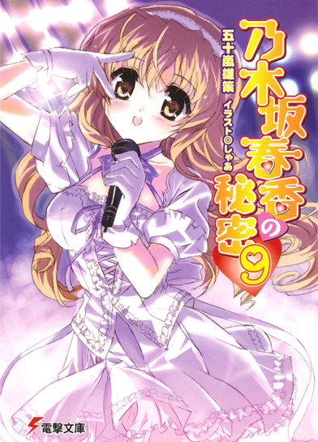
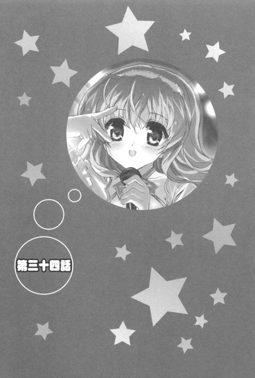
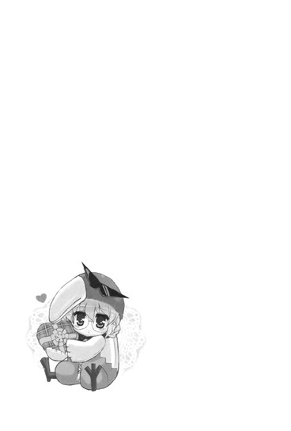

| [五十嵐雄策] 乃木坂春香の秘密09 | |
| 五十嵐雄策 | |
| (2015) | |
|
乃木坂春香の秘密 ９
五十嵐雄策
|
底本データ
一頁17行 一行42文字 段組１段

乃木坂春香の秘密⑨
容姿端麗で才色兼備、『白銀の星屑』という二つ名まで持つ超お嬢様、乃木坂春香。たくさんの初めてが溢れていた初デート中に撮影された写真は、記念として雑誌に掲載されるとのことだったのだが、なぜか春香ばかりが大きく扱われていて、そんな時に飛び込んできたのがオーディンョン合格通知なんてものだった。
どうやらオーディンョンにエントリーされたこと自体は手違いらしかったのだが、人数合わせのために本当に出てほしいと懇願され、困っている様子を放っておけず春香は了承してしまった。研修などを受けつつ、徐々に近づいてくるオーディション開催日。その日は折しもバレンタイン・デーと重なっていて──。
お嬢様のシークレントラブコメ第九弾（はあと）
五十嵐雄策
五十嵐雄策の秘密⑨。10月３日生まれのＯ型。第４回電撃ｈｐ短編小説賞最優秀賞を受賞し、文庫デビュー。最近の気分転換は作家友達と行くスキューバ・ダイビング。でも冬の寒い海はなかなか厳しく、勇気と耐久力が試されます。五十嵐さんの場合もちろん冬は......
イラスト：しゃあ
しゃあの秘密⑨。「電撃Ｇ'ｓマガジン」で『ＣＬＡＮＮＡＤ』のコミック連載中です。２００８年の冬もマンガにアニメにコミケにとまだまだ忙しいヤマから抜けられません。ごめんなさい。

乃木坂春香の秘密 ９
近くにありすぎるものってのは、意外にその大切さに気が付かないもんだ。
それは何かモノであったり目に見えない空気であったり、時には家族であったりするかもしれない。
どのようなものがそれに当てはまるかは人によって多種多様。
だけどそこに一つだけ共通していることがある。
それは喪失の時。
今まで当たり前にあったそれが消えてしまいそうになって、自分の近くから失われそうになって......初めてそれらがかけがえのないものだったってことに気が付く。
いわば後の祭りというかごまめの歯ぎしりの進化版（ちょっと違うか）。
「......」
まあそれはともあれ。
ともかくそれらは避けることができるのなら避けるべき事態であることに変わりはない。
それらは実際に生じてしまうとなかなかに厄介で......ひどく後悔を促してくるものである。
ただそれらは時に──偶然の産物を発生させることもある。
失くしかけることにより、逆説的にそこに存在していたものに気付かせてくれる。
もしかしたらケガの功名と呼ばれるものなのかもしれんが、そのヘンは俺のいまいち血糖値の低い脳ミソではよくは分からんかったりする。
「......」
いや本当に毎度のごとく迂遠なことこの上ないと自分でも思うが、結局何が言いたいのかというと
俺にとって何よりもかけがえのない存在になっていたぽわぽわお嬢様。
それが遠くに行ってしまいそうになって、俺の傍から消えてしまいそうになった時になって......初めて自分の気持ちってもんに気付けたってことだけなんだがさ。
第三十三話
０
それは色々と初めて尽くしでハートブレイクショット（心臓強打的な意味で）だった横浜みなとみらいでの俺と春香の、その、初デートが終わり、さらにガサ入れで「あ～ん」でイカメシライクだった椎菜のケガ＆お見舞いやらから数日が経った、二月頭のある月曜日のことだった。
学園での授業も終わった放課後。
俺は制服姿の春香といっしょに......学園からは二駅ほど離れたとあるビルの中にいた。
「......」
ちょっとしたホテルの一室を思わせる立派な応接室のような場所。
広さにして十五畳くらいのその部屋の中央で、俺たちは二人どことなく落ち着かない気分のままソファに座っていた。
「......」
目の前にいるのは二人の女性。
どこかおどおどした感じのメガネをかけた女の人とそれとは対照的にかなりライトな感じの女の人は......以前に大晦日やらみなとみらいやらで遭遇した茅原弥生さんと小早川希美さんである。
「......」
「......」
「......」
「......」
辺りを覆うのは沈黙というか微妙な緊張感だった。
バックに流されているヒーリングミュージックに紛れて漂うどこか張り詰めた空気はまるで限界までナイフが刺さった黒ヒゲ危機一髪のよう。
さてなぜ俺たちがこんな三者面談に臨む志望校ボーダーラインの受験生の親子状態になっているのかというと......話は単純である。
あの日春香のもとへと辿り着いた『オーディション合格』とやらの通知書。
一体何が何だか分からずに混乱する春香と俺たちのもとへ、直後に電話がかかってきたのだった。
『あ、え、ええと、乃木坂さんですか？』
『は、はあ......』
『あ、あの、私、茅原です。何度かお会いした......』
電話の主は今ここにいる当の茅原さん。
その内容は件のオーディション合格通知についての告知であり、そして詳しい説明をするために一度会いたいというものだった。
春香としても当然詳細というか何が起こっているんだか事情を聞きたいところである。
すぐにその提案に同意して、
そして現在、その詳しい説明とやらを聞くために俺たちはここ──『株式会社スリーピースプロダクション』とやらの事務所に来ているというわけである。
「え、ええと、それじゃあ、その、い、色々とお話をしてもいいかしら？」
どちらとも牽制するような雰囲気の中、茅原さんがおずおずとそう切り出した。
「あ、は、はい」
「ま、まずはあの通知書についてなんだけど......」
「え、ええ......」
さっそく出た本題となる単語に緊張したように息を呑む春香。
その春香に茅原さんは正面から両手をテーブルについて、
「──その、ご、ごめんなさいっ！」
「え？」
いきなりがばっと頭を下げてきた。
「あ、あのね、あれは......間違いなの！」
「間違い......？」
ってのはどういうことだ？
言葉の意味がよく分からずに顔を見合わせる俺たちに、
「え、ええ。何ていうかとっても面目ないことなんだけど......この前のイベントの時に写真を撮りましたよね？そ、それが手違いでオーディションの書類の方に混ざっちゃって、そのまま審査されちゃったみたいなの」
「え......？」
「ど、どうもね、バイトの子が間違ってそっちの箱に混ぜちゃってたみたいで......私たちも全然気付かなくて、先日になって合格通知が出た段階でようやく気付いたって状況なの。だ、だから本当にごめんなさい。び、びっくりさせちゃったわよね......」
もう一度ぺこぺこと頭を下げる。
「......」
うーむ、よく分からんが、どうもそういうことらしい。
要するに人為ミスによる誤配達ってことか。この上なく紛らわしいというか人騒がせな話だな。合格通知書なんてもんが届いた時にはホントに何が起きたのかと思ったもんだが......
「あー、だとしたら、あの合格通知は無効ってことでいいんですよね？」
俺がそう訊くと茅原さんは微妙に複雑な表情になって、
「あ、え、ええと......」
「？」
「な、何ていうのか、そ、そのことなんだけどね。実はそれについて乃木坂さんにちょっとだけお願いがあって......」
「はい？」
春香がちょこんと首をかたむける。
そこで茅原さんは真っ直ぐに春香の目を見て、
「あの、できれば──ほんとに出てくれないかしら！」
「え？」
いきなりそんなことを言い出した。
「あ、あの、それって......」
「こ、言葉の通り。十日後の二月十四日にあるオーディション本選に、乃木坂さんに本当に出てもらいたいの」
「え、えええっ!?」
その言葉に春香が超音波をぶつけられたイルカみたいに声を上げる。
いやまあそれは当然っちゃあ当然の反応だよな。そんなよく分からんオーディションにいきなり出ろって言われて「はい分かりました」と気軽にうなずけるもんじゃない。
そんな春香の反応に、茅原さんは慌てたような様子になって、
「あ、ご、ごめんなさい。な、なんか勘違いさせちゃったみたいね。え、ええとね、出るっていってもほんとに出場してくれってことじゃなくて......」
「え？」
「の、乃木坂さんが間違ってエントリーされちゃったことは事務所内では周知の事実なの。だから対内的には問題ないんだけど......ただもうプログラムとかも決まっちゃったし、プレス用に案内状とかも印刷しちゃったし、対外的には後に退けないっていうか......。だ、だから外に向けた人数合わせでいいんです！選考対象からは外すように計らいますし、プライバシーとかにも配慮します！も、もちろん乃木坂さんにもまったく手間をかけさせないってわけにはいかないし、色々と事前研修とかは受けてもらわないといけないから本当に申し訳ないことではあるんだけど、それも本選当日までのほんの三～五回くらいですから......っ！」
「え、で、ですが......」
「お、お願い！ できる限りのお礼はするし、最大限のフォローもします！これがうまくいかないと事務所の信頼的にも大問題だし、私たちのクビも飛ぶかもしれないのよ！う、ううん、私たちどころかバイトの子とかこのことに関わった人とかもまとめて......。だ、だからどうしても都合が悪いってことでなければ助けると思って......ね、ね？」
がんがんと頭をテーブルに叩き付けながら懇願してくる。
「あ、で、でも、あの......」
「お、お願いします！ ほ、ほら、希美ちゃんも頭を下げて！」
「え、わ、私もですか？」
「そ、そうよ、ほら早く！」
「は、はい。お、お願いします」
二人揃ってがごんがごん！ とテーブルに頭を叩き付けてくるというものすごい構図が出来上がった。
それを見た春香がすごく困った顔になる。
「え、えと、で、ですから......」
そりゃあ目の前でいい大人二人に土下座まがいのことされればなあ......
まあ茅原さんたちの気持ちも分かるし必死になるのもうなずけるんだが、春香にだって都合があるだろう。それに冷たいようだが、そもそもは茅原さんたち側のミスで起こったことである。同情はしてもその尻ぬぐいにまで付き合う義理はないというか......
「......」
だけど基本的におっとりぽやぽやでどこまでも人の好い春香には、そう割り切ることもできないようだった。
テーブルに向かってヘッドバンキングを続ける客観的にはヴィジュアル系バンドの熱狂的ファンを思わせる茅原さんたちの姿を見て、しばし発情期に入った親犬を見る仔犬のようにおろおろとしていたが、
だけどやがて何かを決意したかのようにこくんとうなずいて顔を上げると、
「──わ、分かりました」
「......え？」
「わ、分かりました......。私にできる範囲のことでしたら、協力させてください」
「ほ、ほんとっ!?」
その言葉に突然なんかのスイッチが入ったかのようにがばっ！と、茅原さんが叩き付けていた顔を上げた。
「え、ええ。お稽古とかもありますし、どこまでできるかは分からないのですが、私でよければ......」
「そ、そんな、よければなんて！ 私たちは乃木坂さんがいいの！う、ううん、もう乃木坂さんしか見えないっていうか......」
「は、はあ......」
「と、とにかく、ありがとうね！ このご恩は忘れませんから......っ！」
「は、はい」
春香の手をぎゅっと握りしめながら再び何度も何度もマメをついばむハトのように頭を下げてくる。
まあ向こうにしてみれば嬉しいのは分かるんだが......
「......春香、いいのか？」
茅原さんたちの過剰な反応に少し困ったように微笑む春香に声をかける。
いくら人数合わせのオーディション参加だからって面倒なことには変わりないだろう。それなりに時間的拘束もされるようだし......
だけど春香はふるふると首を振って、
「だいじょぶです。今月はそこまでお稽古は忙しくないですし......。それに茅原さんたちには写真とかでお世話になりました。私がちょっとお手伝いすることでそれが避けられるのなら......」
「そうか......」
まあ春香がそう言うのなら俺がとやかく言うようなことじゃないんだが......
「そ、それじゃ希美ちゃん、宣伝部の方に連絡して！乃木坂さんの了承がいただけたって」
「はーい！ えーと、内線内線......」
茅原さんたちがそんなことを言い合う中、
こうして、春香がオーディションとやら（ただし人数合わせ）に参加することが決まったのだった。
１
「そ、それじゃあ乃木坂さん。その、さっきの今で悪いんだけど......もしこれから時間があったら、さ、さっそく研修を受けたりとかもしていかないかしら......？」
「え？」
と、茅原さんがおもむろにそんなことを切り出してきた。
「あ、も、もちろん乃木坂さんの都合がよかったらでいいんです！で、でもほら、オーディション本番までもうあんまり日にちもないし、いくら人数合わせとは言っても乃木坂さんに恥をかかせるわけにはいかないし、受けられるのなら早めに少しずつでも受けてくれると嬉しいかなって......」
春香の顔色を窺いながらおずおずとそう言ってくる。
ふむ、さっき言ってた三から五回の事前研修ってやつか。確かに本番が十日後でそれまでに最大五回の研修ってのなら、あまり時間はないかもしれんな。
その申し出に春香はこっくりとうなずいて、
「あ、は、はい。私はだいじょうぶですが......」
ちらりと窺うようにこっちの方を見てくる。
明らかに一人だと不安で心細いって顔だ。
まあ......何度も何度も何度も言っていることだが、俺の予定なんてもんはウチで廃棄されたドラム缶のように転がっているアホ姉とセクハラ音楽教師へのエサやりその他（以下略）くらいである。特に支障はない。
なので、
「俺も平気だ。春香の都合が悪くないんなら、付き合うぞ」
「あ、そ、そうですか？ よ、よかった......」
ほっとしたような表情で春香は茅原さんたちの方へと向き直って、「でしたら......お願いします」
「ほ、ほんと？ あ、ありがとう！ じゃ、じゃあさっそくレッスン室へ案内するわね。二人とも、こ、こっちに来てくれるかしら？」
「は、はいです」
「分かりました」
先導する茅原さんたちの後に付いて二人並んで歩き出す。
事務所が入っているビルの中はどこも整然としていた。
オシャレな感じのインテリアでまとめられたフロア内では、あちこちでモデルっぽい人やアーティストっぽい人たちの姿が目に入ってくる。いかにもそういった芸能事務所という雰囲気だった。
「あ、こ、ここのビルはね、一階から五階まで全部うちの事務所のフロアになっているの」
茅原さんがそう説明してきてくれる。
「そ、それぞれ階ごとにセクションが分かれていて、一階が受付とか細かい手続きとかのフロア、二階が声優さんとかナレーション関係のフロア、そ、それで今から私たちが向かう三階が主にレッスン室とかスタジオとかのフロアになってる感じね」
「え、せ、声優さん？」
その単語に犬笛を聞いた仔犬のようにぴくんと反応する春香。
「あ、あら、興味あるの？」
「え？ あ、い、いえ！」
だが茅原さんに突っ込まれて慌ててふるふると首を振る。
「そ、そう......」
それにどこかがっかりしたような声を上げる茅原さん。
まあ今更ながらではあるが春香のそういった趣味に関しては秘密であるわけで、おおっぴらに興味があるとも言えんわけだしな。
そんなことを話しながら進んでいく。
観葉植物などが置かれた広めの廊下を通り抜け、
エレベーターで上へと昇り三階へ。
そして、
「は、はい、着いたわ。ここがレッスン室よ」
「わあ......」
「おお......」
俺たちが通されたのは......テレビで見るレッスン室をそのまま再現したような部屋だった。
ちょっとしたホールくらいの広さで、おそらく自分の演技とかを確認するためなんだろう、壁には一面に鏡が張られている。さらに部屋の奥部分には、伴奏などに使われるのか黒光りするどでかいグランドピアノが置かれていた。
「わあ、素敵なピアノです......」
と、春香がそれを見て目を輝かせた。
「これってベーゼンドルファーのインペリアルモデルですよね？おそらくはオーストリアから直輸入された......」
「え？ あ、そ、そうね。た、たぶんそうだと思うわ」
「やっぱり。すごいです......」
欲しかったオモチャを前にした子供みたいな目で弾んだ声を上げる。むう、やはり何だかんだ言って春香は本当にピアノが好きなんだな......
「あ、よ、よかったら何か弾いてみる？」
そんな春香を見て茅原さんがそう言ってきた。
「え、い、いいんですか？」
「も、もちろんよ。まだ講師の先生は来ていないし、乃木坂さんなら全然オッケー。ひ、弾いて弾いて弾き倒しちゃってちょうだい」
その申し出に春香はぱあっと顔を輝かせて、
「あ、ありがとうございます。でしたら──」
ぺこりと頭を下げてピアノの前のイスに座った。
一瞬の静寂。
そしてゆっくりと鍵盤に手を乗せると、
「......」
一度深呼吸のようなものをした後におもむろに指を動かし始めた。
同時にゆったりとした旋律が流れ始める。
「お......」
辺り一面を包み込むような耳心地の良い演奏。
一瞬にして部屋の中の空気がガラリと違うものになるのが分かった。
「わー、これってフォーレ作曲のノクターン四番ですねー。夜と星空の曲で割と有名なー。でもこれをこんなに澄んだ音で弾くのって初めて聴きましたよー。すごいなー」
小早川さんが両手を胸の前で合わせながら声を上げる。
その言葉通り、流れてくるのは透明な音だった。
曲の名前は聞いてもさっぱり分からんが、その音色の質だけは音楽センスが皆無な俺が聴いても一目で（一聴？）即座に違いが分かる。やはり春香のピアノは超一級品であるらしい。
「や、やっぱりすごいわ、乃木坂さん......。こんなにかわいらしくて可憐で、でもこんなに上手にピアノが弾けるなんて......う、うん、私の目に狂いはなかったってことね......」
隣では茅原さんがそんなことをつぶやいていた。
その後も春香はいくつか続けて曲を弾いた。
俺にはよく分からなかったが、小早川さんによるとタイトルは『バルカローレ一番・フォーレ』『洋上の小舟・ラヴェル』『ソナチネ一～三番・ラヴェル』らしい。
で、ひと通り演奏を終えて、
「あ、ありがとうございました」
恐縮したようにぺこりと頭を下げる春香。
自然とその場にいた全員から拍手が巻き起こる。
その反応に驚いたような顔で春香がおろおろと俺たちの顔を見回していると、
「あら～ん、ずいぶんとエレガンテな演奏だったじゃない～♪」
背後からふいにそんな声が響いた。
トーン高めのハスキーな声。
同時に俺の耳にふう～っと生暖かい吐息がかけられた。
「おわぁふ!?」
思わずハワイにあるどこぞの諸島みたいな声が出ちまった。な、何だ、これは何が......？
驚きとともに振り返ってみると、
「は～い、弥生。お・ま・た・せ♪」
そこにいたのは──
「あ、あら、つかさ先生......」
「こんにちは、弥生。ごめんなさいね、前のレッスンが長引いて遅くなっちゃって」
──そこにいたのは、長い髪をさらりとエアコンの風になびかせるいかにも業界人風なキレイな女の人......ではなくて、
「............」
なんか、いかついおっさんだった。
もみあげ付近にまで広がった砂鉄のように濃いヒゲ、一八〇センチはあろうかというがっしりとした身体、レッスン室の照明を反射してキラリと光る見事なスキンヘッド。
どこからどう見ても、横須賀の駐屯地にでもいそうなストロングフルなおっさんである。......そのどこかくねくねとした動きと口調を除けば。
呆然とする俺たちに、
「あ、え、ええとね、この人は岩城つかさ先生っていうの。うちの事務所の専任講師で、ボイストレーニングとか演技の指導とかを全般的に担当してくれている人で......」
「岩城つかさで～す。つかさちゃんって呼んでくれると嬉しいわ～。よろしくね～♪」
ごついおっさんが思春期の少女のようなかわいらしい仕草で手を振る。
そのアンビバレンツ極まりないどこか目まいを覚える不気──ゴホン、特徴的極まりない姿は、エキセントリックのハイエンドというか一度見たら忘れないというか、いかにも業界人っぽい、その、個性的なキャラだった（婉曲表現）。
「で、弥生。その子がそうなのかしら？ 例のオーディションの......」
「あ、え、ええ」
春香の方を見ながら二人で何やらひそひそとうなずき合う。
「？」
「あ、ああ、何でもないの。こっちの話で......。あ、それで乃木坂さん、今からこのつかさ先生に研修をお願いしようと思って......」
「あ、そうなんですか？ え、えと、乃木坂春香です。よろしくお願いします」
ぺこりと春香が頭を下げる。
「春香ちゃんね。うん、よろしく♪」
そんな春香ににこやかな笑顔でそう答えて、「──それで、そっちのかわいいボクは？」
こっちの方を指さしてそう言ってきた。
「え、俺ですか？」
「そうよ。他にだれがいるっていうの～？」
いやまあそれはそうだが......
「あ、あー、俺は綾瀬裕人っていいます。その、春香の付き添いみたいな感じで......」
「そう、綾瀬裕人くん。だったら裕くんね♪ よろしく、裕くん。あたし、お尻が二つに割れてる男の子って大好きなの、うふ（はあと）」
「は、はあ？」
「うん、あなたやっぱりいいカタチしてるわ～。さっき初めて見た時からそう思ってたのよね～。それにメガネ男子ってところもポイント高いかも～。その少し野暮ったい感じのフレームがまたそそるっていうか～」
ジュルリ、とアナコンダがハツカネズミの顔面を舐め回すような視線を送ってくる。
い、いや、なんか目がこの上なくイヤな感じに潤んでるっつーか、奇怪な悪寒が背筋の辺りにゾクゾクと這い上がってくるんだが......
得体の知れない危機感を覚える俺に、
「あ、あの、つかさ先生。個人の嗜好はそれくらいにして、ほ、本題の方を......」
茅原さんが横からそう突っ込んできた。
「え？ ああ、そうだったわね。ちぇっ、せっかくのおいしそうな青い果実だったのに......」
「......」
その言葉におっさん──岩城先生は心底残念そうに言って息を吐いた。な、なんか分からんが助かった......
「それじゃあ春香ちゃん、さっそく始めましょうか？」
かわいらしい口調とともに（決して声ではない）人さし指をぴっと立てる。
「まずは最初にボイストレーニングからやってみるわね。基本的な発声練習っていうか、とりあえずちょっと声を出してみてくれる？」
「あ、はいです」
言われて「あー♪」と小さく声を出す春香。「え、えと、これでいいでしょうか？」
「あら、いい声出すわね。何かやってたことがあるの？」
「あ、は、はい。ピアノのレッスンでソルフェージュをやっていましたし、少し前までは声楽と能のレッスンも受けていました」
「ああ、道理で。ボイストレーニングは？」
「あ、それはないかもです。発声法はやっていましたが......」
ふるふると首を振る。
それを見た岩城先生はうなずいて、
「そう。じゃあどうせだからちょっとやってみましょうか？声楽といわゆるポップスの発声とでは声の響かせ方とかがちょっと違うから」
「そうなんですか？」
「そうなの。じゃ、にゃ～って声を出してもらえる？」
「え？ にゃ、にゃあ？」
思わぬフレーズに春香が目をぱちぱちとさせる。
だけど岩城先生は真面目な顔で、
「だからにゃ～、よ。声の響かせ方を練習するにはこの発音がいいの。ちょうど鼻の頭辺りに抜く感じね」
自分の鼻を指で示しながらそう説明する。
どうやら別にこのおっさんが個人的に猫好きだとか特殊嗜好語尾が好きだとかそういうわけじゃなく、本当にそういうレッスン方法があるらしい（注：本当です）。
「それじゃ準備はいい？ はい、にゃ～♪」
「にゃ、にゃ～」
おっさんの合図に合わせて春香が慌てて声を出す。
「うん、いい感じね。きれいに響いてる。はい、それじゃそのままの状態でドレミファソファミレドって出してみてくれる？」
「にゃ、にゃ～にゃ～にゃ～にゃ～にゃ～にゃ～にゃ～にゃ～♪」
「はい、次はドミファソラソファミ」
「にゃ、にゃ～にゃ～にゃ～にゃ～にゃ～にゃ～にゃ～にゃ～♪」
「そうそう。いい？ 発声に一番大事なものは感情なの。音と響きと全てのモノを愛する気持ちなの。細かい技術だとかテクニックだとかなんてものはその後にいくらでも付いてくるものなのよ！」
力強く言い放つ。
どうもそういう信念があるみたいだな、このおっさん。......全てのモノを愛する気持ちの～のくだりのところでこっちをチラッと見てきたのが非常に気がかりだが。
「じゃあ今の感じでじゃんじゃん行くわよ～。はい、ワンツースリー」
「にゃ～にゃ～にゃ～にゃ～にゃ～♪」
「ファイブシックスセブンエイト♪」
「にゃ～にゃ～にゃ～にゃ～にゃ～にゃ～にゃ～にゃ～にゃ～にゃ～♪」
「ナインテンイレブントォエルブサーティーン♪」
「にゃ～にゃ～にゃ～にゃ～にゃ～にゃ～にゃ～にゃ～にゃ～にゃ～にゃ～にゃ～にゃ～にゃ～にゃ～♪」
目の前でひたすらにゃ～にゃ～と歌う春香の姿。
「......」
なんかシュールだ......
いや一生懸命に両手を握りしめながら（しかも猫手になってる）にゃ～にゃ～声を出している春香は、育ち盛りの元気な仔猫みたいでかわいいんだがさ。
そんな感じにレッスンは進められていった。
基本としては猫モード（にゃ～♪）をベースにしながらの様々な発声練習。
ステップが進むにつれ段々とレベルが上がってきているのは傍目からも分かったが、春香はどれもそつなくこなしていき、
「こういったレッスンを受けるの、ずっとあこがれだったんです。だからとっても楽しくて......♪」
そんなことを言ったりもしていた。
まあ普段が普段（天然ドジっ娘）なんでついつい忘れがちになるんだが、さっきのピアノといい、春香はスペックとしては何でもできる完璧超人兼超絶お嬢様である。その潜在能力はこういったボイストレーニングでもいかんなく発揮されているようだった。うーむ、やっぱり春香はすごいんだな......
そんなことを考えながら目の前のにゃ～にゃ～プレイを眺めていて、
「......ん？」
と、気付いた。
にゃ～にゃ～♪ と声を出している春香の表情。
それがさっきまでに比べて少し苦しそうになってきているというか......
本当に僅かな変化なため岩城先生たちは気付いてないみたいだが、毎日春香を見ている俺にはそれが分かった。
はっきりと原因は分からんが、おそらくは喉が乾燥してきたとかなんだろう。この部屋、意外に湿度が低そうな感じだし。
むう、だったらとりあえずここは──
「あー、すみません、ちょっと出てきます」
「あ、あら、どうしたの？」
「いえ、少し暑くなってきたんで外の空気でも吸ってこようかと......」
変に春香に気を遣わせるのもイヤだったのでそう言って静かにレッスン室を出ようとして、
「あん、どこ行くの、裕く～ん♪」
おっさんの野太い声に呼び止められた。
「つかさを置いてどこかに行こうとするなんていけない子～。つかさ、さみしくて死んじゃうかも～。──あ、でもお花摘みとかならしょうがないわよね。ちなみにトイレの場所は分かる？何ならいっしょに行って手取り足取り腰取り色々と教えてあげましょうか～♪」
「......」
いやあんたは春香のレッスンをやってる真っ最中だろ。
しかも別にトイレに行くわけじゃねえし。
というかここで一つすげぇイヤな事実に気付いた。
今まで心の奥底では気付きつつも目を逸らしてきていたというか、できることならあまり気付きたくなかった事実。
それは、
「......」
......このおっさん、喋り方が由香里さんに似てるんだよ............
ムダに間延びしたイントネーション。至るところにどことなくセクハラが入り交じった日常会話。ヘンにくねくねした動き。そういえば名前も上代と岩城だしな......
「......」
おそらくは今もウチの居間でごろごろぐだぐだとクダを巻いているだろうセクハラ音楽教師の姿が頭に浮かぶ。きっとあの人を外見だけごついおっさんにしたらこんな感じになるんだろう。それはもう確信を持って言えた。
「......」
いやだからって何がどうってわけじゃないんだがさ......
２
そういうわけでどこぞのセクハラ音楽教師と間違いなくソウルメイトだろうおっさんの流し目ライクな視線を振り切って、俺はレッスン室があるのとは別のフロアにやって来ていた。
場所にするとこのビルの最上階にあたる五階。
目的は何か飲み物を買うためである。
事務所の中は外から見るよりも意外に広かった上に、春香の好みに合いそうな紅茶かミネラルウォーター（軟水）が売っている自動販売機がなかなか見つからなかったこともあって、結局ここまで来ることになってしまったのだ。
「ふう......」
飲み物一つ買うのに一苦労である。
おかげで無事にレモンティーを買うことができたんだが、時間もそれなりにかかってしまった。レッスン室を出て来てからもう十五分ほどが経ってしまっている。
「さっさと戻らんとな......」
いいかげん春香も心配するだろう。
自分の分も合わせたペットボトルを両手で抱えて、春香が猫モード（にゃ～♪）になっている三階に戻ろうとした時のことだった。
「ちょっと、そこのマネージャー！」
「え？」
いきなりどこからかそんな怒声が響いた。
やたらと通りのいい凛とした声。
「......」
マネージャーって......俺のことか？
周りを見回すもそれらしき人物はいない。
なので振り向いてみると、なんか廊下の一番奥にある控え室のようなところのドアが少し開いていて、そこからメガネと帽子を被った一人の女子が顔を出していた。
「何をぐずぐずしてるのよ！ 飲み物買ってきてってさっきから頼んでたでしょ！全然戻ってこないんだけど、まだなの!?」
「は？ いや俺はマネージャーなんかじゃ......」
ないんだが。
だがそんな俺の言葉などまったく聞かずに、
「いいからさっさと行けって言ってるのよ！ 私の喉を渇いたままの状態にしておくなんて何様のつもりなの!?分かったら早く行ってきて。コーラの炭酸抜きを三分以内にね！」
「いや、だから......」
「うるさい口ごたえするなさっさと行け」
「わ、分かった」
なんか身体が勝手に動いちまった......
やたらと命令慣れた声に気圧されたというか、そもそもの問題として天王寺家で執事体験をやって以来そこはかとない従属気質が身体に染みついているのかもしれん。イヤな話だ......
ともあれとりあえずフロアの隅にあった自動販売機でコーラを買って戻る。
「か、買ってきたぞ」
で、そのコーラの缶を振って炭酸を抜いた状態にして手渡すと、
「ふん、遅いわよ。三十点ってところね。もちろん五百点満点で」
イスにふんぞり返りながらの偉そうなそんな返事が戻って来やがった。
「......」
いや百点満点で六点はないだろ......
あまりに突き抜けた労いの言葉に怒りとかを通り越して呆れの境地に入りかけて、
「......ん？」
あることに気付いた。
てかこいつ......どっかで見たことがないか？
やたらと偉そうな態度、人の胸を抉る口の悪さ、周りの反応をまったく気にしない唯我独尊っぷり。──ああ、そうだこいつ、あの大晦日の時にぶつかってきた帽子女じゃないのか？今日はあの時とは違う帽子を被ってメガネをかけているため分かりにくいが、この口の悪さは間違いない。いや何でこいつがここに......
首を捻りながら訝しんでいると、
「ていうか......そういえばあんただれよ？」
今さらそんなことを言い出しやがった。
「よく見てみればマネージャーとかじゃないわよね。なんか見かけない顔だけど？不審者？ストーカー？それとも下僕志望？」
「......」
何だその選択肢は。
「......どれも違う。俺はただちょっと用事があってここを通りかかっただけだ」
「ふうん......」
俺の言葉に稲穂の先にとまったコメツキバッタを見るような目で、「まあ、あんたがだれだろうとどうでもいいんだけど」
「......」
自分から訊いておいてどうでもいいとか言うな。
おまけに本当に心底興味がなさそうだし。
まあそれはともかく。
とりあえずこの短時間のやり取りだけでこいつができる限りこちらからは関わらない方がいい人種であることは分かったような気がした。おそらくだがどこぞの天王寺さんちのブリザードお嬢様と同系統だろう。こういうヤツに対してはとにかく関わらない相手にしない反論しないの一手に限る。
「あー、会ったばかりでアレなんだが俺はそろそろ......」
なので速やかにこの場から立ち去ろうとして、
～～～♪
どこからか着信音のようなものが鳴った。
「──はい、もしもし」
どうやら目の前の唯我独尊女の携帯だったようで、手に取って耳に当てると、
「ちょっとあんた、どこをほっつき歩いて......は？炭酸の入ってないコーラがどこにも売ってない？それで今どこにいるのよ？はあ、浅草？何それ、意味分かんないんだけど」
受話口に向かって声を上げる。
なんかよく分からんがもめているみたいである。
──とりあえずこの隙に離脱した方がいいな。
ちょうどいいチャンスである。
電話に夢中な唯我独尊女を尻目にひっそりと部屋を出ようとして、
「ちょっと待ちなさい」
「ぐぼっ!?」
置いてあった傘の柄でいきなり後ろから首もとを引っかけられた。
「お、おま......何を......」
人の喉仏を本当の仏にする気か。
痛みで思わず涙目になって抗議する俺に、
「勝手に行くんじゃないわよ。まだちゃんと私に挨拶をしてないでしょうが」
そんなことを言いやがる。
私「が」じゃなくて私「に」ってところが端的にこいつの性格を表してるな......
「入退室の際の挨拶は礼儀の基本でしょう。それをないがしろにするのは見過ごせないわ」
「だ、だからってな......」
「それに──ちょっとあんたに用事ができたのよ。今のコーラといい、あんた割と使えそうだから」
携帯を畳みながらじろりとこっちを見た。
「用事......？」
「そうよ。あんた──私のマネージャーになりなさい」
「は、はあ？」
またいきなり何を言い出すんだ、こいつは。
「勘違いしないで。マネージャーって言っても何も正式雇用して辞令を出そうってわけじゃない。そんなのはこっちもゴメンだし、お断りで願い下げだわ。今だけのバイトみたいなもんよ」
「いやそういう問題じゃなくてだな......」
一時的だとか永続的だとかじゃなくて、その辺を歩いてた初対面の相手を捕まえてマネージャーをやれってこと自体に問題があるっつーか。
だが帽子女ははーっと息を吐いて、
「しょうがないでしょう、人手が足りないんだから。招き猫の手でも借りたいってやつ？まったく、アホな日替わりマネージャーは迷子だし弥生の方は何だか知らないけど絶対に外せない大切な用事があるとかでどっかに行っちゃうし、ほんっとにだれもかれも使えないったらありゃしない。ぶつぶつ......」
文句を言いながらかつかつと靴裏で床を叩く。
「──とにかくいいわね？ これは決定事項よ」
「いや何を勝手に......」
「頼んだわよ。ああ、そういえば。まだ挨拶してなかったっけ。私は──」
人の話をまったく聞かずに一方的に話しながら帽子とメガネを取る。
そこから出てきたのは肩の辺りで揃えられたさらさらなピンク色の髪の毛と、左目の下にある星形のメイクが特徴的な強気な表情。
「え......？」
それを見て思わず声が漏れた。
声というかほとんど息が漏れた。
いやだってそこにいたのは......
「──姫宮みらんよ。まあ、とりあえずはあんたでガマンしてあげるわ」
「まずは今からちょっとした取材と撮影があるの。色々とめんどくさい雑事とかが絡むから、あんたにはそれを手伝ってもらうわ」
「......」
「基本的なセットとかメイクとかは終わってるから、後は衣装を選んで......って、ちょっと聞いてるの、あんた」
「え？ あ、いや......」
聞いてはいたが頭には入ってなかったというか。
......だってそうだろ？
このアナーキーな唯我独尊女があの姫宮みらんだって言われてホイホイと受け入れられるはずもない。まあこの場（芸能関係の事務所）にいるくらいだからモデルか何かだとは思っていたが、まさかよりによってそこまでの有名人とは......
「......なあ」
「？ 何よ」
「本物、なんだよな......？」
どごっ！
いきなりスネを蹴り飛ばされた。
「何よ、その失礼な質問は」
「い、いや、だってな」
疑いたくもなるっつーか......
なまじ『Chocolate Rockers』の曲は好きだっただけあって、目の前の傍若無人女とのギャップが激しすぎる。海辺で拾った宝石箱を開けたら中から凶暴なウツボが出て来たような心地だ......
「ったく、これだからアホな男は......。それよりいいわね。あんたには働いてもらうわよ」
「ん、あ、ああ......」
まだどこか呆然としたまま返事をしかけて、「──あ、いや、ちょっと待て」
大事なことを思い出した。
「？ 何よ？」
「や、ちょっと用事があってな......」
春香のところへ戻らんとならん。ただでさえ出て来てから時間が経ってるってのにこれ以上はさすがにマズイだろう。そんなよく分からんマネージャーの真似事なんてしてる場合じゃない。
そのことを説明すると、
「......ボイトレのレッスン？ ああ、岩城のおっさんのやつね。それなら問題ないわ。あれだったら短くても二時間は終わらないから」
「え？」
「二時間は大丈夫だって言ったの。あのおっさん、一度ハマるとなかなか次に進まないから。それに飲み物とかの心配もいらないわ。そういうノドのこととかには敏感だし。今頃おっさん特製のハーブティーでも出されてる頃じゃない？」
そう言ってきた。
どうやらそういうことらしい。それならまあ時間的には問題はないような気がしないでもないが......って、それで済む話なのか？
どこか釈然としない気分になる俺に、
「そういうことね。だからあんたが私のげぼ──マネージャーをやるとしても何も支障はないってわけ。──それじゃあ私は着替えるから、そこの衣装を取ってきなさい」
そう言ったかと思うと、
がばっ！
いきなりその場で服を脱ぎ始めた。
「!?」
だ、だから、何を始めやがるんだ、こいつは!?
突然の脱衣ハプニングにほとんどパニック状態になる。
両手でメガネのフレームを覆いながら思わず抗議すると、
「はあ？ だれもあんたのことなんて男だと思ってないから平気よ。気になるんなら見なきゃいいだけの話でしょう」
「そ、そういう問題じゃなくてだな！」
「そういう問題よ。だいたいライブの時とか野外撮影の時とかなんてもっと過酷な場所で着替えることもあるのに、これくらいでいちいち気にしてたらこんな仕事はやってらんないわ。いいからあんたは余計なことに口出ししないでさっさと持ってくるものを持ってきなさい」
「......」
もう何を言ってもムダっぽいな......
とりあえず言われる通りに衣装とやらを取りに行った方が賢明だろう。そうすれば少なくとも、その、目のやり場に困ることもなくなるわけだし。
色々なことに諦めのため息を吐いて衣装が置いてあるスペースへと移動する。
小さなウォークインクローゼットのようになっている場所にズラリと並んだ衣装の数々。
「で、どれを持っていけばいいんだ？」
「適当でいいわよ。トップスはシャツ系でボトムはスカート系で、後はあんたの趣味に任せる」
「任せるったってな......」
女子の服の趣味なんてさっぱり分からんのだが。
とはいえ愚痴を言ってもどうにもならない。仕方ないので普段椎菜が着ていた私服を参考に選んでみることにする。椎菜も『Chocolate Rockers』のことが好きだし、きっとセンスも似ている......んじゃないかと思う。
そう結論づけて選んでみたところ、
「へえ、意外にいい組み合わせじゃない。あんた、そんな顔して意外にセンスいいのね」
「そんな顔は余計だ......」
で、手渡した衣装に着替える。
「メイクとか衣装とかも全部一人でやってるのか？」
詳しくは知らんが、普通こういうもんには専用のスタッフが付くもんじゃないのか？
「そうよ。細かいことはその都度のマネージャーと弥生に任せてるけど、基本は私がやってるわ。最初は色々いたんだけど、みんな一ヶ月もすると来なくなってね」
「......」
そりゃあこいつの性格じゃあそうだろうな......
「まあ別にいいわよ。使えない有象無象がいたって足手まといなだけだし。──ほら、それより次は靴とかの小物よ。とっとと取ってきなさい」
「ん、あ、ああ」
ったく、人使いが荒いな。
ため息を吐きつつ立ち上がろうとして、
「──ああ、そういえばあんた」
「？ 何だ？」
そこで呼び止められた。
「あのさ、一つあんたに訊きたいことがあるんだけど」
真剣な顔でこっちをじーっと見てくる。
何を訊かれるのかと思えば──
「そういえばあんた、名前何だっけ？」
「......」
普通はそれを最初に訊くもんなんだがな......
そんなこんなで撮影と取材とやらが始まった。
同じ五階にある写真撮影用のスタジオのような場所。
三十畳ほどのそのスペースにはカメラマンらしき人たちや雑誌のライターらしき人たちがたくさん集まってきていた。
そんな中でみらんは、
「えっと、すみません、こっち目線もらえますかー？」
「軽く新曲をハミングとかをしてもらえると......」
「ポーズとか取ってもらってもいいですか？」
リクエストに応えてポーズを取ったり質問に答えたりと、大忙しだった。
その姿はさっきまでの唯我独尊女のそれとはまったくもって違うもので、何というか......プロの顔だった。さすがというか見直したというか、やっぱりあれはテレビの向こうで歌っている『Chocolate Rockers』の姫宮みらんなんだな......とこの場で初めて心の底から思わされた。
とはいえ常にそんな対取材用状態だったわけではなく。
小休憩の時間などには、
「ちょっと綾瀬裕人、疲れたからイスを用意して」
「あ、ああ」
「早くしてよね。まったく、反応速度がゾウガメ並みなんだから」
「......」
色々な意味でさっきまで通りだった。
他にも何かある度にやれポーチを持ってこいだの飲み物を買ってこいだの照明担当の男の後退したデコに光が反射してまぶしいから何とかしなさいだの疲れたから場を和ませるためにおやじカンガルーの物真似をやれだのｅｔｃ......
パシリと命令の連続。
問題の撮影とやらは休憩を入れて一時間弱程度のものだったんだが、その間に何度心の奥底で東京湾海底谷（深さ約三百メートル）よりも深いため息を吐いたか分からん。
おかげで撮影が全て終わる頃には、俺はもうボロボロのクタクタだった。
「つ、疲れた......」
メガネを半分だけ上にズらしながら埋もれるようにソファに顔を沈める。
こんなに体力を使ったのは天王寺家でのバイト以来かもしれん......
ほとんど絞りきったボロ雑巾状態で、控え室の中にあるソファの上で魚市場に並べられたオジサン（別名海鯉、流通規格外な超低価格海水魚）のように横たわっていると、
ベタッ！
頬にいきなり冷たい感触が押しつけられた。
「のわっ!?」
慌てて飛び起きる。
するとそこにはアンパサの缶を手にこっちを見下ろすみらんの姿があった。
「な、何だ？ どうかしたのか？」
「......ほら、飲みなさい」
「え？」
「......飲みなさいって言ったの。ご褒美よ。そこそこには役に立ってくれたから」
そのままぐりぐりとえぐるように押しつけてくる。
どうやら飲み物を買ってきてくれたらしい。
相変わらず扱いがぞんざいというかそもそもどこからこんなマイナーな飲料（アンパサ）を買ってきたのかが謎だが、これでも本人は労ってくれてるつもりなんだろう。まあ外観的には缶を握り込んだ拳でスローなコークスクリューブローを放っているようにしか見えないんだがそれはさておき、ひとまずありがたく受け取ることにした。
「おお、美味いな」
平常時に飲めば微妙な味だろうが、疲れて乾ききったノドにはもはや何でも甘露だった。
その反応に、
「でしょう？ 当然よ、私のお気に入りの逸品だもの」
「......」
胸を張りながら誇らしげに言う。
どうも姫宮みらんは味覚も常人とは一線を画する存在のようだった。
「そういえばあんた、連れが岩城のおっさんにレッスンを受けてるとか言ってたわね？」
と、みらんがそんなことを訊いてきた。
「ん、ああ」
「何だってそんなことしてるわけ？ 練習生か何かでここに入るつもりなの？」
アンパサの缶を傾けながらそう尋ねてくる。
「いや、そういうわけじゃなくてだな......」
オーディションに間違ってエントリーされたことなどを含めて大まかに事情を説明する。
「ふぅん、事前研修......」
「ああ、らしい」
「よくそんなもんを了承する気になったわね。何のメリットもないってのに。あんたの連れってアレなの、馬鹿が付くくらいのお人好し？それとも偽善者？」
相変わらず口が悪いな、こいつは......
「春香はそんなんじゃない。ただなんつーか、困ってる人とかを放っておけない性質なんだよ」
「......」
「それにあの茅原さんって人も悪い人じゃなさそうだしな。そんな人が困ってるんなら助けたいと思うのは、別にそこまでおかしなことじゃないだろ」
「悪い人じゃない、ね......」
と、そこでみらんが自嘲するかのように息を吐いた。
「まあ......アレは見かけはそうだろうけどね。ぱっと見た限りは人畜無害なお節介焼き。だれかのために何かをやるのが生き甲斐みたいな感じかしら。ううん、中身も本人はそう信じ込んでるだけなおさらタチが悪いっていうか......」
「？」
「......何でもないわ。私が口で言ったって仕方のないことよ。そんな義理もないし。──さて、と、そろそろ次の仕事の時間ね」
そう言うとみらんは「んー」と背筋を伸ばしながら立ち上がった。
「え？」
「これから次の仕事だって言ったのよ。今度は十八時から恵比寿のスタジオで新曲の録音があるから」
「十八時......」
って、あと三十分くらいしかないぞ？
今ひと仕事を終えたばかりだってのにロクに休憩もなしに次のスケジュールなのか。大変なんだな......
少しだけ見直した気分になる俺の前でみらんは再び帽子とメガネとを装着すると、
「まあ、あんたのおかげで仕事の進みはだいぶスムーズだったわ。感謝してる。臨時のバイトにしてはそれなりに気が利いたし」
「お......」
「それと連れの子のことを馬鹿な偽善者って言ったのは言い過ぎだったわ。悪かったわね。それだけは撤回させてもらうから。──じゃあね」
そう言って足早に部屋を出て行ったのだった。
「......」
ふむ、もしかしたらこの唯我独尊女もそんなに悪いヤツじゃなかったのかもしれんな。ただ口と表面上の態度が致命的に悪いだけで。
３
「だいぶ遅くなっちまったな......」
携帯で時間を確認しながら階段を下っていく。
現在の時間は十八時二十八分。レッスン室を出て来てからすでに一時間半近く経過している。
春香はまだレッスンをやってるんだろうか？それともすでに終わって俺が戻ってくるのを待ちくたびれているとか......
そんなことを考えながら、すっかり温くなったレモンティーとアンパサ（みらんが土産としてくれた）を両手に早足で三階のレッスン室へと戻る。
「すみません、戻りました！」
防音仕様が施された通常のものよりも少し分厚い扉の向こう。
その向こうに、まだ春香はいた。
出て来た時と同じように岩城先生、茅原さん、小早川さんたちに見守られてにゃ～にゃ～と楽しそうにボイストレーニングを受けている。
ただ一つだけ出て来た時と異なっていたのは──
「あ、裕人さん、お帰りなさいです♪」
「......」
なんか......春香の頭にネコミミがついていた。
柔らかそうな毛がもふもふと立派に生えたネコミミ。
まがうことなき見事なネコミミお嬢様である。
......いや、何だこれは？
俺の願望が視覚神経を侵した末の目の錯覚か？いやいや、もしかしたらこれもまたレッスンの一環で、着けていると音感がよくなるとか声の響きが立体的になるとかそういうもんなのかもしれん。
そんなことを考えていると、
「あれはあたしの趣味よ♪」
そんな身もフタもない答えが返ってきた。
「だって一生懸命に歌う春香ちゃんがあまりにもかわいいものだから、ついイジりたくなっちゃって～。下の声優フロアのマネージャーに借りてきたの。でもどうどう？いい感じにハマってるでしょ？」
「............」
超個人的な理由だった。
いや確かにネコミミをつけてさらには手を猫手にして一生懸命にゃ～にゃ～と歌う春香の姿はもうどうしようもないくらいにかわいいんだがさ......
そんな風に微妙に見とれていると、
「あら、気に入った～？ だったら裕くんも着けてみない、これ？」
「は？」
いきなり岩城のおっさんがそんなことを言い出した。
「うん、きっと似合うわよ～♪ あ、もしもネコがあんまり好きじゃないんだったらイヌミミとかウサミミも用意でき──」
「遠慮させてもらいます」
「え～、そんな即答しなくても～。残念ね、絶対似合うと思うんだけどな～」
「......」
似合ってたまるか......
それは人として男として、何か致命的なモノを失った瞬間のような気がする。
「え、ゆ、裕人さんも着けるんですかっ？」
「......」
なんか春香も物欲しそうな目でこっちをじ～っと見ていたことについては......見なかったことにしよう。
「さてと、それじゃ裕くんも戻ってきたことだし、ボイストレーニングはこれくらいにしておくとして......。──それじゃあ次は......エチュードをやってみましょうか？」
「エチュード？」
春香（ネコミミ付き）がちょこんと首をひねる。「練習曲......ですか？」
「ああ、違うの。確かにピアノとかヴァイオリンとかではそういう意味だけど、こういったレッスンでは演技練習のことを言うの。まあ簡単に言うとお題を与えられてそれに沿って演技をする即興劇みたいなものかしら～。分かる？」
「あ、はい。何となくは......」
「うん、それで十分よ。それじゃあとにかくまずはやってみましようか。案ずるよりも三つ子を産むが易しっていうしね♪」
そう言うと岩城先生は箱のようなものを持ってきた。
小さめのみかん箱くらいの大きさの何の変哲もない箱。
「この中にはカードが入ってるの。で、カードには色んなシチュエーションっていうか色んな状況が書かれている。そのカードを引いて、出たカードにある指示に従ってその状況をアドリブで演じる感じね～。いい？」
「あ、はい」
「じゃあ引いてちょうだい」
言われて春香（ネコミミ付き）が「え、えいっ」と箱の中からカードを取り出す。
出て来たカードに書かれていたのは、
「どれどれ......うん、『寂しがり屋の女の子が大きくなりすぎて飼いきれなくなっちゃったペットの最愛のコモドオオトカゲの子供トカゲと夕日が照らす河原で涙の別れをするシーン』ですって。あら、素敵じゃない♪」
「......」
......いや、ちょっと待て。
素敵とか何とかいう以前に本当にそれが入ってたのか？なんかいい話っぽくまとめているものの、やってること自体は爬虫類の不法投棄っつーか。そもそも〝最愛のコモドオオトカゲ〟っていうフレーズ自体からしてガッカリ感が漂いまくってるんだが......
そんな俺の内心の突っ込みなどはあまり気にしていないようで春香は、
「こもどおおとかげさん、ですか......」
「そうよ～。細かいシチュエーションとかはその場に応じて自分で設定しちゃっていいから、とにかくやってみてくれるかしら？」
「わ、分かりました」
こくんと小さくうなずいて、
そしてエチュードとやらが始まったわけだが──
「──きょ、きょうで、おわかれなの、ですね、パトラッシュ（棒読み）」
「......」
「わ、わたし、お、おわかれ、したく、ないです。も、もっと、あなたといっしょに、いたいです（かなり棒読み）」
「............」
一生懸命な顔で演技をする春香。
まあ愛コモドオオトカゲの名前がなぜかナチュラルにパトラッシュなのはさておき。
これは別にわざとやってるとかじゃなくて、おそらく緊張してるんだろうな。いつかのピアノコンクールの時も前回の写真撮影の時もそうだったが、とにかく春香は人前で何かをするのが基本的に苦手らしい。
「あ、あなたが、い、いにゃくなったら（噛んだらしい）、わたしは、どう、やっていきていけばいいのか、わからなくて......」
油の切れたロボットのような硬い動き。
その表情は明らかにそれまでのものとは違いガチガチである。うーむ、ただ撮られるだけだった写真撮影や習っていたという発声法に近い分だけ馴染みのあったボイストレーニングと比べて、今回は初めてのものに自分から能動的に何かをしなければいけないってのも大きいのかもしれん。おまけにアドリブ要素も要求されるわけだし......
周りでは茅原さんたちも、
「こ、これってあの時と同じ......。や、やっぱり乃木坂さん、人前で演技とかをするのは苦手なのかしら......」
「う、う～ん、さっきのボイトレとかを見る限りセンスは基本的に悪くないはずなのに、どうしてこうなっちゃってるのかしら？ん、ん～......」
困ったように揃って首を捻る。
その視線を受けて、また自分でもぎこちない演技になってしまっていることは分かっているのか、春香の表情がどんどんと焦った＆沈んだものになっていく。
「え、え～と、春香ちゃん？ もう少しリラックスっていうか、肩の力を抜いた感じでやってみてくれるかしら？」
「あ、は、はいっ」
「緊張とかしなくていいからね～。自然に語りかけるつもりでやればばっちりだからん」
「わ、分かりました」
うなずき返して演技を再開する。
だが自然にやることを意識すればするほど緊張のスパイラルにはまっていくようで──
「パ、パト、ラッシュ、も、もう、あなたの、かわいいおかおが、みられ、ない、なんて......」
「......」
「わ、わたし、あなたに、あなたが......」
「............」
もはやメタメタだった。
もうこれ以上続けても春香が落ち込む一方というかいたたまれない気分になるだけだろう。ここは一度仕切り直して落ち着かせるべきかもしれん。
なので、
「あ、あー、すみません」
「な、なに、綾瀬くん？」
「あの、春香も疲れてきたみたいですしこの辺で少し休憩を入れて──」
そう提案しようとして、
「──あ、そ、そうだったわ！」
「？」
俺の顔を見た茅原さんがぱちんと手を鳴らした。
「す、すっかり忘れてた。ね、ねえ綾瀬くん。よかったら──綾瀬くんもいっしょにやってみないかしら？」
「え？」
いきなり指名された。
「ほ、ほら乃木坂さんは緊張してるみたいだから、綾瀬くんがいっしょにやってくれれば少しは落ち着くんじゃないかと思って。ど、どうかしら？」
「それは......」
春香の力になれるってのなら願ってもないことなんだが。
チラリと春香の方を見る。
レッスン室の中央でうつむく春香は、群れからはぐれた赤ちゃんスズメみたいな心細そうな顔でぽつんと胸の上に両手を当てていた。
「......」
そう、だな。
少なくともこのまま春香一人で続行させるよりは遥かにいいだろう（シャレではなく）。
「──分かりました、やります」
「ほ、ほんと？」
「はい、というかむしろやらせてください」
「え、ええ、もちろん大歓迎よ！」
茅原さんがそう大きくうなずき、
ということでエチュードとやらに参加することになったわけだが。
しかし何だか最近は演技だとか演劇だとかにやたらと縁があるな......
４
「あー、大丈夫か、春香？」
「裕人さん......」
そう声をかけながら傍まで歩いていくと、春香がゆっくりと顔を上げた。
「緊張するのは分かるけど、失敗しても別に何があるってわけじゃないんだ。できる限り落ち着いていこうな」
「はい、です......」
しょんぼりと小さく声を返してくる。
むう、だいぶ落ち込んでるみたいだな。こうなったらここは──
俺はできる限り自然に笑顔を作って、
「──なあ春香、今週のドジっ娘アキちゃん、見たか？」
「え？」
「だから今週のドジっ娘アキちゃんだ。一昨日の夜にやってたよな？」
「え、ええ、そ、それは、見ましたけれど......」
でもそれが一体......って顔で春香が目をぱちぱちとさせる。
「俺も見たんだ。で、ほら、今回はあそこのところが面白くなかったか？あの、アキちゃんとメグちゃんが二人揃ってヘコむところとかが......」
「あのエビの養殖詐欺に遭うところ......ですか？」
「ああ、あれってクルマエビなのか？」
「あ、えと、あれはですね、たぶん伊勢エビです。伊勢エビ養殖場への投資は利殖が将来有望だと言われて、それで二人ともその気になってしまって......」
「ふむふむ」
「悪い人が、フィリピンとかに養殖場を作ったように見せかけて事業は好調だって説明するんです。でもそれは偽物の養殖場で、実際はただの小さな港で......」
ぱたぱたと両手を振りながら身振り手振りで説明してくる春香。
話が進むにつれその表情は次第にいつものほんわかぽわぽわとしたものに戻ってきていて──
「──もう、大丈夫みたいだな」
「え？」
「肩の力、だいぶ抜けたんじゃないか？いい感じに見えるぞ」
「あ......」
そう言うと春香は再び目をぱちぱちとさせて、
「は、はいです。何だか気持ちが軽くなった気がするといいますか、とってもリラックスできた感じで......」
と、そこまで言いかけて春香は何かに気付いたようにはっと口元に手を当てた。
「──あ、ありがとうございます。こうなることを考えて裕人さん、アキちゃんのお話をしてくださったんですね......」
「あー、いや」
まあその通りではあるんだが、そうはっきりと口に出されて感謝されると気恥ずかしいっつーか。
ともあれ結果として春香が元気になったならよかった。
「は～い、それじゃ二人とも、そろそろ準備はいいかしら～？」
と、そこで岩城先生が両手を胸の前で合わせながらかわいらしく（何度も言うが声ではなく口調が）そう言ってきた。
「あ、はいです」
「大丈夫です」
「ん、よ～し♪ じゃあじゃあ、次は気分を一新する意味で、違った題目のをやってみましょうね～」
そう言って岩城先生が箱に手を入れる。
出て来たのは──
「はい、これね～。──ええと、『遊園地での初デートを終えたばっかりの初々しいカップル。観覧車から降りたばかりの女の子が、別れ際に想いを抑えきれずにベンチから立った瞬間につい男の子の服の裾を掴んじゃうシーン』だって。うふ、いいじゃない、青春ぽくって♪」
「え？」
「あ......」
俺と春香が同時に声を上げる。
「？ どうしたの～？」
「あ、い、いや」
「な、何でもないです」
不思議そうな顔をしてくる岩城先生に慌てて首を振った。
「......」
いやなんか狙ってるんじゃないだろうな、このカード......
この前の遊園地デートとひどくデジャブを覚えるシチュエーションである。さっきのコモドオオトカゲといいこれといい、色んな意味で突っ込みどころがありすぎるラインナップっつーか......
「はい、それじゃあ始めましょうか～。スタートは春香ちゃんたちに任せるから、好きなタイミングでやってくれていいわよ～♪」
岩城先生が楽しげに言う。
そして二人でのエチュードとやらが始まったものの──
「......」
「......」
なんか......沈黙だった。
いやここ最近オーディションだなんだでゴタゴタしていたため忘れがちというか棚上げ状態になっていたんだが、俺たちはついこの前に、その、初デートを終えたばかりである。まだその時の余韻がどこかに残ってるっつーか、この狙い澄ましたかのような題目でリフレインさせられたっつーか......
それはやはり春香も同じなのか、
「あ、え、えと......」
頬を赤らめながら戸惑ったように顔を逸らす。
「あ、あー......」
「そ、その......」
声は出るのだけどその後の言葉が続かない状態。
ベンチ代わりに用意されたパイプイスの脇で二人揃って顔を見合わせていると、
「ほら、ちょっと二人とも、何してるの～？ タイミングは任せるって言ったけど、あんまり遅いのは男女関係で色々と世の中損をするわよ～」
さすがに待ちきれなくなったのか岩城先生がそう急かしてくる（そこはかとなくセクハラ風味で）。
む、むう、微妙に抵抗があるんだがこうなったらやらんわけにはいかんか......
「あ、あー、春香──」
仕方なく何とか演技を開始しようとして、
「あの──裕人、さん」
「お......」
先に春香の方から顔を上げてそう言ってきた。
「私......今日はまだ、お別れしたくないです。も、もう少しだけ、裕人さんに触れていたいです......」
「春、香......？」
「だ、だめでしょうか......？ わ、わがままなお願いだということは分かってます。でも......」
そっと制服の裾を握りながらこっちを真っ直ぐに見上げてくる。
──これは、エチュードとやらが始まったってことでいいんだよな？
おそらくはそれで正しいと思われる。
名前がそのまま（裕人）なのはアレだが、きっとその方がやりやすいと春香が考えたからなんだろう。そう判断して、
「い、いや、ダメってことはないぞ。むしろドンと来いというか......」
「ほ、ほんと......ですか？」
「あ、ああ」
「え、えへへ......。うれしい、です......」
そう言ってじっとこっちを見上げてくる春香の顔はこれ以上ないってくらいに愛くるしいものだった。保護欲ビーム炸裂というか、思わずそのまま力いっぱい抱きしめて頬ずりをしたくなるような可憐なイノセントスマイルで......
「......」
──って、いかんいかん！ これはあくまで演技だ！エチュードとやらの一環で、リアルにそういったシチュエーションに遭遇してるわけじゃない。おかしな勘違いは色々と余計な事態を招くだけだろう。
そう思おうとはするものの、
「裕人さんが傍にいてくださると、それだけで安心できるんです。まるで寒い冬の夜に干し立てのお布団に包まれているみたいっていうか......」
「......」
「だ、だからついつい甘えたくなってしまう感じで......」
「............」
「あ、す、すみません。な、何だか私、おかしなことを言っているかもです......。で、でもそれは私の心からの本当の気持ちで......」
胸に直接染み入ってくる台詞。
真に迫った......というか、まるで普段の春香が素でそういった行動をしてくるかのようにそう俺の顔を見上げてくる（分かりにくい）。
「ゆ、裕人さんの胸......とってもあったかいです......」
「......」
──い、いや、これはホントに演技、なんだよな？
ふわりと鼻元をくすぐるいつもの春香の柔らかな香り。
少しだけ上気した頬。
どこか潤んだように見えるつぶらな瞳。
その全てがすさまじいまでの攻撃力をもって俺に襲いかかってきていて......
マ、マズイ、このままだと理性が......
ブレーキの壊れたダンプカーのごとく本能野放しの暴走状態になるのは時間の問題である。
だがそんな俺の青春一七五パーセントな葛藤など素知らぬ顔で、
脇では岩城先生たちが、
「すごい......さっきとは見違えたわ～。想いのこもった台詞、自然に甘える動作、ひと時の別れすら惜しむ女の子の微妙な表情......全てが絶妙よ。それにあの安心しきった笑顔は何なのかしら。ボイトレの時も、ううん、ピアノを弾いている時でさえもあそこまで素敵な表情じゃなかったのに......」
「そ、そうなのよね、やっぱり綾瀬くんが近くにいれば春香ちゃんは何でもできるのよね......。それ自体は喜ぶべきことなんだけど、ちょっと複雑な気分......」
などと言っていたが、そんなもんはもう俺にとってはとっくにどうでもよかった。
なぜなら俺の意識は全身全霊をかけておはようからおやすみまであますところなく目の前でちょこんとこっちを見上げてくる春香に注がれていて......
「ゆ、裕人さん......」
「あ、ああ......」
「わ、私、私......ゆ、裕人さんが......」
そう小さく声を上げると、
何かを決意したかのように、春香はぎゅっと身を寄せてきた。
そのまま、俺のヒザの上に身体を乗せるように全身を預けてくる。
「!?」
思わずビクビクンッと身体を動かしちまった。
こ、これはどういうことなんだ!? い、いやエチュードの一環だってことは分かってるんだが、そうじゃなくてその中でもこの行為が意味するところは一体......
もたれかかってくる春香の身体に半ば空気イス状態になりながら混乱する俺に、
「あ、ご、ごめんなさいっ。ゆ、裕人さんの顔を見ていたら、こうしたくなってきてしまって......。あ、あの、いけなかった......ですか？」
「！ そんなこと！」
天地がひっくり返ってもあるはずがない。
すると春香はふにゃんと胸をなで下ろしたような顔になって、
「そ、そうですか。よ、よかった、です......。ほ、ほんとは、ずっと前からこうしたくて......」
「え？」
「ま、前からうらやましいと、ちょ、ちょっとだけ思っていたんです。おひざの上でごろごろしたり、頭を撫でてもらったり、楽しそうに甘えたり......」
「......」
それって......美夏にやったやつだよな？
クリスマスやら温泉やらこの前の乃木坂邸やらで半ば無理矢理リクエストされたものである。いや他でもやってたか？まああのツインテール娘は年中そんなことばかり言ってるから特定できんというか......
ま、まあそれはともかく。
問題になるのは現在の状況である。
よくは分からんのだが、前からうらやましかったってことは春香も以前からこういうことを積極的にやりたかったってことなのか......？
「そ、それが今日、また叶っちゃいました。だ、だから嬉しくて。え、えへへ......」
そんなことを考えている間に、春香はさらに甘えるようにして顔を埋めてきた。
どこまでも安心しきった仔犬のような表情。
──う、や、やばい、かわいすぎるぞ......
かわいさに一日の限界摂取量なんてものがあったらほとんど致死量に達しているレベルである。いやもうすでに色々な意味で昇天しかかっているというか......
春香の柔らかさを全身で感じながらそんなことをぼんやりと考えていると、
その時、
「あ......」
「お......」
こっちを見上げていた春香と目が合った。
クロスカウンターのような見事な交錯。
む、むう、相変わらず春香の目は透き通った宝石みたいでキレイだな......などとそこはかとなく思っていると、
次の瞬間......その春香の目が、そっと閉じられた。
「!?」
こ、これは!?
一瞬錯乱状態になるも、だがすぐに思い直す。
い、いや、これはまたいつものアレだろう。
前回美夏から吹き込まれた『おに～さんと二人きりになった時に目をつむるといいことがあるよ？』をまた実践しているのか、それとも何か違うテーマを吹き込まれたのか、あるいはエチュードということで何か意図があるのか......
いずれにせよ過度な期待は禁物である。
「あ、あー、春香」
なのでできる限り平静に淡々と対処しようとして、
そこで......何だか春香の様子がいつもと違うことに気付いた。
どこか落ち着かない様子というか、緊張しているような感じというか......
いやそりゃあエチュードをやってるってことで普段と違うってのもあるんだろうが、そうじゃなくて何だか雰囲気自体が別物なんだよ。うまく言えんが空気の質が違うというか......
「......」
む、むう、何なんだ、これは......？
加えて目の前にある春香の淡い桜色な唇は、まるでハチドリを誘う花の蜜のごとく俺の視線と意識とを一手に惹き付けまくっていて......
「............」
──こ、ここは特攻すべきなのか!?
テンパりつつ自問する。
何だか毎回同じことを言っているような気がせんでもないが、なんか今回はいつもとは違う気がするんだよ。俺の中の雨の前のアメフラシ並みの第六感が告げているというか......
と、とにかくだ！
ここでアクションを起こさないのは日本男児じゃない！
そう心の中で雄叫びを上げて、
俺は──目を閉じる春香の肩を両手でグッと掴んだ。
「！」
ぴくん、と僅かにだけその華奢な身体が震える。だけど振り払おうとする動きだとか嫌がる素振りだとかは見せない。
「は、春香......」
「............」
こ、これはありってことだよな......？
これでそうでなかったら正直俺はもうこの先どう対処したらいいのか分からん。
そして思い切って俺の顔面を動かそうとしたところで──
「す、すみません！ 遅れちゃいましたっ！」
「！」「!?」
そんな声がレッスン室に響き渡った。
慌てて俺も春香も、電磁石が反発したかのようにばっ！と離れる。
「ご、ごめんなさいっ！ 遅くなってしまってっ......」
「あら、野乃ちゃんじゃな～い」
見てみるとドアのところにいたのは、俺たちと同じか少し下くらいの感じの女子だった。
どこかの高校の制服姿で、困ったようにおろおろと辺りを見渡している。
「どうしたの、そんなに慌てて～？ 何か忘れ物でもした～？」
「え、そ、その、忘れ物というか、レッスンが......」
「レッスン？ 今日はあなたのレッスン日じゃないわよ～？」
「え？」
その言葉に女子が驚いたような顔になる。
「あなたのレッスンは明日でしょ？ 一昨日言ったじゃない、今日は臨時で特別レッスンが入るかもしれないから延期にするって」
「あ......」
むう、どうやらここの事務所の練習生みたいだな。それもどうも、レッスンの曜日を間違えて今日ここにやって来た。
女子は慌てたようにわたわたと俺たちの方を見回すと、
「あ、す、すみませんでしたっ！ わ、私、す、すっかり勘違いしていて......。し、失礼しますっ！」
そうぺこん！ と頭を下げると、逃げるように出て行った。
「......」
「......」
「あ、二人ともごめんね～、いいところで中断させちゃって。続けてくれていいわよ～」
「......」
「......」
いやそう言われてもな......
隣で春香も顔を真っ赤にしてもじもじしちまってるし。
すると岩城先生はちょこんと小首をかしげて、
「あらん、もうお終いなの？ もうちょっとだけ二人の甘酸っぱいスイートタイムを見てたかったような気もするんだけどな～。ま、でもいいわ～。今のだけでも、す・て・きなシーンが見られたから。うふ♪」
意味ありげに笑う。
「......」
「......（真っ赤なままの春香）」
そりゃお終いにせざるを得んだろ......
まあそんな感じで、
二人でのエチュードとやらは無事に（？）終わったのだった。
＊
「............」
「あら、どうしたの弥生。何だか浮かない顔してるわね～」
エチュードが終わった後、
他にだれもいなくなったレッスン室で、茅原さんと岩城先生が二人で話をしていた。
「せっかくレッスンも無事に終わったっていうのに～。あ、もしかして春香ちゃんの演技のことかしら～？」
「......。......え、ええ......」
岩城先生の言葉に茅原さんが力なくうなずく。
「う～ん、そうね。後半はすごくいい感じだったけど、前半の一人でやってる時はちょっとアレだったもんね～」
「そ、そうなのよ。あれをどうにかしないことには乃木坂さんは......っ」
「まあ確かにねぇ......。ん～、でも要するに春香ちゃんは裕くんが近くにいると思えば一人でも大丈夫なのよね？だったら──やりようはあるかも～」
「え、ほ、ほんとですか？」
「ええ。たぶんだけどね～」
「ど、どうするつもりなの、つかさ先生」
「ん～、だからね、緊張であがるなんていうのは心の問題なのよ。ピアノだってさっきのボイトレだって突き詰めれば人前で何かをやってるってことには変わりはないのに、あっちは問題なく一人でもできてたわ。つまりは春香ちゃんは潜在的には一人で何でもできる素養を備えてるってこと。だったらね──」
そう言って、岩城先生はにやりと不敵に微笑んだのだった。
５
「ふう、やっと終わったな......」
「そうですね......」
お互いに顔を見ながらそんな言葉を交わす。
事務所を出ると外はすっかり真っ暗になっていた。
時間にして午後の八時を少し回ったところ。
辺りに漂うのはもう完全に夜の空気である。
あの後──二人でのエチュードが終わった後に、茅原さんから今後の研修日程やその内容などについての説明をひと通り受けて事務所を出て来てみれば、いつの間にかこんな時間になっていたのだった。
「けっこう色々と説明事項があったからな......。そういえば大丈夫なのか、門限とかは？」
「あ、はいです。今日は少し遅くなるかもしれないと言っておきましたから......」
「そっか」
ならいいんだが。
そんなことを話しながら並んで歩道を歩いていく。
交わされるのは普段通りの何てことのない会話。
だが何気ない顔をして歩きながらも......俺の頭にはまださっきの春香とのエチュードのビジョンが微妙に残っていた。
どこか今までとは違う雰囲気で目をつむった春香。
あれは一体何だったのか......
「......」
......分からない。
分からないが......このままじゃ眠れそうにない。
だから、
「──なあ、春香」
「はい？」
「さっきのエチュードのことなんだが......」
思い切って──訊いてみることにした。
さっきのエチュードの時に目をつむった理由。
まあおそらくはいつものようにまた美夏たちに何か言われたうんぬん～とかいう答えが返ってくるんだろう......と思ったんだが、
「あ、そ、その......」
「？」
「......そ、その、わ、私にも分からないんです」
「え？」
春香の口から出たのは......そんな言葉だった。
「じ、自分でもどうしてあそこでああしてしまったのか分からなくて......。き、気付けば目をつむっていたというか......」
「え......？」
「ああしなければならない気分になっていたというか......」
「......」
それって......
思わず言葉が止まる俺に、
「で、でも何だか確信はあったんです。あの時はきっと、あ、ああやって目をつむることが正しいことのように思えて......」
「春香......」
「お、思い返すと、い、今でも胸がどきどきしてしまいます。苦しいのだけど、でもけっしてイヤではない感じのどきどき......。どこか胸の奥があたたかく、ほわっとなってくるどきどきです......」
胸に手を当てながら安らいだ表情を向けてくる。
「......」
それは、じゃあ......
エチュードの中のこととはいえ、春香が初めて自分の意思で目をつむって何かをしようとしてくれたってことなのか......？
もし本当だとしたら、小さいがそれは確かな前進である。イナダがワラサになった感じというか......
「春香......」
「裕人、さん......」
そこはかとない嬉しさを感じつつ思わず道の真ん中で見つめ合っていると、
「──あ～、やっと来た！ お姉ちゃん、おに～さん！」
「！」「!?」
そんな声が響いた。
見ればそこにあったのは......ツインテール娘とにっこりメイドさん、無口メイド長さんの姿。
「み、美夏、那波さんに、葉月さんも......」
三人揃ってどうしたんだ？
すると美夏は両手を腰に当てて、
「どうしたもこうしたもないよ～。お姉ちゃんたちがなかなか帰ってこないから、話し合いがどういう事態になってるか気になっていてもたってもいられなくなって来てみたんじゃ～ん」
「え......」
「もう少しお戻りになられなかったら、葉月さんと二人で現場へ踏み込もうと思っていました～」
「......特攻です」
それぞれツインテールとハンマーとチェーンソーを振り回してそう言ってくる。
どうやら心配してわざわざ駆けつけてくれてたみたいだった。
「あ、ご、ごめんなさい。色々とありまして......」
「あー、スマンな。でもな大丈夫だ。特にトラブルとかがあったわけじゃない」
春香と二人でそう説明する。
「え、そなの？」
「ああ、まあ詳しい顛末やらは後でちゃんと説明するが......」
その言葉に美夏は納得したようにうなずいて、
「ふ～ん、分かったよ。ま、ごたごたとかがあったんじゃないんならい～んだけど。──って、あれ、でもお姉ちゃん、なんか顔が赤いよ？」
「え？」
「うん、真っ赤っか。てゆうかおに～さんも茹で上がったアサヒガニ（三宅島周辺でよく採れる高級甲殻類）みたいに赤いんだけど。なんかあった？」
下から覗き込むようにしてそう訊いてくる。
「あ、い、いえ、その......」
「い、いや、別に何もないぞ。これはただ、建物の中が暑かっただけで......」
二人して同時にそう否定する。
それを見た美夏がにやりと笑って、
「ん～？ な～んかあやしいな～♪ まさかとは思うけど、ほんとは話し合いはもっと早く終わってて、二人で楽しくらぶらぶなこととかしてたんじゃないよね～？」
「ま、まさか！」
「そ、そんなこと......」
「あらら～、さらにお顔が真っ赤になっていますよ～」
「......愛宕山の大天狗面のようです」
那波さんと葉月さんまでもがそんなことを言ってくる。
うう、だからそんなんじゃないってのに......
だけど。
この日は春香が初めて自分から、その、何らかのアクションを起こしてくれた日として、俺の記憶の最重要フォルダに分類されることになったのだけは......確かなんだよ。
第三十四話

０
二月に入っておよそ一週間が過ぎた。
春香といっしょに『株式会社スリーピースプロダクション』とやらを訪問してからおよそ四日ほどが経過したとある何てことのない普通の日。
昼休みのクラスは、いつも通り弁当やらパンやらを食べながらの雑談というかクラスメイトたちの賑やかな声に包まれていた。
「それでそこでシュモクザメがさ」
「分かる分かる。時代はメジロザメ目だねー」
「そうか？ やっぱり一番クールなのはゴブリンシャークっつーか」
交わされているのは何気ない会話。
本当に何てことのない日常会話というか普通の昼休みの光景である。
そんな中教室の隅では三馬鹿たちが、
「諸君、いよいよＸデーが迫ってきた！我々男子にとって夢と希望と未来への輝きとに満ち溢れる日だ！」
「ええ、そうですね！」
「おうともよ！」
「もはや言うまでもないと思うが......二月十四日といえばバレンタインだ！」
「バレンタインといえばチョコレート......チョコレートといえばやはり女子が自らの身体にリボンを巻いてチョコレートでコーティングすることに風情がありますね」
「プレゼントはチョコとわ・た・し♪ ってやつだな！分かるぞ、分かるとも！」
「......」
ムダにハデなジェスチャーを交えながら熱弁を振るっていた。
まあその相変わらずカオスな内容というかグダグダっぷりはともかくとして、
「......」
そういえばもうすぐバレンタインか......
何となくそう思う。
ここのところ色々とバタバタしていてそんなもんはすっかり頭から消失していたが、考えてみればもうそんな時期だったな。
一歩間違えるとバンアレン帯（地球磁場に捕らえられた、陽子・電子からなる放射線帯）と混同しそうなアレな単語。
「............」
とりあえず......そこにロクな思い出はなかった。
これまでの二月十四日は特に何も語るべきことがないまま終わったり、ルコと由香里さんにいちおうカタチばかりのチョコをもらったものの後のホワイトデーで肉体をとことんまで使ったお返し（単純労働。パシリとも言う）を要求されてエラい目に遭ったり、はたまた信長に渡してもらうよう頼まれたチョコレートを山ほど押しつけられたりと（外見だけはアレだから中身を知らない相手にはやたらともてやがるんだよ......）、どこまでも散々だった。唯一心安らぐ要素といえば信長の妹である真尋ちゃんが毎年かわいらしい手作りのチョコレートケーキをくれることくらいか......
「......」
......いやホントにロクな記憶がないな......
改めて思い返してみても本当にこれっぽっちも何の生産性もないメモリーに、心の底からため息が出て来た。まさに灰色の思い出というか......
「......」
今年は、どうなんだろうな......
チラリと春香の方を見る。
にこにこぽわぽわなお嬢様（本日日直）は、小さく鼻歌を口ずさみながら楽しそうに学級日誌に本日の一言を書き込んでいた。
「......」
うーむ、全面に想いのこもった豪華手作りチョコ（トリュフ入り）なんてのは調子に乗りすぎかもしれんが、義理よりは少しランクが上の仏契義理（？）ランクくらいは期待してもいい......んだろうか。
「............」
分からん......
何せ相手はあの春香である。
そもそもバレンタインについてあまりよく分かっていない可能性もあるし、仮に分かっていたとしても考えてみれば二月十四日は例のオーディション（人数合わせ）の本番の日である。準備やら何やらで春香も色々と忙しいだろうし、そんな浮ついたイベントをしているヒマなんてないのかもしれん。当日は割と夜遅くまでやるようなことを言ってたし......
机に頬杖をつきながらそこはかとなくそんなことを考えていると、
「──あ、ねえねえ、裕人ー！」
「お」
ふいに声がかけられた。
呼びかけてきたのはショートヘアーのフレンドリー娘だった。
二メートルほど離れた教室の後ろから、澤村さん朝比奈さんとともにこっちに向かって手を振っている。
「ん、どうした椎菜？」
振り向いて返事をするとにっこりと笑って、
「ねえ裕人、今日の放課後って、ヒマかなー？」
首を少しかたむけながらそう訊いてきた。
「今日か？」
「うん、そう。四時くらいからなんだけど、よかったらいっしょにカラオケに行かない？」
「カラオケ？」
「そだよー、どうせなら綾瀬っちもいた方が楽しいかなーって思ってさー」
「よ、よければ綾瀬くんもどうでしょうか？」
澤村さんと朝比奈さんもそう声を添えてくる。
むう......カラオケか。
割と急な話だがここのところあまり行ってないし、久しぶりに悪くないかもしれんな。
なので了解の返事を伝えると、
「ほんと？ やった！ だって、良子、麻衣」
「うんうん、これで綾瀬っちはゲットー」
「そ、そうだね」
嬉しそうに澤村さんたちとうなずき合う。
そう笑顔を見せる椎菜の様子は、もうすっかりいつも通りのものだった。
元気度マックスというか普段通りのフレンドリー度数一四五パーセントというか......ふむ、ちょっと前まではどこか様子というか反応がおかしくて心配したもんだが、どうやらもう大丈夫みたいだな。
まあそういった状態に至るまでには温泉での遭遇ハプニングだとかイカメシ絡みの葛藤だとか色々とあったんだが、それもあの見舞い時の話し合いで無事にわだかまりは解けたようである。ひとまずはひと安心ってとこか。
そんなことを考えて一人心の中でうなずいていると、
「あ、ねえねえー、よかったら春香ちゃんもどうどうー？」
「え？」
と、そこで澤村さんがそう口にした。
突然自分の名前を呼ばれて、春香（楽しそうに日誌書き込み中）がちょっとびっくりしたように顔を上げる。
「カラオケだよー。ほらほら、まだ春香ちゃんといっしょにカラオケって行ったことなかったよねー。だからよければって思ってー。ね、麻衣もそう思うよねー？」
「う、うん、春香ちゃんの歌、聴いてみたいです」
澤村さんの言葉を受けて朝比奈さんもそううなずく。
その言葉に春香はぱっと表情を輝かせて、
「わあ、からおけですか？ は、はいです、まだ未経験ですし、ぜひ行ってみたいです......あっ」
と、そこで何かに気付いた顔になった。
ちょっとしょんぼりとした様子になって、
「あ、すみません......。今日はちょっと用事が入っていたのでした......」
「え、そうなのー？ 習い事か何かとかー？」
「え、ええ、そのような感じ、かもです......」
曖昧な感じで春香がうなずく。
春香にしては珍しくいまいち煮え切らない反応なのは、おそらく用事ってのが例の事前研修とやらだからなんだろう。オーディションの一件については他の人には言わないように茅原さんから念を押されているため、根が正直な春香としてはああいう返答にならざるを得なくなったんだと思われる。
「そっかー、残念だけどそういうことだったらしょうがないかー」
「ごめんなさいです......せっかく誘っていただいたのに......」
「あ、いいっていいってー。また誘うから、その時にいっしょに行こー！」
にこやかに澤村さんがそう顔の前で手を振って、
「んー、春香ちゃんはだめかー。こうなったらもう人選に贅沢は言わないけど、でももう少し人数がいた方が盛り上がるからだれか適当に......あ、それじゃ、永井っぺたち、いっしょに行くー？」
「え？」
「お？」
「あ？」
その呼びかけに即座に三馬鹿たちが反応した。
「わ、我々、ですか？」
「うん、そうだよー。あ、別になんか用とかあったら全然いいんだけどさー」
「よ、用などあるはずがない！」
「い、いえ、たとえあったとしてもそんなものは二の次といいますか」
「たとえ雨が降ろうとガンランスが降ろうと行くに決まっている！おお、神様仏様澤村マリア様！」
机から身を乗り出しながら必死な表情でそう声を上げる。
いやお前ら普段はあんだけ二・五次元にしか興味がないようなこと言ってたクセに、いざ自分たちが当事者になったら温泉旅行の時に引き続きそれか......
ミイラ取りがミイラになったのを見る気分である。
まあそれはさておき、
「じゃあ決まりだねー。放課後はみんなでカラオケにレッツゴー！」
澤村さんが片足をイスに乗せてそう力強く宣言して、
その傍らで朝比奈さんが「りょ、良子ちゃん、スカートでそんな格好しちゃだめだって。み、見えちゃうよ」と腕を引っ張っていて、
そのさらに横で椎菜が少し困ったように「あ、あはは......」と笑っていて、
まあそういうわけで──放課後に澤村さん、朝比奈さん、椎菜、三馬鹿、俺の七人でカラオケに行くことが決定したのだった。
１
「それじゃあ春香......なんか俺だけ遊びに行くってのも悪い気がするんだが、研修がんばれな」
「あ、そ、そんな、とんでもないです。悪いことなんて少しもないですから。私のことなんて気にせずに裕人さんはからおけを楽しんできてくださいね♪」
放課後。
にっこりと微笑みながらぱたぱたと手を振ってくれる春香にそう言って、俺は教室を出た。
微妙に気は引けるものの、春香本人も気にするなと言ってくれた以上あまり気を遣いすぎるのも逆にマイナスである。なのでできるだけヘンには気にしない方がいいだろう。
ちなみに向かう道中は俺一人である。
何だかよく分からんが皆それぞれカラオケ前にやることがあるとのことで（澤村さんと朝比奈さんは部活の小用、椎菜は楽譜の買い物、三馬鹿たちは......よく分からん）、待ち合わせは現地集合ということになったのだった。
「ええと、確かバセラだったな......」
学園を出てそのまま最寄りの駅へと向かう。
集合するカラオケボックスがあるのは、電車で一駅行った先にあるアーケードの中だった。
この近辺では最も娯楽施設や飲食店などが集まっている繁華街で、白城学園生が帰りによく立ち寄るスポットの一つにもなっている。俺も信長や三馬鹿たちと何回か行ったことのある場所だった。
「少し遅くなっちまったか......」
携帯を見ながらそうつぶやく。
目的地である『カラオケバセラ』に着いたのは、集合時間よりも五分ほど遅れてだった。
待ちきれないようなキャラばかりだし、もう他の皆は始めてるかもしれんな。
そんなことを考えながら足を運んでいく。
予約した部屋は三〇三号室とのことだったので、エレベーターで三階にまで上がり通路を進み、
二十歩ほど歩くとすぐに部屋は見つかった。
キャパシティ的にはけっこうギリギリな八人部屋。
扉の向こうではすでに澤村さんや三馬鹿たちによって狂乱の宴が繰り広げられていると思いきや──
「──お？ 椎菜だけか？」
「あ、裕人」
部屋の中にいたのは椎菜一人だった。
フロートが浮かんだメロンソーダをストローで突つきながら、ぱらぱらと手持ちぶさたに歌本をめくっている。澤村さんや朝比奈さん、三馬鹿たちの姿がどこにも見当たらない。
「他の皆はまだ来てないのか？」
「あ、うん、みたい。もう時間なんだけど......あ」
と、そこで椎菜が携帯を見て小さく声を上げた。
「麻衣からメールが来てた。えっとなになに......『りょ、良子ちゃんが途中でドネルケバブの食べ放題を見つけて挑戦しちゃいました......。ちょっとだけ遅れます......』だって......」
「......」
そういうことらしかった。
澤村さん、自分から誘っといて相変わらずフリーダムだな......
どこまでもマイペース極まりないというか。
「もう、良子ったら......」
椎菜も呆れたように苦笑を浮かべる。
二人してため息を吐きながら顔を見合わせていると、
ブブブブブ......
「......ん？」
と、今度は俺の携帯が雨の中の仔ヤギのように震えていた。
ポケットから出して見てみる。
するとそこにあったのは、
「『そっちに向かう途中で小川が三輪車にはねられた！ケガは大したことないんだがその弾みで小川のメガネと永井のバンダナが川に流されて今それを追っているところだ！ゆえに少し遅れる！』......」
の文字だった。
いや何やってるんだよあいつらも......
「え、永井くんたちも遅れそうなの？」
「あー、みたいだな......」
メールを見せながら椎菜にうなずき返す。
まったく揃いも揃って何なんだか。
クラスメイトたちの集合率の悪さっぷりとそのアバンギャルドっぷりに半ば呆れていると、
「............」
なんか、椎菜が黙り込んでいた。
腕を組みながら口元に手を当てて、どこか考え込むような顔で下を向いている。
「？ どうしたんだ、椎菜？」
怪訝に思って声をかけてみると、
「え？ あ、な、何でもないよ！ ちょっと考え事をしてただけで......」
「？」
「た、大したことじゃないから。き、気にしないで」
ぱたぱたと手を振りながらぽそりと小さくつぶやく。「まさか、ね......」
「??」
なんかよく分からんが、気にするなと言うのならあまり深く突っ込むべきじゃないだろう。
「あー、じゃあ澤村さんたちは当分来ないみたいだし、ひとまず俺たちだけで先に始めとくか」
時間制限もあるわけだし、せっかくカラオケに来てるんだから歌わなきゃもったいない。
「あ、う、うん、そうだね。やっちゃおっか」
何かを振り払うようにして椎菜もそれにうなずいて、
というわけでとりあえず二人でカラオケを始めることにした。
適当に話をしながら、マイクの準備をしたりする。
「あ、そういえば裕人とカラオケに来るのって初めてだよね？」
と、椎菜がふと顔を上げて言った。
「ん、そうだったか？」
「うん、よく音楽の話とかしてたから意外な感じだけど、実はそうだったり」
「ふむ......」
言われてみればそうだな。クラスの連中とは何度か行ったことがあるんだが、椎菜とは初めてかもしれん。
「ねえ、裕人は普段どんなの歌うの？」
「ん、そうだな。だいたいは最近に出たやつとかドラマの主題歌になってるやつとかか......」
「へー、そうなんだ？ 『Chocolate Rockers』は？」
「いやあれは難しいからな......」
音域といい歌い方といい、素人にはなかなかマネができんというか。
そういった点においてのみ本当にみらんはすごいと思う。おそらく俺たちとそう歳は変わらないだろうに、あれらの曲を完璧に歌いこなせる歌唱力と技術力。中身とか人間性とかについては、まあ脇に置いておくとして、だが。
「ふふーん、だったらあたしが歌っちゃおっかなー」
と、椎菜が片目をぱちりとつむりながらそう言った。
「え？」
「『Chocolate Rockers』。けっこう得意なんだよ♪」
「お、本当か？」
俺の言葉に椎菜は自信ありげにうなずいて、
「うん。あ、でもただ歌うんじゃ面白くないって気もするなー。せっかくなんだし何か......ん、そうだ、どうせだったら勝負しない、裕人？」
「勝負？」
「そ。ほら、この機種って採点機能が付いてるでしょ。あれでどっちが高得点を取れるか勝負するの。五本勝負くらいで。で、勝った方が負けた方に一つだけ命令できる。どう？」
「歌対決みたいな感じか......」
こういったカラオケでは定番だが、悪くないかもしれんな。
「分かった、いいぞ。面白そうだ」
「でしょでしょ？ 裕人ならそう言ってくれると思った。じゃ、決まりね♪」
嬉しそうにそう言って、
「じゃあまずはあたしから歌うね！ んー、どれからいこっかなー。これもいいしこっちも気になるし......よし、『Chocolate Rockesrs』で、『あいまいハニービーンズ』！」
ぴっと曲番号を打ち込んだ。
流れ出すのノリのいい賑やかなビート。
それに合わせて椎菜が振り付きで歌い始める。
そういう次第で始まった歌勝負だったが──
「よーし、九十一点！」
「くそ、七十二点か......」
「やった、九十七点だよ！」
「七十七点......」
「うん、九十五点っ！」
「......七十五点............」
結果は──
「やった！ あたしの勝ちー！」
「......。負けた......」
途中経過を見てもだいたい分かる通り、一勝四敗で俺の完敗だった。
「へへー、悪いね、裕人」
「......」
完敗というかほとんど惨敗。
いやまったくの言い訳になるんだが、椎菜はめちゃくちゃ歌が上手かったんだよ。
終わってみればどれも聴いているこっちが感心するような声量と歌唱力で、得点にしてみても九十点以下が一つもない。俺が唯一勝てたのがシャレで歌ったベートーベンの第九（ソロプレイ）で、なぜかこの日自己最高の九十二点をたたき出したってんだから救いがないよな......
「ふっふっふっー、さーて、敗者の裕人くんには何をしてもらおうかなー？」
にんまりとした笑みとともに椎菜が顔を近づけてくる。
「お、お手柔らかにな......」
「えー、どうしよっかなー？ それは裕人の態度次第っていうか──」
そこはかとなく小悪魔な微笑。
まあいかに何でも命令できるとはいえ、椎菜のことだからそうひどいもんにはならんと思うんだが......
それでも若干不安になる俺に、
「よーし決めた！ それじゃあねー......」
椎菜の目が楽しげにきらん！ と光り──
「じゃあさ裕人。裕人にいくつか訊きたいことがあるんだけど、いいかな？」
──椎菜が提案したのはそれだった。
「訊きたいこと？ それは構わんが......」
どうしてそれが罰ゲームになるんだ？
首を捻る俺に、
「んー、何て言うかね、たとえそれがちょーっと答えにくいことだったりしても、裕人は正直に答えなきゃいけないの。黙秘権はなしだからね♪」
「ナルホド......」
それなら確かに十分に罰ゲームたりうるな。
「それじゃいい？ じゃあまずは最初の質問、裕人の初恋の人の名前は？」
「う......」
いきなり答えにくい質問だった。
地味ながら確実に罰ゲームのツボを押さえてきているというか。
「ほらほらー、どうしたのー。早く吐いちゃえー♪」
椎菜がつんつんと俺の胸をつっつきながら急かしてくる。
うう、仕方ないか......
俺は覚悟を決めて、
「......さん、だ......」
「え？ 聞こえないよ」
「......。......由香里、さんだ......」
絞り出すようにそう口にした。
「え、由香里さんって......もしかして、由香里先生？」
「......。ああ......」
不覚というか黒歴史なことこの上ないが、そうなんだよ......
俺が初めてあのセクハラ音楽教師に会ったのはまだ小学校に入るか入らないかくらいの頃だった。当時中学生だったルコが初めて家に連れて来た友達が由香里さんで、その時はあの人、まだ今みたいに本性あけっぴろげで生きてなかったからな。見た目だけは清楚なお嬢様っぽかったから（髪型をツインテールにする前で、当時はそうだったんだよ......）見事に騙されちまったというか......
「へー、そうなんだ？ あ、でもそんなに意外でもないかなー。由香里先生、美人だし」
「......」
美人だとしても中身がな......
ちなみに知り合ってから一ヶ月ほどでアレすぎる本性が露呈して、俺の初恋は夜空に流れる流星のごとくはかなく粉々に砕け散ったのだった。
「んー、でもそっかそっか。なるほどね、裕人の初恋の人は由香里先生、と。メモメモ......♪」
「......」
椎菜が楽しそうにメモ帳に書き留めるフリをする。
「──じゃあ次の質問ね。裕人は髪の長い女の子と短い女の子、どっちが好み？」
「え？」
「だから髪の長さだよ。ロングとショート、どっちが好きかってこと」
ぴっと指を立てながら顔を近づけてくる。
むう、なんかこのフレンドリー娘にしては意外な内容というか、質問の方向性がツインテール娘寄りだな......
そのことを突っ込んでみると、
「え、そ、そうかな？ そんなつもりはなかったっていうか、たまにはそういうことも訊いてみたいなーって思っただけなんだけど......。だ、だめ、かな？」
「いやダメってことはないが......」
珍しいと思っただけで。
「あー、で、ロングかショートかだったよな？──正直、俺はどっちも好きだぞ。ていうか似合ってれば何でもアリだと思う。椎菜だって今のショートもいいと思うし、写真で見た昔の長い髪も良かったしな」
「え......」
「うん、どっちも似合ってると思うぞ」
それは特に何かを意図したわけではなく自然に口に出たことだった。
だがその答えに椎菜はつつと目を逸らして、「そ、その答えは、ずるいと思う......」
「？」
何やら小さな声でもにょもにょとつぶやいていた。
「な、何でもない。じゃ、じゃあもうこれはいいや。次の質問に──」
顔を軽く振りながらそう言おうとして、
「あー、待ってくれ。質問はいくつ続くんだ？」
「え？」
「質問の数だ。いくら何でも無制限ってのは......」
過酷すぎるしキリがないだろう。
すると椎菜は納得したようにうなずいて、
「あ、そ、それもそっか。う、うん、そうだよね。──分かった、だったら、次で最後の質問にするよ」
「ああ、そうしてくれると」
「う、うん。......あのさ、ちょっと変なこと訊いたりしてもいいかな？」
「？ よく分からんが、構わんぞ？」
「そ、そう。じゃあね──」
そこで一度言葉を止めると、
何かを決意するように両手をぐっと握り締めながら真っ直ぐに俺の顔を見て、
「あ、あのさ、ゆ、裕人って──今、ラ、ラヴい人とかはいるの？」
「......は？」
いきなりそんなことを言ってきた。
思わず口の中に並んで生え食物を噛む器官みたいな声が出る。
「だ、だからラヴい人だよ。な、何ていうか、その、気になる人っていうか好きな人ってことで......。あ、べ、別にそんな深い意味はないんだよ？ほ、ほら、裕人とはあんまりそういう話ってしたことがなかったから、ちょ、ちょっと興味あるなーって」
ぶんぶんとものすごい勢いで顔の前で両手を振ってそう言ってくる。
「ん、あ、ああ......」
まあそこまで慌てて釈明しなくても分かってるっちゃあ分かってるが......
ふむ......。
好きな......人か。
それはもちろん友達として「好き」とか家族として「好き」とかの「好き」じゃなくて、その、異性としてっつーか男女としての「好き」ってことなんだよな......？
「......」
真っ先に浮かんでくるのは当然のごとくというか......ぽわぽわなドジっ娘お嬢様である。
今頃はおそらく件の『スリーピースプロダクション』の事務所でにゃ～にゃ～とレッスンを受けているだろう乃木坂家の長女。
それ以外には、今のところ考えられない。
だがそれも......まだなんつーか、微妙に分からないんだよな。
いや分からないというか、一番心の中の大きな部分を占めているのは春香であることに間違いない。そういった質問に対する回答の候補に一番に挙がるのは春香であることは間違いない。だが実際......俺自身まだこれまで本当にだれかを「好き」になったという経験がないのである。それこそ初恋の由香里さんだとか中学生の時にちょっと気になった隣の席の女子だとかそういうレベルで......。だから今のこれが本当の意味で、その、ここで椎菜が言っている「好き」と同じものを指しているのかが......分からないんだよ。
ゆえにはっきりとそれを公言というか明言してもいいものなのか......
「......」
う、うーむ、分からん......
分からんというか現段階では答えの出しようがないというか......
返答ができずに沈黙してしまっていると、
目の前の椎菜が下を向いたままこの上なく小さな声で、「......や、やっぱり、乃木坂さん、なのかな......」
「え......？」
今、何て言った？
「あ、や、やっぱりいいや！ 今の質問はなし！」
「え？」
「なしっていうか、て、撤回！ わ、忘れて！」
慌てたように両手を振りながらその場で立ち上がろうとして、
「あっ......」
その足がテーブルの重心台に引っかかった。
反動でぐらりとバランスを崩す。
「椎菜！」
慌てて手を伸ばして助けようとするものの、
だが俺も不安定な体勢から半ば無理やりに支えたためまともな姿勢を維持できず──
「ぬ、ぬおっ！」
「きゃあっ！」
ドサリ！ と。
そのまま二人してもつれ合うようにソファに倒れ込んだ。
２
身体の上に柔らかい感触が覆い被さっていた。
羽毛布団（グース）のように柔らかくも温かく、どこか柑橘類を思わせるいい匂いをまとった感触。
目を開けてみればそこにあったのは......
「お......」
「あ......」
椎菜の、整った小さな顔だった。
目をぱちぱちとさせて、一瞬何が起きたのか分からないって顔を向けてくる。
だがすぐに、
「あ、ご、ごめんっ！」
「い、いや、こっちこそ！」
互いに即座に謝り合う。
体勢は俺が下で椎菜が上。
外観的にはちょうど椎菜が俺の身体に重なるように覆い被さっているようなカタチで、状況としては上下が逆になっているだけのいつかと同じ元祖エロマウントポジション──リバースエロマウントポジションである。
だけどただ一つだけ違ったのは──
「......っ......」
椎菜の、反応だった。
戸惑っているというかどこか恥ずかしがっているようなリアクション。
真夏の百日紅の花みたいに顔を赤くして、こっちから目を逸らすようにしてうつむいてしまっている。
「......」
「......」
「あ、あー......」
正直これはかなり予想外だった。
予想外というかほとんど想定外な反応。
いや俺の予想ではこのフレンドリー娘だったらきっと、これがどうかしたのかって顔であっけらかんと明るく笑って「え、こんなの別にいいっていいってー。ただちょっと押し倒しちゃったりされちゃったりしただけなんだからさー」なんていう声が戻ってくるもんだと思ったんだよ。今までの椎菜のキャラ的にそうだし、文化祭の時にエロマウントポジションになった時はそうだった。
だが実際に返ってきたリアクションは──
「......」
「......」
果てしなく微妙な空気が部屋の中を包む。
気まずいようなどこか据わりが悪いような何とも言えない雰囲気。
あー、これはあれだ。温泉の時やこの前の見舞いの時に瞬間発生したものと同じような......。いや、もしかしたらあの時以上の......
しかもそれだけじゃない。
今までの似たようなシチュエーションとは決定的に異なる事情。
それは、
「............」
......む、むう、何なんだろうね。
何だか椎菜の表情が......いつもと違って見えるんだよ。
普段よりも女の子っぽいというか大人っぽいというか、その、どこか色っぽさを感じさせる妙な気配があるというか......。う、うまく言えんが、とにかくなんかいつもとは違うヘンな感じで......
「............」
心臓がズゴゴンズゴゴーン！ とそこはかとなく微震を発生させる。
耳の裏で血管がドゴゴンドゴゴーン！と鳴っているのが聞こえる。
正直どうしていいのか分からない。
どうこの現状に対処していいのか分からない。
そしてそれは椎菜も同じようで、
「..................（真っ赤）」
俺の上に折り重なったまま、出来たての石像のように硬直してしまっている。
いや言ってしまえば椎菜がどくか俺が動くかしちまえばこの状況からは簡単に脱却できるんだが、どうしてだか二人ともそれができなくて......
「............」
「............」
......う、うーむ。
これは本当にどうしたらいいんだろうね？
身体の上──特に腰の辺りに椎菜の柔らかさを感じながら混乱した頭を悩ませ続けていて、
「......」
「......」
どれくらいそのままの状態が続いただろう。
やがて、
「ゆ、裕人......」
椎菜の口から小さく言葉が漏れた。
「！ な、何だ？」
「あ、あの、あのさ......」
一途な表情。
一生懸命にこっちを見ながら何かを言おうとするものの、だがすぐに何かにためらうかのようにふるふると真っ赤な顔を振って目をつむってしまう。
「......」
い、いや本当に何なんだ、この触れたら壊れてしまいそうな生まれたての小鳥ちゃんみたいな反応は......
かつて経験したことのないフレンドリー娘の表情。
その普段との大きすぎるギャップに戸惑いというかほとんど混乱の領域に入っていると、
「ゆ、裕人、あ、あたし......」
「お、お？」
再び椎菜が口を開いた。
「あ、あたしね、ゆ、裕人のことが......」
「......」
「ゆ、裕人のことが......っ」
そこで一度言葉を止めた。
時間にして五秒ほどの一瞬の沈黙。
そして何かを覚悟したかのようにきゅっと目をつむると、
「......っ」
そのまま......その整った顔をゆっくりと近づけてきた。
「!?」
思わずビクビクンッと反応しちまう。
い、いや、こ、これはどういうことなんだ!?
一瞬にして思考停止状態になる。
これっぽっちもワケが分からんというか、当然のことながら女子とリバースエロマウントポジション状態になった挙げ句に目の前で目をつむられてそのまま顔を近づけられたことなどこれまで皆無であるため（当たり前だ）、何をどうしていいかさっぱり分からない。
「......」
だがそんな風に言い訳をしても現状は変わらず。
眼前にある椎菜の顔はこっちに傾きながら少しずつ接近してきているのであって......
......む、むう、こ、ここは俺も右にならって目をつむるべきなのか、はたまた対抗（？）して顔を上げて軽い頭突き（？）でもすべきなのか......？
などと悪い具合にほどよく煮詰まった頭でさっぱり意味の分からないことを考えていて、
その時だった。
ガチャリ！
突然、背後でドアの開く音が聞こえた。
「！」「!?」
同時に感じられる何人かの人の気配。
そして直後に部屋の中に飛び込んできたのは──
３
「はーい、お待たせー！ 全世界三千五百人のファンがお待ちかねの良子ちゃんたちの到着だよー！どうどうー？椎菜と綾瀬っち、二人でらぶらぶしたりしてたー？」
「!!」「!?」
──澤村さんのどこまでもハイテンションな声だった。
いや澤村さんだけじゃない。
その後ろにはちょっと困ったような表情を浮かべる朝比奈さん、それにニヤニヤと楽しそうな笑みを浮かべる三馬鹿たちの姿もある。
ドネルケバブを食べに行っていたはずの澤村さんたちとメガネとバンダナを探していたはずの三馬鹿たちの絶妙な集合タイミング。
これは、まさかとは思うが......
「んー？ 何で二人ともそんなに離れて座ってるのー？もしかして椎菜と綾瀬っちを二人きりにしてあわよくばどきどきのらぶらぶにするっていう良子ちゃん企画の『カラオケボックスＤＥどっきり大作戦・コードネームはドネルケバブ♪』、失敗しちゃったのかなー？」
首をかたむけながらそんなことを言う澤村さん。
「......」
......やっぱりそういうことか。
言われてみればさもありなんっつーか、そういったイタズラ好きな澤村さんが考えそうなことだ......
「ご、ごめんね、椎菜ちゃん、綾瀬くん。良子ちゃんがどうしてもやってみたいって......」
朝比奈さんがすまなそうにぺこぺこと頭を下げる。「ふ、二人をだますなんて、よくないことだっていうのは分かってたんだけど、と、とめられなくて......」
その横では三馬鹿たちが、
「ふっ、面白そうだったから俺たちも乗らせてもらったんだ」
「それにしても一時間近くも二人きりにされておきながら何のイベントも起こせないなんて、本当に綾瀬くんはヘタレですね」
「ゲームや小説では主役になれないタイプだな。いやなったとしてもバッドエンド一直線だろ。このフラグブレイカーが」
「......」
好き勝手言いやがるな......
ちなみに澤村さんたちが入ってくるギリギリに、俺たちは熱に反応する形状記憶合金のごとく二人瞬時に離れ合って、何とかリバースエロマウントポジションを脱却することに成功していた。
「あれあれーっ？ でもよく見てみれば二人ともなんか顔が赤いぞー。お♪もしかしてやっぱり実はなんかあったとかー？」
と、澤村さんが楽しげな視線を向けてくる。
「！ な、何言ってるの良子？ べ、別に何もないよ？」
「そ、そうだぞ！ おかしなことなんてこれっぽっちもない！」
いやまあ何があったのかと言われればリバースエロマウントポジションがあってさらにその先の頭突きへの迷い（？）なんかがあったりもしたんだが、それはまかり間違ってもこの場で発覚させてはならないものである。
揃って首を振る俺たちに澤村さんはさらに「んー」と疑惑の視線を向けていたものの、
「ほ、ほら良子ちゃん。椎菜ちゃんたちは何でもないって言ってるんだから、あんまりしつこく訊くのはよくないよ」
「えー、でもさー」
「た、ただでさえ椎菜ちゃんたちを引っかけちゃったんだから、これ以上は本当に悪いと思う......」
「......。むー、まあそうだねー。分かったよー」
朝比奈さんのナイスなフォローにとりあえずは納得してくれたみたいだった。ふう、危ないな......
「それじゃあなーんかいまいち残念だけどこの件はこれでお終いってことかなー。──よーし、ここからは本来のカラオケを楽しもー、おー！」
わざわざ持ってきたのかマイマイクを持った手を上に突き上げる。
やれやれ、何とか事なきを得たか......
妙な作戦に振り回されたことには一言物申したいっちゃあ物申したい気分だが、今はそれよりも安堵の方が先に来るっつーか。
というわけでひとまずの危機は回避されて、本来のイベントである七人でのカラオケがスタートする。
「んー、何歌おっかなー。軍歌はこの間歌ったし、演歌は最近はちょっとマイブームじゃないしなー」
「だったら童謡とかはどうかな？あ、椎菜ちゃんたちはどんなの歌ってたの？」
「え？ あ、う、うん、あたしたちは『Chocolate Rockers』とかかな」
「あ、椎菜ちゃんってああいうの好きなんだ？」
「うん、ＣＤは全部持ってるかな」
交わされるオーソドックスな会話。
そんな中、
「んー、でもよく考えたらこれだけ人数がいるんだし、ただ歌うだけじゃ面白くないよねー。なんかゲームでもしないー？」
と、澤村さんがそんなことを言い出した。
「ゲーム？」
「うん、そうー」
「ゲ、ゲームって、どんなのをやるの、良子ちゃん？」
朝比奈さんのその問いに、
「そだねー。今日はけっこう人数がいるから採点とかはちょっとめんどくさいしー......あ、じゃあジャンル縛りとかどうどうー？ジャンケンで勝った人が好きなジャンルを一つ指定して、みんなでそれを歌っていくってやつー。で、歌えなかった人が歌えた他のみんなから一個ずつ罰ゲームを進呈って感じでー♪」
この上なく楽しげな顔での提案。
敗者が他の皆から集中攻撃を受けるという過酷さに、澤村さんの色んな意味でイケイケなキャラが表れていた。
「それじゃあ最初のジャンルを決めるよー。はいみんな、じゃんけーん、ぽい！」
澤村さんのかけ声とともにその場にいた全員が手を出す。
そして罰ゲーム付きのジャンル縛り大会が行われることとなったわけだが。
これが色々な意味での悪夢の始まりだったとは......この時の俺には気付く由もなかったんだよ。
最初に勝ったのは朝比奈さんだった。
「よーし、それじゃあ麻衣からだねー。何にするー、麻衣？」
「あ、で、でしたら、えっと......ジャンルは、バラードで、いいかな？」
もじもじと遠慮がちにそう口にする。
「了解だよー！ それじゃあジャンル縛りカラオケ大会、まずは『バラード』でスタートー！」
そんな澤村さんの宣言とともに、カラオケ大会が始まった。
初めに歌ったのは朝比奈さんだった。
慎ましやかな「お、お願いします......」の声とともにマイクをちょこんと口元に当てて、つい最近ドラマの主題歌になったナンバーをしっとりと歌い上げていた。
そして次に澤村さん。
「んー、いっくよー!!」
マイクスタンドをぶんぶんと振り回しながらハデに歌い出す。
そのムダに動きのある華やかなパフォーマンスはバラードに合わないことこの上なかったが、専用のマイマイクも持っているという腕前（喉前？）は伊達ではなく、音の高低差の激しい難曲を見事に歌いこなしていた。
で、澤村さんも歌い終わり、
「じゃあ次は椎菜の番だねー。ほらほらー、ここはラブでセクシーな泣かせ系のバラードでも歌いこなして、綾瀬っちをめろめろにしてやれー！」
いきなりそんなことを言い出した。
「え？ ゆ、裕人!?」
「そうそうー、乙女の愛のサブマシンガンであなたのハートをロックオン♪って感じー？」
いつものように軽ーいノリで笑いながら、澤村さんが銃を構えるポーズをしてくる（ちなみにサブマシンガンなのになぜか狙撃銃を構えるポーズ）。
しかしその言葉に椎菜は、
「あ、え、ええと......」
「？ んー、どしたの、椎菜？」
「あ、う、ううん、何でもない！ そ、そうだね、ぱ、ぱーっと歌ってロックオンだね！」
ぶんぶんと首を振って慌てたようにマイクを手に取った。
そんな椎菜の反応に、澤村さんは「んー？」と不思議そうな顔をしていた。
で、椎菜のターン。
椎菜が選んだ曲は比較的有名なナンバーだった。
ここのところラジオとかでよく流れていたもので、内容的には切ない冬の恋を歌った曲。曲全体を彩る空気というか雰囲気がこの上なく澄んだ感じで、椎菜の声にぴったりだった。
「......」
マイクを両手で持って歌う椎菜を見ながら何となく思う。
──にしても......さっきの椎菜は本当に雰囲気が違ったな......
纏われてた空気自体が違っていたというか、そこはかとなく女の子らしかったというか......
今までの椎菜からは受けることがなかった印象である。あれは一体何が原因だったのか......。というかそもそもあの時澤村さんたちがやって来なかったらあの先一体どうなっていたのか......
そんなことを考えていると、
と、そこで椎菜と目が合った。
「お」
「！」
それは本当に偶然合っただけだったのだが......椎菜はこっちに気付くと、恥ずかしそうにぴくんと肩を動かしてそのまま明後日の方向を向いてしまった。
「......」
む、むう、やっぱりなんか調子が狂うな。
いつもは人なつこい仔犬が人見知りしているのを見る気分というか。
だが何よりも不可解なのは......
「............」
そんな椎菜も椎菜で──何だかいいかもしれんと思ってしまう俺自身の心だった。
普段のフレンドリーで親しみやすい椎菜も悪くないんだが、こういった感じの、その、何だ、女の子っぽい椎菜もまた違った趣があってかわいらしい気がする。なんか新鮮な感じがするというか......
「......」
......って、何を考えてるんだ、俺は!?
ブンブンと頭を振って妙な考えを振り払う。
いかんいかん、これはアレだ、まださっきまでのリバースエロマウントポジション＆その後のアレな余波が残ってるのかもしれん。
さらに顔面を振ることで妙な思考を振り払おうとしていると、
「──っち、綾瀬っちー」
「え？」
「んー、聞こえてるー？ 綾瀬っちの番だよー？ていうかだいじょうぶー？なんか悪霊に取り憑かれた日本人形みたいにすっごい小刻みに頭が揺れてたみたいだけどー」
気付けば澤村さんが俺のメガネの前で手をぶんぶんと振っていた。
「あ、ああ、悪い。大丈夫だ」
慌てて返事をする。
どうやら色々と考えている内に、俺の番が回ってきてたみたいだった。
「スマン。今から探すから......。バラードだよな、あー、む？」
「あれあれー、ひょっとして綾瀬っち、曲がなかったりするー？」
澤村さんがにやりと笑う。
「う......」
図星気味だった。
もともとバラード系はレパートリーとして多くない上に、目ぼしいやつはさっき椎菜と勝負した時に歌っちまったし......
「す、少し待ってくれ。すぐに見つけるから......」
「分かった。じゃあ十秒だけ待ってあげるー♪」
「じゅ、十秒ってな」
思わず焦る俺に、
「じゅう、きゅう、はち、なな、ろく、ご......」
無情にもカウントダウンは始まり、
「ま、待てって、せめて一分くらい──」
「よん、さん、に、いち......」
「だ、だから──」
「──ゼロー！」
「あ......」
ゼロのカウントが宣告された。
「十秒、経っちゃったねー？」
澤村さんは心の底から楽しそうな顔でにやりと笑って、
「ふっふっふっー。これは綾瀬っちの負けってことかなー？別の言い方をすれば負け犬オブ綾瀬っち。うんうん、そういうことだよねー♪」
ぽんぽんと俺の肩を叩きながらそう言ったのだった。
４
「さーて、それじゃあ綾瀬っちには何をやってもらおっかなー」
ものすごく嬉しそうな顔で澤村さんがそう邪悪な笑みを浮かべた。
「んふふー、楽しみだなー。ほらほら、椎菜も麻衣も永井っぺたちも、遠慮なしにどんどん言うんだよー。今日は無礼講でタメ口おっけーでフリードリンク制なんだからー」
椎菜たちの顔を見回しながらそんなことを言う。
「......」
正直......椎菜と朝比奈さんによる罰ゲームはそれほど恐れるものじゃない。
このメンバーの中で最も良識派の二人による罰ゲームは、おそらくその内容も妥当なものに収まるだろう。
三馬鹿たちも、まあ安全パイだ。ネコミミやらメイド服やらそういった類のモノが絡む時には異様なこだわりを見せるが、それ以外では意外に淡泊というか適当なのである。
だからそれについては置いておくとして、
「............」
問題は......残りの一人だった。
無軌道無自覚無制限な白城学園の爆弾ツインテール娘。
目の前のこの澤村さんだけは──何を言い出すか想像がつかない。
そして俺の予想は、こういう凶兆風味な時に限って見事なまでに的中するのである。
椎菜と朝比奈さんによるコーラをコップ一気飲み＆口の中でサクランボのヘタをちょうちょ結びという予想通り比較的マイルドな罰ゲームをクリアし、
三馬鹿たちによるこの上なく適当な「裕人の罰ゲーム？そんなの何だっていい。男の罰ゲームほど見て面白くないものもないだろ。じゃあ何か適当に一発芸でもやってくれ」との要請を無難にやり過ごし、
最後に待っていたのが......澤村さんによる執行だった。
「んー、なーんかみんな甘いなー。せっかくの罰ゲームなんだからもっとハードでスペクタクルにいかないと逆に綾瀬っちに失礼っていうかー。うんうん、やっぱりここは良子ちゃんが率先してオーバーキルアタックしないとだめだねー。行っくよー！」
ソファの上に立ち上がりながら（朝比奈さんに「お、お行儀が悪いよ、良子ちゃん......」と止められていた）が自信満々に口にした罰ゲームの内容。
それは......
「綾瀬っちが私たち女子三人に魅惑で蠱惑なリラクゼーションマッサージをすることー！もちろん全身を駆使したボディトゥボディでー♪」
「......」
......だった。
いやまさに悪い意味での大ビンゴというか、そもそも全身を駆使したボディトゥボディの意味からしてよく分からんというか......
だがそんな俺の反応などまったくもって気にした様子もなく、
「さ、じゃあまずは麻衣からだねー。ほら麻衣、最近肩がすっごく凝ってるって言ってたじゃん。いい機会だから綾瀬っちにたっぷりじっくりねっとりもみもみと、身体の芯までもみほぐしてもらいなよー」
「え、あ、え、で、でも......」
「ほらいいからいいからー」
「あ......」
澤村さんに背中を押されて朝比奈さんがちょこんと前に出て来る。
......まあ表現が多少気にならんこともないが、肩をもむくらいで済むんならこの澤村さんの罰ゲームにしてはまだマシな方だろう。
なので、
「あー、それじゃやるか」
「え？」
「肩もみ、やっても大丈夫か？」
「あ、う、うん。よろしくお願いします」
肩にかかっていた髪をおずおずと前に流して背を向けてきた朝比奈さんの肩に手をかける。
そしてそのままマッサージを始めたわけだが、
「え、な、何これ......？ き、気持ち、いいです......」
と、開始して僅か十秒ほどで朝比奈さんがそんな風に小さく声を上げた。
「え、そうなのー、麻衣？」
「う、うん。な、何だか的確に気持ちいいところをついてくるっていうか、身体から力が抜けるみたいな感じで......ん......っ......」
吐息をもらしながら何かに耐えるように目を細める。
む、むう、そうなのか？ 別にそこまで何か特別なことをしているつもりはないんだが......
「へー、綾瀬っち、ずいぶんともみ慣れてるんだねー。そうやって今まで何人もの女の子の気持ちいいところをもみしだいてきたんだー？もー、このスケコマシー♪」
「そ、そんなんじゃない」
なんつーかよく分からんが、おそらくこれは普段からルコや由香里さんたちに無理矢理にやらされているマッサージの賜物（副産物）だろう。
何せあのアホ年長者二人はことあるごとにやれ肩をもめだの足をもめだの言ってくるのである。特に由香里さんの方は「ねぇ裕く～ん、肩、優しくもみもみして～ん。ほらおねいさん、胸が食べ頃の美味しそうなアンデスメロンみたいにおっきいから、凝って凝ってもう大変なのよ～♪」だとかのセクハラ攻撃まで織り交ぜてくるから始末が悪いっつーか。
まあともかく、そんな毎日の研鑽（強制）で自然とマッサージの技術が培われていったんじゃないかと思われる。......過程としては嬉しくないが。
そのことを説明すると、
「ほー、そうなんだー？ でも女体を扱い慣れてるっていう私の見立てに間違いはなかったってことだねー。うんうん、このエロメガネー♪」
「............」
もう何とでも言ってくれ......
で、そんなこんなで朝比奈さんへの肩もみは終わり、
「それじゃ次は私だねー。ふふー、麻衣をめろめろにしたその淫靡なマッサージテク、たっぷりと味わわせてもらうかなー。あ、でも言っとくけど私はマッサージには強いよー？なんたって中学生の頃から『マッサージチェアライダーの良子ちゃん』って呼ばれて、近所の家電量販店から恐れられてたくらいだからねー」
そう自信ありげに言うと、澤村さんは制服のファスナーを少し下ろしてそのままソファの上にごろりとうつぶせに横になった。
いやそれは単に迷惑な客だろ......っていう突っ込みはひとまず置いておいて、
この体勢になったということは、まさか......
「うん、そ。ここんとこ背中と腰回りが凝ってる感じだからその辺をやってもらおうと思ってー。お願いねー、綾瀬っち♪」
「......」
やっぱそういうことか......
てかその位置だと体勢上、やろうとしたらどうしても澤村さんの身体にまたがることになる。そしてまたがるということはそれだけ色々と接触が多くなることを意味していて......
「ほらー、早く早くー。私の腰がお待ちかねだよー」
しかしそんなことは了解済みなのかどうでもいいのか（すげぇ後者な気がするが）、足をばたばたさせながら澤村さんが急かしてくる。
あー、もう仕方がねぇ。
どこぞのツインテール娘と同じくこっちのツインテール娘もおそらく口で何を言ってもムダだろう。
なのでもはや拒否という選択肢は諦めて、できるだけムダに接触しないように気を払いつつ、マッサージを開始する。
「──お、いいじゃんいいじゃん。うんうん、掴みはなかなかいいっていうか悪くないよー。でもこれくらいじゃまだまだこの前試乗した最新型マシーン『テモミール七世』には及ばないから、ここからがお手並み拝見......えっ」
と、そこで澤村さんがぴくんと反応した。
「あ......なっ......。ちょ、そ、そこ......すごい......」
「......」
「え、な、なにこれ？ う、うそ......ほ、ほんとに？こ、これって手だよね......？あ......んっ......。く、で、でもこれくらいで負けてたまるかー。わ、私には『マッサージチェアライダーの良子ちゃん』としての誇りがー......」
「......」
「ほ、誇りが......あ、う、うんっ......だ、だめ......」
もぞもぞと身体を動かしながら悩ましげな声を上げる。
その弾みで下げられた制服のファスナーがさらに開いていって微妙に背中の白い肌が露出したりしなかったりだったんだが......それについてはもう、なるたけ気にしないようにしよう。
「......」
意識を無に近づけながら続行して、
五分後。
そこには「はあ......はあ......」と息を荒くしながらぐったりとソファの上に横たわる澤村さん（微妙に衣服があちこちはだけている）の姿があった。
「や、やるな綾瀬っちー。まさかこれほどまでとはー......。わ、私の負けだよー......」
制服の胸元を直しながら少しだけ顔を赤らめて悔しそうにこっちを見上げてくる。
いや勝ち負けとかそういう問題じゃないと思うんだが......
「でもちょっとだけ綾瀬っちのこと見直したかもー。今度から綾瀬っちのことは『キングオブスケコマシマッサージマスター』、略して『ＫＯＳＭ』って呼ぶことにするよー」
「......」
それだけはやめてくれ......
渋面になる俺に、
「さ、じゃあ私の腰も大満足したことだし、最後はいよいよ椎菜だねー。えっとー、ここまでは麻衣の肩、私の腰と来たから......うん、だったら椎菜には脚ー！脚を上から下までじっとりとなぶりつくすようにまんべんなくもみまくることー！」
「は？」
「え？」
俺と椎菜の声が見事に重なった。
「だから脚だよ、脚ー。椎菜、ちょっと前に捻挫したばっかだし、それの調子を見るのも兼ねてちょうどいいじゃーん♪」
我ながらいいことを言ったって顔でそう言う。
い、いや脚ってな......
一見すると腰に比べればまだハードルが低そうに思えるが、実のところそんなことは全然これっぽっちもない。肩や腰と違って衣服がないため直接触れてマッサージせざるを得ないわけだし、その、何だ、制服のスカート姿という服装の特性上、腰回りとかをやるのよりも色々と複雑なことになりかねないんだが......
しかしその俺の突っ込みに澤村さんは平然とした顔で、
「？ それの何が問題あるのー？ 別に脚に触るのも肩に触るのもおんなじ身体なんだから変わんないじゃーん」
「いや全然変わるだろ......」
何でそんなにアバウトなんだ。
「だいじょうぶだいじょうぶー。そんなことだったら問題なんて何にもナッシングだよー！いいから椎菜も大人しくするー」
「え、ちょ、ちょっと良子？ きゃっ」
そう言って澤村さんが椎菜に襲い（？）かかった。
もつれ合うようにしてソファに二人で倒れ込みながら、椎菜のローファーと靴下を半ば強引に脱がせる。
そしてすげぇいい笑顔で椎菜を俺の方に向けて、
「はい、準備はばっちりだよー。さあ、綾瀬っち、ごー！」
「......」
いやゴーじゃなくてだな......
しかし......実際問題としてもはや脚マッサージ執行を避けることは不可能だろう。
澤村さん（ツインテール娘＠白城学園）が自分の主張を翻すとも思えんし、この場に至ってさっきまでは部屋の隅でぶつぶつと語り合うだけだった三馬鹿たちまでなぜか「おお、天宮さんのおみ足に触れることができるなんて！」「元気少女の脚は男のロマンですよね！」「美脚！美脚！」とかワケの分からんことをぬかしてやがる。朝比奈さんだけは「りょ、良子ちゃん、それはちょっとやり過ぎじゃ......」と言ってくれてはいるが......正直抑止力としては微妙なところだ。
「......」
──やるしか、ないか。
まあ色々アレだが、詰まるところやることはマッサージである。そう考えれば何もやましいことなんてない......はずだ。椎菜も戸惑った表情を浮かべてはいるもののそこまで全身全霊でイヤがってるわけでもない。ここは難しいことは考えずに家や敷地に設ける囲いのごとくサクっとやっちまうべきだろう。
俺は腹を決めて、
「あー、椎菜......」
「え......？」
「その、だな。椎菜がダメでなければ、やろうと思うんだが......いいか？」
「え？ あ、う、うん......。そ、その、あたしは......」
顔を少しうつむかせながらもにょもにょと恥ずかしそうに言った。
どうやら了承のようだった。
「じゃあ......やるな？」
「......（こ、こくん）」
うなずく椎菜を確認して、
ソファにちょこんと座っている椎菜の前に、少しひざまずくような格好で上半身を屈める。
目の前にあるのは椎菜の白くて健康的な脚。
ほどよく締まったそのスマートレッグは何だか触れることにすら躊躇を覚えるような在り様で......
若干のためらいを感じつつも、その脚に......手を触れた。
「ん、んっ......」
椎菜が小さく声をもらす。
「ど、どうだ......？」
「あ......き、気持ちいい、かも......」
「そ、そうか？」
「う、うん......な、なんか、足腰全体に響く感じ、で......っ......あっ......」
返ってくるそんな反応。
指を押し込んでいく度に椎菜の脚がもじもじと動かされる。
それは同時に俺のメガネの真ん前でスカートの裾がひらひらちらちらしたりその奥にある脚の延長線上にあるものが見えたり見えなかったりするということであり......ぐ、ぐう、理性の健康に悪いことこの上ないぞ......
割と色んな意味でいっぱいいっぱいな俺をヨソに、
「おー、さすが綾瀬っちのゴールドフィンガーだねー。効いてる効いてるー」
「し、椎菜ちゃんのこんな表情、初めて見たかも......」
澤村さんと朝比奈さんがノンキにそんなことを言っていた。
「こ、ここら辺は大丈夫か？」
「う、うん......平気、っていうか......あっ、そ、そこって......！ちょっと待って、そ、そこは......っ......」
「！ じゃ、じゃあこっちか？」
「あ......やっ......そ、そっちも......、......っ！」
両手でスカートの前裾をぎゅっと押さえつけながら、椎菜が切なげに身を悶えさせる。
「わ、悪い！ もしかして痛かったか？」
「あ、う、ううん、そ、そうじゃなくて......」
「？」
「い、痛いには痛かったんだけど......で、でも、す、すっごく、気持ちよくて......」
顔を真っ赤にしながらきゅっと目をつむって、「こ、こんなの、初めてで......い、痛気持ちいいって、感じ......」
恥ずかしそうに吐息とともに声を出してくる。
む、むう、何でそんななまめかしいというか何かに浮かされたようなぽーっとした表情になってるんだろうね......
余計に意識せざるを得なくなるというか......
そんな感じに色々と俺の理性のライフバーを削りながら脚マッサージは進んでいき、
「ふ、ふう......。これで大体の部分は終わったはず......」
ようやく脚のほとんどの場所を揉み終わり安堵とともにマッサージを終了しようとしたところで、
「えー、まだだよ、綾瀬っちー！ まだ最後にやるところが残ってるよー」
「え？」
「綾瀬っちが最後にそのゴールデンフィンガーを炸裂させるところ......それは太ももの内股にあるっていう美容のツボだー!!」
澤村さんがテーブルの上に片足を乗せてそんなことを言い出した。
「う、内股!?」
な、何を言い出しやがるんだ、この白城学園版ツインテール娘は！
言うまでもなく内股ってのは太ももの内側の一定面積の部分を指すものである。だがそれは当然のごとく脚の中でもかなり上側の位置にあるものであり、その八割方はスカートの下に隠れている禁断の領域であり......
さすがの椎菜も、
「りょ、良子！ いくら何でもそれは......」
顔を真っ赤にしながら抗議するものの、
「だいじょうぶだいじょうぶー。ぎりぎりのラインは配慮するし、永井っぺたちはちゃんと外に出すからー。見られるのが綾瀬っちだけなら椎菜だってやぶさかでないでしょー？」
「え、そ、それは......」
一瞬言葉に詰まる椎菜を見て澤村さんはにやりと笑うと、
「ほらほら、椎菜はまんざらでもないってー。あとは綾瀬っちの心づもりだけだよー。ごーごー♪そのままちょーっと指を上の方までやればいいだけだってー！」
「う、上っつったって......」
現状、俺の両手が停泊しているのはすでに椎菜のヒザ少し上辺り。
もう十五センチもそのまま脚に沿って上方にシフトすればスカートの布地に差しかかるデッドリーゾーンである。
どうすべきなのか困惑しつつ思わず椎菜の顔に目をやる。
「あー、し、椎菜......？」
「あ......え、ええと......そ、そのっ......」
椎菜は最初こそ戸惑うようにあたふたと声を上げていたが、
だがやがて何かを決心したように沈黙すると、
全てをこっちに任せるように......目をつむった。
「！」
わ、分からんが......これは本当にオッケーってことなのか？
目の前には頬を赤くしたままぎゅっと目を閉じた椎菜。
その傍らには心配そうな表情を浮かべる朝比奈さんときらきらと目を輝かせる澤村さん。そしてその澤村さんによって早々に部屋の外に追い出された三馬鹿たち。
状況は全て......その推測を肯定している。
「......」
それらを困惑した状況認識力で確認しつつ......俺は指を僅かに上へと動かした。
その動きに反応して椎菜の身体がぴくっ！と震え、桜色の小さな唇から「んっ......」というため息がもれる。
「！ あ、や、やっぱマズイか!?」
「......」
再度椎菜の様子を窺うが、拒否するような返答は戻ってこない。
ただ何かに耐えるようにもじもじと脚を動かしながらふるふると顔を振るだけである。こ、これはどういう......？
「だいじょうぶだよー！ それは女の子にとってオッケーのサインなんだからー！ほら、イヤよイヤよも好きのうちって言うじゃーん！」
「そ、それはたぶん全然違うと思うよ、良子ちゃん......」
外野からはそんな声。
そ、そういうこと、なのか？
それらがほとんど頭に入らない状態で、少しずつ指を上へと滑らせていく。
指先には椎菜の滑らかで触り心地のよい肌。
目の前には恥ずかしげにきゅっと閉じられている健康的な脚。
そして耳に入ってくるのは時折もれる「......ん......んんっ......」という抑えたような声。
「......」
──ぐ......こ、これはかなりやばいぞ......（俺の理性的に）。
いやなるべく余計な情報を意識に入れまいと目を逸らしながらやっているんだが、それはそれで逆に指先の感触がリアルに神経にフィードバックされてムダにファンタズマゴリアをかき立てるっつーか......
思わず指の動きを止めちまう俺に、
「な、何やってんだ綾瀬っちー！ そこまでやったらもう行くしかないだろー！ほ、ほらそこだー！あと三センチー！気合い入れろー、死ぬ気でやれー!!」
「りょ、良子ちゃん、目が怖いよ......」
澤村さんがなんかやたら興奮した口調で両手を振り回しながら促してきた。いや全然ギリギリのラインを配慮とかしてねえじゃねえか......！
そんな文句をぼんやりとした頭で思い浮かべながらさらに指を進めていき、
「......」
そして......ようやく目的の場所近くに辿り着く。
太ももの上部周辺の内股。
その手前にあるのは......最後の難所とも言える制服のスカート。
布地の柔らかい感触が指先に触れる。
「............」
──い、いいんだよな？
ゴクリと唾を飲み込む。
ここまで来たらもうあとワンアクションでスイートスポット到達である。
そして俺の指がスカートの内側に入りかけたところで......
「あ......や、やっぱり、だめっ！」
「！」
椎菜が大きく声を上げた。
ぶんぶんと頭を振りながらスカートの裾を両手で押さえるようにして立ち上がると、
「ご、ごめんっ！ さ、さすがにこれはムリ！ム、ムリっていうか、不可能だよっ！」
「し、椎菜？」
「こ、これ以上はなんか違うっていうか、こ、こんなところでやることじゃないっていうか......っ！あ、あたしちょっと外で空気吸ってくるっ！──ほ、ほんとにごめんっ！」
「あ......」
そう叫んだかと思うと、声をかける間もなく逃げるようにして部屋から出て行ってしまった。
「あちゃー、もしかしてやりすぎちゃったかなー」
澤村さんがしまったーって顔になる。
「んー、相手が綾瀬っちだからだいじょうぶかと思ったんだけどなー。むー、少し見込みが甘かったっていうかまだ時期尚早だったかー」
うーんとうなりながら腕を組んで、
「まあこうなったらしょうがないなー。──ほらほら綾瀬っち、早く椎菜を追いかけなきゃだめだってばー！」
「え？」
いきなり言われて思わず声が出る。
「こういう時に女の子を優しくフォローするのは男子の役目って決まってるじゃん。万国共通、世界の常識だよー？」
「そ、そういうもんなのか？」
とりあえず初めて聞くんだが......
「そうなんだよー。ほら、いいから早く行った行ったー」
「ん、あ、ああ」
半ば追い立てられるようにして部屋を出る。
いやまあ椎菜の様子が心配なのは俺も同じだから構わんのだがさ。
ちなみに部屋の外では、
「天宮さんの太もも......」
「スカートと二つの脚が織りなす絶対領域、見たかった......」
「なぜ俺たちだけがこんな仕打ちを......」
「......」
先ほど部屋から出された三馬鹿たちが車座で体育座りをしながらどんよりとそんな会話をしていたんだが......とりあえず見なかったことにしよう。
５
店を出たところで、椎菜はすぐに見つかった。
大通りからは一つ外れた通りにある奥まった路地。
そこに......空に向かってため息を吐くようにして自動販売機に背中をもたれかからせているフレンドリー娘の姿があった。
「椎菜......」
声をかけると椎菜ははっとしたようにこっちを向いて、
「あ、ゆ、裕人......」
「あー、大丈夫か？ その、なんつーか、さっきの......」
「う、うん......」
そう小さく答えながらちょっとだけ気まずそうに一瞬顔を横に背ける。
だがすぐに気を取り直したように笑顔を見せて、
「え、えっと、さ、さっきはなんかごめんね。勝手に飛び出してきちゃって......。く、空気悪くしちゃったよね。後で良子たちにも謝っておかないと......」
やっちゃったなーって顔で力なくあはは......と笑う。
その様子はいつものフレンドリー娘らしくない消沈したものだった。
「椎菜......」
「ゆ、裕人にも悪いことしちゃったよね......。あ、あんな風に良子たちの前でダメとか言っちゃって。は、恥かかせちゃったっていうか......」
すまなそうに小さな声で言ってくる。
だが、
「いや......あれはむしろ俺が悪かった」
「え......？」
「椎菜は悪くない。あんなことになる前に、俺が止めるというかマッサージをやめておけばよかったんだ」
いちおう罰ゲームだったということや澤村さんの妙な勢いに押されてよく分からん状態になっていたとはいえ、冷静に考えてみればあそこまで事態が進む前に強引に罰ゲームの内容を変えるなりテルミンを演奏する物真似をしてお茶を濁すなりでもして、お終いにすべきだったと思う。
「だからスマン......。何ていうか、考えなしだった」
「え、そ、そんな、謝らないでよ。裕人は罰ゲームだったんだからしょうがないって思うし......」
椎菜はそう言ってくれるものの、
「や、そんなの理由にならんというか......」
しょせんは言い訳だろう。
「裕人......」
「だから本当に悪かった。それだけは謝らせてくれ。──あー、それにあれだ、そもそも俺にあんなところまでマッサージされるなんて、あり得ないよな。なんつーか、チワックス（最近流行のミックス犬）に噛まれたと思った方がまだマシっていうか、ハハ......」
それは場の空気を和ませるために冗談のつもりで言った台詞だったんだが──
「そ、そんなことない！」
「え？」
と、椎菜が突然声を上げた。
「ゆ、裕人にマッサージしてもらうのがイヤだとか、そ、その、太ももを触られるのがイヤだとか、そ、そんなのは全然ないんだよ！そ、そうじゃなくて、た、ただ、みんなの前だったから恥ずかしくなっちゃっただけで......。そ、そういう状況じゃなかったら、裕人にだったらむしろ......あっ!?」
そこで何かに気付いたかのように椎菜が慌てた顔で手を口に当てる。
そのまま高地で水が沸騰したかのように椎菜の顔が急速にかーっと赤くなっていった。
「......」
い、いやそれってどういう......
「......」
「......」
「あ、あー......」
これはどう反応すべきなんだろうか。
弾の代わりに豆を装填された散弾銃を食らった日本鳩みたいになる俺に、
「あ、ち、違うの！ い、今のは......」
「え？」
「い、今のは何ていうか、その、言葉の綾で......。──う、うん、え、ええと、その、やっぱりさっきのアレはちょっと恥ずかしかったかも......っ！」
「ん、あ、あー、そ、そうだよな......？」
「う、うん、ちょ、ちょっとっていうかすっごく......。だ、だから......っ」
「？」
そこで一度言葉を止めると、
「だ、だから──そ、そのお返しに一つだけお願いを、聞いてもらってもいいかな......？」
こっちを見上げながらおずおずとそう言ってきた。
「お願い？」
「う、うん、そう......」
何だろうか？
まあ椎菜相手なら大抵のことならオッケーなんだが。
すると椎菜は少しだけ顔を上げて、
「あ、あのさ......二月十四日って、空いてる、かな......？」
「え......？」
ちらっとこっちのメガネを窺うようにしてそう言った。
二月十四日。
その日はちょっと前にも言ったように......春香のオーディション本番がある日だ。
なので、そこに被るようだとマズイっちゃあマズイんだが......
少しばかり思案していると椎菜は慌てたように顔の前で両手を振って、
「あ、ち、違うの。二月十四日って言っても別に丸一日ってわけじゃなくて......。そ、そもそも学校だってあるし、その、そ、そうじゃなくて......」
「え？」
「あ、あのね、その日の夕方に『Chcolate Rockes』のライブがあるの。そ、それで、その、そ、それにいっしょに行けたらなあって......。あ、で、でも忙しいんだったらムリは言わないし、な、何か夜から用事があるんだったら最初の一時間だけでもいっしょにいてくれればいいから、なんて......」
ぱたぱたと手を振りながら早口でそう言ってくる。
その説明は椎菜らしくなく割とまとまりに欠くものだったが......それだけに逆に一生懸命に誘ってくれているのが分かった。
「......」
──一時間くらいか。
確かオーディションはけっこう夜遅いという話だったし、そこまで余裕があるわけでもないが、それならたぶん大丈夫だろう。
なので、
「──分かった」
「え......」
「十四日の夕方だよな？ それなら大丈夫だ。だから椎菜がよければ、いっしょに行かせてくれ」
「あ......」
そう言うと椎菜はぱあっと明るい表情になって、
「う、うんっ！ ありがとう、裕人！」
ものすごく嬉しそうにそううなずいたのだった。
その笑顔は本当に輝くようなもので......よく分からんが、何だか少しだけ胸の奥で何かがドクリと動いたりもした。むう？
「さ、それじゃあそろそろ戻るか。澤村さんたちも心配してるだろうし」
「あ、う、うん。そうだね」
椎菜がうなずき返してきて、
二人して話をしながら、店の中へと戻る。
その椎菜の顔は、何だかいつもよりも晴れ晴れとしているように見えたのだった。
ちなみに部屋に戻ってみると、
「あ、『ＫＯＳＭ』が帰ってきたー」
「......」
迎えてくれたのは、澤村さんのそんな言葉だった。
「意外に早かったねー。うんうん、椎菜もちゃんとフォローできたみたいだし、偉いよ、『ＫＯＳＭ』ー」
「お前にしては上出来だな、『ＫＯＳＭ』」
「まあ及第点といったところでしょうか、『ＫＯＳＭ』」
「少し見直したぞ、『ＫＯＳＭ』」
いつの間に部屋の中に入ってきたのか、三馬鹿たちまでそんなことを言いやがる。
「............」
結局この日から数日間、
教室や廊下や通学路で澤村さんや三馬鹿たちと顔を合わせる度に、『ＫＯＳＭ』と呼ばれ続けることとなったのだった。
第三十五話
０
二月に入ってからようやく一週間と少しが過ぎ、巷ではやれ大雪で何十世帯が停電になっただとか凍った路面に滑って雪だるまに顔面から突っ込んだまま一時間も放置された酔っぱらいだとかでニュースになったりする一方、各地での雪祭りなどの賑やかな話題も少しずつ出始めていた。
まさに冬真っ盛りともいえるウインターシーズン。
そんなある日の放課後。
俺は久しぶりに春香といっしょに学園からの帰り道を歩いていた。
「それでですね、そこで春琉奈様が『犯人は貴女です！』と指摘されてですね......」
「ふむふむ」
「ところがそれはミスリードだったんです。それで管理人さんが失踪してしまったところで今週は終わってしまっていて......」
「へぇ、先が気になるな」
「はい♪ もう今からどきどきで......」
並んで歩きながらの穏やかな会話。
それは普段なら割と普通の光景なんだが、ここ最近に限ってみればこうして春香とゆっくりと話をするのは実はけっこう久々なのである。
前回の椎菜たちからの誘いの時でもそうだったが、例のオーディションとやら（ただし人数合わせ）に参加することを了承して以来その研修及び事前説明やらで忙しいらしく、放課後は何だかんだで時間が合わなかったりすぐに帰ってしまったりすることが多かったのだった。
「でもこうしてゆっくりするのもホントに久しぶりだな。──ああ、よかったら少しどこかの店でお茶でも飲んでいかないか？色々話したいこととかもあるし......」
「あ、ごめんなさいです。今日もこれから茅原さんたちのところに行かなくてはいけなくて......」
「え、そうなのか？」
「はい」
「......。そんなに忙しいのか？」
確か事前研修とやらは全部で三から五回だったはずだ。一回目は初めて話し合いに行った時に受けたはずだから、残りの回数を考えると最大でも三日に一回くらい行けばいいはずである。だけど春香はここのところほぼ毎日通ってるような気がするんだが。
すると春香は口元に指を当てて、
「あ、それもあるんですが......えと、他にも色々やっているんです」
「色々？」
「はい。以前に裕人さんがいらした時にもやったボイストレーニングやエチュードなどは続けてやっています。ですがそれ以外にもスタジオとかで写真を撮影をしたり歌を録音したり......あ、それとレッスンをしているところをビデオカメラで撮影したりもしてます」
「撮影？ 録音？」
何だそれは？
「私もよくは分からないのですが......何でも茅原さんが言うには『あ、ほ、ほら、カタチだけとはいってもいちおうオーディションには参加するわけじゃない？プレスに出す資料として色々と写真とか映像とかはたくさん確保しておく必要があるのよ。ね、ね？』とのことらしいのですが......」
「......」
むう、なんか形式だけの事前研修にしてはやけに大仰だな。ムダに本格的というか......
思わず首を捻る俺に、
「あ、そ、その他にもやっていることがないわけではないんですが......」
「？」
「え、えと............といいますか......いんに......する......の......ぴ......といいますか......」
春香が何かをもにょもにょと言っていたが、小さい声だったためところどころがよく分からなかった。
なのでまあそれはともかく、
「大丈夫なのか？ なんかそんなにハードスケジュールで......」
元々そこまでの時間的拘束はないという話だったはずだ。ただでさえ習い事だなんだで忙しい春香にはけっこう厳しいんじゃなかろうか。
だけど春香は首を振って、
「あ、それはだいじょぶです。今のところお稽古とかにも影響は出ていないですし、それにレッスンに行くのは楽しいんです」
「そうなのか？」
「はい、みなさん、いい人ですから」
笑顔でこっくりとうなずく。
まあ春香がそう言うんなら俺がどうこう言うことじゃないような気もするんだが、なんか気になるんだよな。北海道産新巻鮭の小骨が喉仏に引っかかってる気分っつーか......
にこにこ顔の春香を前にして何となくスッキリとしない心地でいると、
「──あ、そうです。もしもお時間がありましたら、これから裕人さんもいっしょにいらっしゃいませんか？」
「え？」
ぽふんと手を叩いて春香がそう言ってきた。
「あの、レッスンにです。えと、できればもう少しお話をしていたいですし、それに裕人さんがいっしょにいてくだされば色々と心強いですし......。あ、それにつかさ先生も裕人さんにとっても会いたがっていましたから」
「......」
......あのおっさんか......
この上なくいかつい外見でありながら中身はどこぞのセクハラ音楽教師そっくりなレッスン講師の姿が頭に浮かぶ。
ほとんど出オチ的存在というか、あまり思い出したくはないキワモノビジュアルである。
なのでまあそれは使わなくなった漬け物石（あさ漬け用）のごとく脇に置いておくとして。
春香がそう言ってくれるならいっしょに行くのはこれっぽっちもやぶさかではなかった。というか単純に考えても春香といっしょにいられる時間が増えるわけだし、むしろ俺としては歓迎風味である。
「あー、でもいいのか？」
「は、はい。というよりも、むしろ私の方からお願いしたいくらいで......」
「そっか。分かった、それじゃあいっしょに行かせてもらうな」
「は、はいっ！」
春香が嬉しそうにうなずいて、
二人で事務所へと向かったのだった。
１
およそ十日ぶりに訪れた『株式会社スリーピースプロダクション』の事務所は、当たり前だが以前と全く変わっていなかった。
小綺麗なビルに入った整然としたスペース。
相変わらず場違いというか毛色が違うというか、一般庶民な俺には落ち着かない空間である。
「えと、こんにちはです」
ロビーを抜けた受付のようなところで春香が事務の女の人に挨拶をする。
「あ、こんにちは、春香ちゃん。今日もレッスン？」
「はい。今日は撮影で......」
「そう、がんばるわね。茅原さんよね、ちょっと待ってて」
そう笑って受付の奥へと歩いていく。
「あ、今の方は藤野さんというんです」
春香がそう説明してくれる。
「とっても気配り上手で優しい方で......。初めてレッスンに来た時に親切にしていただいて、それから仲良くなったんです」
「そうなのか」
「はい♪」
にっこりと微笑む。
ふむ、どうやら事務所でもうまくやってるみたいだな。
そんなことを話していると、茅原さんが小早川さんを伴ってやって来た。
「こ、こんにちは、春香ちゃん。今日もがんばって元気にいきましょう──って、あ、あら、綾瀬くん？」
「あー、どうも」
頭を下げて挨拶をする。
それを見た茅原さんはちょっとだけ驚いたような顔になって、
「え、きょ、今日はどうしたの？ な、何か私たちに用でもあったのかしら......？」
「あ、いえ、ちょっと春香の付き添いで......」
「つ、付き添い？ 春香ちゃんの？」
「はいです。あの、今日のレッスン、よろしければ裕人さんにもいっしょに行ってもらってもいいでしょうか？」
春香がちょこんと首をかたむけてそうお願いをした。
「え、あ、綾瀬くんをいっしょに？」
「はいです。えと、裕人さんがいらっしゃると私も心強いですし......」
「え、ええとね、そ、それは......」
「？」
茅原さんは何やら渋い顔になって、
「ちょ、ちょっと待ってね。──えっと希美ちゃん」
「はい！」
小早川さんとともに俺たちから離れた場所へと移動する。
（え、ええと、確か今日は春香ちゃんは赤坂のスタジオで撮影だったわよね？）
（はいー、そうなってますがー）
（そ、そうよね？ う、うーん、だったら綾瀬くんをいっしょに来させるのはまずいっていうか......。つ、つかさ先生のおかげでもう綾瀬くんがいなくても大丈夫だし、ていうか色々ときわどい感じの撮影だし......。え、ええと......）
何やらこそこそと耳打ちをし合っていた。
む、何を話してるんだ？ 小さな声でよく聞こえんのだが......
やがて茅原さんたちはこっちに戻って来て、
「あ、ご、ごめんね、待たせちゃって」
「あ、いえ。それで、どうでしょうか？」
春香の言葉に、
「あ、あのね、ごめんなさい。今日はちょっと──綾瀬くんをいっしょに連れて行くのは無理なの」
「え......？」
顔の前で両手を合わせてそう言った。
「え、ええとね、今日はこれから行くスタジオがあんまり広くないところで、私たちと他のスタッフが入ったらいっぱいなの。と、というかそれでも本当にぎりぎりなくらいで......。そ、外とかにも待ってるスペースはないところだから、どうにもならないっていうか......」
「そうなの......ですか？」
「え、ええ。だからその、今回はちょっと遠慮してもらえると......」
俺の顔を見ながらすまなそうに言う。
どうやらそういうことらしい。
むう、春香のレッスン内容は気になるが......そういった事情なら仕方がないか。さすがにそんな状況でムリヤリに付いていくわけにもいかんし......
「あー、分かりました。俺は帰ります」
「裕人さん......」
「ゴメンな。入れないってならしょうがないから」
その言葉に春香がしょんぼりとした顔になる。
「す、すみません......私の方からお誘いしたのに......」
「あー、いいって」
そういう事情なら春香が悪いわけじゃない。
「ほ、ほんとにごめんなさいね。せっかく来てくれたっていうのに......。あ、よ、よかったら帰りのタクシー代はこっちで出しますから......」
「あ、いえ、そこまでしてもらわなくても大丈夫です」
茅原さんの申し出にそう答える。
別に遅い時間ってわけでもないし、歩いて帰るにしても最寄り駅まで五分程度だ。俺の飼い慣らされたミニポニー並みに貧弱な体力でも何とかなるだろう。
「そ、そう......。ご、ごめんなさいね......」
「や、だからいいですって。──じゃあ春香、がんばれな」
「裕人さん......」
申し訳なさそうにこっちを見上げてくる春香に手を振って出口へと向かおうとして、
「──ちょっと、そこのあんた」
場の空気にそぐわないやたらと力強いというか命令慣れしている声に呼び止められた。
聞こえてきたのは茅原さんたちよりもさらに後方、関係者控え室の方から。
遠くからでもよく通るこの声は──
「ああ、やっぱり綾瀬裕人じゃない。何やってんのよ、こんなとこで」
「みらん......」
見るとそこにいたのは......つい先日に知り合った傍若無人な唯我独尊女だった。
相変わらずやたらと偉そうに腕を組みながらこっちを見上げている。
「どうしたのよ。あんた別にここの関係者とかじゃないわよね？なのに何だってどっかの緑だか赤だとかの甲羅をしたカメみたいにのこのこと歩いて......ああ、もしかしてまた私の下僕になりたくてわざわざ来たとか？」
「......」
んなわけないだろ......
天地がハンドスプリングしてもそれはあり得ない。
「......いや、春香の付き添いで来たんだが、色々あってこれから帰るところでな......」
「春香？ ああ、この子が前に言ってた連れの子なんだ。へえ......」
小さくうなずくと興味深げに近づいてきた。
「え、えと......」
正面から見つめられて春香が若干戸惑い気味になる。
「ほ、ほら、みらん。そ、そんなにじろじろと見ちゃ春香ちゃんが怖がるでしょ」
茅原さんがそうたしなめるものの。
だがそんな茅原さんの声などほぼスルー状態で、
「なるほど、この子が今弥生ご執心のイチオシってわけね。ふうん、ま、納得っていうかストライクゾーンど真ん中の剛速球っていうか......」
「あ、あの......」
不安げな春香をひとしきり上から下まで眺め回すと、
「......まあ、いいわ。いくらそれが剛速球だろうとジャイロボールだろうと、基本的に私には関係ないことだし。──それより綾瀬裕人」
「？」
「あんた今から帰るのよね？ それはつまりリストラされて公園でハトにエサをあげることで無為に時間を潰してる元中間管理職のおっさん並みにヒマってことでいいのよね？」
「......」
そこまでヒマじゃない。
というか何だ、そのリアルなたとえは。
しかし俺の返事なんざこれっぽっちも待たずにみらんは、
「ん、分かったわ。よし、だったらこれから私に付き合いなさい。決まりよ」
びっ！ とこっちの顔面を指さしてそう言い放った。
「......は？」
思わずそんな声が出る。
今こいつ、付き合えって言ったよな。......って、まさかまたこの前みたいなマネージャーの真似事をやれとでも言うつもりなのか？
俺の内心の問いに、
「そうよ。綾瀬裕人にしてはいい勘してるじゃない。前回はほんの一時間くらいだったけど、日替わりの新人マネージャーなんかよりはよっぽど使えたから。今回も特別に使ってあげようってわけ。──構わないわよね、弥生？」
「え？ あ、え、ええ。構わないというか......」
ちらりと俺の顔を見てくる。
いちおうこっちの都合を配慮しようとしてくれてるんだろうが、こいつ（傍若無人唯我独尊女）相手に抗弁とか反論とかはするだけムダなんだろうな......
俺は心の中で深々とため息を吐いて、
「......分かった。今日は何をすればいいんだ」
どうせ春香のレッスンには付き添えないんだし、特にやることもない。だったらまあこいつの仕事に付き合うのもありといえばありかもしれん。
その答えにみらんは満足そうにうなずいて、
「ふん、意外に素直じゃない。よしよし。今日はこれから外のスタジオに行くから。とりあえずそれに付いてきなさい」
明らかにご飯をおあずけにされたホルスタイン牛とかに言う「よしよし」と同じレベルの口調でそう言った。
「スタジオ？」
「そう。ちなみに場所は新宿ね。今日はそこでアフレコをやるから」
「？ アフレコ......？」
って、何だそれは？
よく分からんがアフロレコードとかそんなもんの略か何かだろうか？とりあえずは一般生活ではあまり耳馴染みのないプチレアな言葉である。
だがその単語にものすごく反応した者が一人いた。
「え、あ、あふれこ......ですかっ！」
「お......」
春香だった。
そう声を上げると両手を胸の前でぎゅっと握りしめながら真剣この上ない表情でみらんの顔を見て、「あ、あふれこって、あふれこですよね？その、ア、アニメの......」
少しだけ身を乗り出すようにしてそう訊き返した。
「あら、よく知ってるじゃない。そうよ、『ノクターン女学院ラクロス部』っていうアニメの収録。今度私がそのアニメで挿入歌を歌うことになってね。その関係で本編にもキャストとしてちょっとだけ出ることになったのよ」
「ノ、ノクターン女学院っ？」
その言葉にさらにぎゅぴーんと反応する春香。
むう、それってあれだよな。確かドジっ娘アキちゃんと並ぶ春香のお気に入りで、春琉奈様やらシャルルローズやらがどうこうっていう......。今日も事務所に向かう途中の道すがら楽しそうに話してたし、考えてみれば温泉でイベントに行って声優さんからサインをもらったのもそれのイベントだったような覚えも......
まあそれはどちらかと言えば脇知識なんでともかく。
「あ、あの、ノクターン女学院のあふれこということは、春琉奈様たちがいらっしゃるのですよね？い、いいえ、春琉奈様だけでなく、椎乃さんや那奈緒ちゃんたちも......っ。ということはもしかして『Ｎ'ｓ』の五人が勢揃いでっ......は、はあ、はあ......」
春香がちょっと大変なことになっていた。
いつかの秋葉原や夏コミ＆冬コミの時のように、興奮して少々（......どころではないかもしれんが）周りが見えなくなっている状態。
公衆の面前で自分が思いっきりグレーゾーンな台詞を口走ってることにまったくもって気付いていないようだ。色々とアレな固有名詞とかを連呼してるし、茅原さんやみらんたちも微妙に困惑気味だし......むう、これはいくら何でもやばいだろ。
俺は春香の手を軽く引っ張って、
「あー、春香、ちょっとこっちに......」
「え？ で、ですけどっ」
「い、いいから、な？」
茅原さんやみらんたちから引き離すように春香をロビーの隅に連れて行く。
「は、春香、気持ちは分かるが少し落ち着けって」
「お、落ち着くって......？ な、何のことでしょう、私は別に興奮してなんて......」
「......趣味のことは、秘密なんだろ」
「あ......」
その言葉に春香ははっ！ と我に返ったような顔になった。
慌てた仕草で頬に両手を当てて、
「そ、そうでした......。わ、私、何を......。す、すみません！ノクターン女学院のあふれこと聞いてつい前後を忘れてしまって......」
「あー、いいって」
気持ちは分からんでもない。
春香のお気に入りなんだし、生クリームを前にした育ち盛りの仔猫みたいなもんだろう。そのこと自体は無理からぬ反応ってもんだ。
「それより......本当に春香はノクターン女学院が好きなんだな」
「え？ は、はい。好きです。大好きですっ！」
俺の問いにぶんぶんと首を振ってうなずく。
その顔は本当に直向きで一生懸命なものだった。だったら──
「──なあ、なんか俺にできることってあるか？」
「え......？」
「ほら、俺は今からそのアフレコとやらに行くわけだろ。春香の代わりといっちゃあ何なんだが......何かリクエストがあったら聞いてやれるかもしれん」
そう提案してみる。
立場はマネージャーもどきのわけだが、まあ少しくらいの自由はきくだろう。
それを聞いた春香は驚いたように口元に手を当てて、
「え、い、いいんですか？」
「ああ」
些細なことだが、春香のために俺にしてやれるのはそれくらいしかない。
「だから何でも言ってくれ。俺にできることなら何でもやってくるから」
「あ......」
その言葉に春香は少しの間顔をうつむかせていたが、
やがてもじもじと顔を上げて、
「で、でしたら......ひ、一つだけよろしいでしょうか？」
小さな声で遠慮がちにそう言った。
「大丈夫だ。てか一つと言わずにいくつでも言ってくれ」
「は、はい。あ、あの、でしたら......あふれこの様子を、裕人さんから教えてもらってもいいでしょうか？」
「え？」
「あふれこ現場の雰囲気とか声優さんの演技がどうであったかとかを、裕人さんの口から直接聞かせてほしいです。あ、も、もちろん、できればでいいのですが......」
「......」
そんなんでいいのか？
もっと現場の写真を撮ってきてほしいだとか関係者にサインをもらってきてほしいだとか、色々あると思うんだが......
だけど春香はふるふると首を振って、
「私は......それがいいんです。だって裕人さんといっしょにノクターン女学院のことが、春琉奈様たちのことがお話しできれば、それはきっと何よりも楽しいことだと思いますから......」
「春香......」
にっこりと笑ってそう言ってくる。うう、ホントにいい子だな......
「分かった。バッチリ色々と見てくるから、楽しみにしててくれ。後でゆっくりと話そうな」
そううなずき返すと春香はさらに満面の笑みを浮かべて、
「あ、ありがとうございます。裕人さんが戻ってくるのを......楽しみに待っていますね」
本当に嬉しそうにうなずいたのだった。
２
というわけでみらんのマネージャー的な仕事を引き受けつつ、春香のためにアフレコ現場の雰囲気をレポートするという目的を持って、みらんとともにスタジオへと向かうこととなったわけだが。
件の新宿スタジオとやらは事務所からタクシーで十五分ほどの距離にあった。
大通りからは少し外れた細い道脇にあるデザイナー風味のビル。
どこか奥まった感じというか隠れ家的なたたずまいは、いかにもそういったスタジオとかが入っていそうな雰囲気である。
「ほら、こっちよ綾瀬裕人。ああ、そこの階段、少し急だけど足を踏み外して無様に転げ落ちたりしないでよね。いっしょにいる私が恥ずかしいから」
入り口部分の階段を下りながらみらんがそう口にする。
「その先のエレベーターで下まで降りるわ。ああ、ドアに顔を挟まれたりしたら殺すわよ。仮にも私のマネージャーがそんなみっともないことをするなんてしたら、私の威厳が台無しだから」
「......」
相変わらず口が悪いことこの上ないが、それももう慣れたせいかあまり気にならない。まあこう見えていちおうこっちのことを心配してくれてるみたいだしな。
「......何よ」
「いや......」
そんな具合にやり取りをして、みらんの後に付いていく。
アフレコが行われるスタジオ──『STUDIO MAUSU』とやらは地下一階にあるようだった。
エレベーターを降りるとすぐの部分に靴入れのようなものがあるのが確認できた。どうやらここで靴を履き替えるようだ。
「そこのバスケットにスリッパが入ってるわ。ほら、早く出しなさい」
「ん、ああ」
腰に手を当てたまま命令する。
人使いが荒いのも十日前と何一つ変わっていなかった。こっちはこれっぽっちも慣れんな......
心の中でため息を吐きながらスリッパを二人分用意していて、
「あ、おはようございますっ、みらん先輩～！」
「？」
ふいにそんな弾んだ声が響いた。
同時に奥からとたとたと近づいてくる足音。
顔を上げて見てみると、
「あら、おはよう野乃。今日は遅刻しなかったのね」
「は、はいっ」
やって来たのはどこかで見た顔である。
制服姿の俺と同じか少し下くらいの歳の女子。
む、この女子は確か......
「さすがにお仕事がある日は遅れたりしませんってっ。それはこの前はたまたまレッスン日を間違えて大ポカしちゃいましたけど......。でも今日は何てったって尊敬する大好きなみらん先輩といっしょの現場ですから！二時間前からスタンバって、ばっちりですっ」
「......」
ああ、やっぱりあの女子か。春香とのエチュード中に突然飛び込んできた......
ほとんど一瞬のことだったんであまりハッキリとは覚えてなかったが、おそらく間違いないだろう。まああの時は春香とのエチュードにいっぱいいっぱいだったというか、春香の一挙手一投足に意識の九十九パーセントが釘付けでそれ以外に対する記憶がこの上なく瞹昧だったったからな......
「............」
む、むう、思い出したらなんかまたヘンな気分になってきた......
あの時の春香の甘えてくるような表情と安心しきった仕草。
それはもう脳内レコーダーでほんの三秒ほど再生するだけで脳髄からエンドルフィンがドクドクと溢れんばかりに排出されるもので......
「......ちょっとあんた、何一人でにやにやしてるのよ。胃痙攣を起こしたチョウチンアンコウみたいよ」
「......」
みらんに突っ込まれた。
いやニヤニヤしてたかもしれんのは否定せんが、胃痙攣を起こしたチョウチンアンコウってな......
そんな俺の反応をまったく無視して、
「ほら、紹介するわ、チョウチンアンコウ。この子は私の後輩で、事務所の練習生の野乃よ。この子も今日のアフレコにキャストとして参加するの」
「はじめまして！ 野乃原野乃ですっ」
元気よくぺこりと頭を下げてくる。
「あ、あー、綾瀬裕人だ」
「これ、今日一日は私のマネージャーみたいなものだから。野乃も気兼ねしないでひと山いくらの奉公人か何かだと思って骨の髄までこき使っていいわよ」
「おい......」
勝手に人の使用範囲を決めるなっての。
みらんの言葉に憮然とした表情になっていると、
「え、綾瀬裕人さん......ですか？」
なぜか目の前の後輩女子がびっくりしたような顔になっていた。
「？ ああ、そうだが」
「何、どうしたのよ野乃？ ああ、もしかしてコレの名前が気に食わなかった？悪かったわね、気持ちは分かるけどこればっかりは私にもどうしようもないから」
「......」
いや分かるなよ。
どこまで行っても突っ込みどころが満載の台詞ばかりである。まあそれはもう今更どうこう言ってもしょうがないのでとりあえず今はスルーしておくとして、
「あー、俺の名前が何か......」
あったんだろうか。
まさか本当に気に食わない名前だったってわけではあるまいが少しばかり気になって訊いてみると、
「あ、は、はい。あの......綾瀬さんってもしかして、〝裕にぃ〟ですか？」
「お」
意外な単語が返ってきた。
意外というかここ最近はあまり聞いていなかった呼称。
〝裕にぃ〟
俺をその呼び方で呼ぶのは知っている限り一人しかいない。
腐れ縁な十年来の幼馴染み（♂）の妹にして、ある意味もう一人の幼馴染み（♀）とも言える一つ下の女の子。
それは......
「もしかして......真尋ちゃんの知り合い、とか？」
俺のその言葉に、
「あー、やっぱりそうなんですねっ！ はいっ、私、真尋のクラスメイトなんです。席が隣で部活もおんなじで、〝裕にぃ〟のことは耳にイイダコ（卵付き）ができるくらいに真尋から聞いてましたからっ」
後輩女子が嬉しそうにそう声を上げた。
むう......まさかとは思ったがやはりそうか。
朝倉真尋ちゃん。信長の妹にして俺が昔から仲良くしている数少ない女の子。その友達とこんなところで遭遇するとは......
どんぐり林でザクロの実を見つけたような気分になる俺に、
「でも驚きましたっ！ まさかあの〝裕にぃ〟がみらん先輩のマネージャーをやってるなんて。うちの事務所にお勤めしてるんですか？」
「いやそういうわけじゃなくて、色々と事情があってな......」
語ると別に長くはないんだが、少々複雑というか面倒な関係性である。
すると野乃ちゃんは空気を読んでくれたのか特にそれ以上は突っ込んではこずに、
「ふーん、そうなんですか。よく分からないですけど大変なんですねっ。とにかく今日はよろしくお願いしますっ。あ、私のことは野乃って呼んでくれればいいですから！」
「ん、分かった」
うなずき返す。
「あはは、よろしくお願いしますねっ、〝裕にぃ〟♪」
まあそういった次第で後輩女子──野乃ちゃんと合流して、俺たちはスタジオ入りした。
靴入れから角を曲がった先にあるスタジオの奥。
そこには分厚い防音扉が備え付けられた部屋が二つあり、間はガラスのようなもので隔てられて分かれているようだった。
「こっちがミキサー室ですね。主に音響関係の方や監督さんたちが指示を出したりするスペースになってますっ。で、あっちがアフレコブース。キャストのみなさんが入るスペースで、声を出すスペースですねっ」
野乃ちゃんがそう説明してくれる。
「へえ......」
ナルホド......要するにこっち側のミキサー室からガラスやモニターを通して指示を与えつつ、アフレコブースの方から声を出して録音をしていくってわけだな。
それを裏付けるように、前者のスペースでは監督らしき人やエンジニアらしき人たちが話し合いのようなことをしていて、後者のブースの方では声優さんらしき人たちが何人か集まって談笑していた。
「それでですね、あまり出番の多くないキャストやマネージャーの人は基本的にその二部屋の外──こちらの廊下で待機することになってますっ。ですから私たちもしばらくはこっちにいることになりますねっ」
「ん、分かった」
うなずいて野乃ちゃんとともに置いてあったソファに腰を下ろす。
ちなみにみらんはさっきからミキサー室に入って関係者たちに挨拶をしていた。
普段とは違う丁寧というか穏やかな様子で、にこやかに世間話のようなものを交わしている。
どう見てもいつもの傍若無人天上天下唯我独尊キャラとは別キャラなんだが、そういうことも仕事をしていく上では必要なんだろう。色々と大変なんだな......
明らかに慣れていなそうな笑みを浮かべるみらんを見ながら何となくそんなことを考えていると、
「──そういえば、〝裕にぃ〟は最近真尋と会ってないんですか？」
「え？」
と、隣の野乃ちゃんがそんなことを言ってきた。
「なんかここのところ真尋の口から『〝裕にぃ〟に会いたいな......』なんて話がやけに出てたから、何となくそう思ったんですけどっ」
「ん、そうだな......」
何だかんだで真尋ちゃんが高校に入学してからのここ一年くらい、けっこうご無沙汰な気がする。文化祭の時とか冬コミの時とかも、ニアミスではあったものの結局会えることはなかったわけだしな。
「ですよねっ？ 真尋、すっごくさみしがってましたよ。この前なんて『こ、これも全部あのバカ兄貴が悪いのよ！バカ兄貴が女装なんてしてないできちんと案内してくれればこんなことになってないのに......。うう、あんなのが兄貴じゃなくて裕にぃがお兄ちゃんだったらよかったのに......』とか言ってましたしっ」
「......」
信長、不憫だな......。あいつ自体は基本的に兄バカと言えるくらい妹をかわいがってるってのに。
兄の心妹知らずな状況に微妙に同情の念を覚える俺に、
「あ、そうだ！ だったら今から電話してみましょうよっ」
「え？」
いきなり野乃ちゃんがそんなことを言い出した。
「電話ですよ電話っ！ 私の携帯、テレビ電話機能が付いてますから。きっと真尋、喜ぶと思います！うん、そうしましょうっ」
「あ、おい」
そううなずくなり野乃ちゃんは携帯を取り出すとボタンを押し始めた。
呼び出し音が三回ほど鳴ったところで、
「あ、もしもし真尋？ うん、私、野乃だよっ。今だいじょうぶ？うん......うん......実はね、今お仕事で新宿のスタジオに来てるんだけど、隣にサプライズな人がいるんだよっ」
ちらりとこっちを見ながら楽しそうに笑みを浮かべる。
「そうだよっ。真尋もすっごくよく知ってる人。だれだと思う？え、分かんない？へへー、知りたい？知りたい？じゃ教えてあげるねっ。──真尋の大好きな〝裕にぃ〟だよ♪」
『ガゴンッッ!! !!』
「！」
直後に野乃ちゃんの耳に当てられた受話口から、携帯越しでも分かる大きな音が聞こえてきた。
「ど、どうしたの真尋？ え、びっくりして目の前にあったトーテムポールにぶつかった？だ、だいじょうぶなの!?」
「......」
真尋ちゃん、何やってんだ......
「そ、そっか。だいじょうぶならいいんだけどっ。うん、じゃあ〝裕にぃ〟に代わるね。そう、こっちも画像が表示されるようにするから、真尋もそっちで操作して。うん、うん......」
何やら指示のようなものを出して、
「それじゃあ〝裕にぃ〟、はいっ」
「ん、ああ」
ピンク色のかわいらしい携帯を手渡そうとしてくる。
むう、久しぶりの真尋ちゃんとの直接会話だな。
少しばかり感慨深いものを覚えながらそれを受け取ろうとして、
だがまさにその瞬間。
「──それじゃあそろそろ収録を始めまーす。キャストの方は中に入ってください」
スタジオの関係者らしき人のそんな声が響き渡った。
と、それを聞いた野乃ちゃんが慌てた顔になって、
「あ、や、やばっ！ もう収録が始まっちゃうみたいっ」
「お」
「収録中は、当然だけど電話は切っておかないといけないんですっ！す、すみません、〝裕にぃ〟！そういうことなので......」
「あ、いや」
「ま、真尋もごめんね。また明日学校でっ！」
そう早口で言うと野乃ちゃんはあたふたとしながら携帯の通話オフボタンを押した。
プツッ、ツーツーツー......
俺の目の前でそう音を立てて切れる携帯。
最後まで真尋ちゃんとは一言たりとも言葉を交わすことはできなかった。
「......」
うーむ。
なんつーか、ホントに真尋ちゃんとは巡り合わせが悪いな......
３
そんなこんなでアフレコが始まった。
「──それじゃあ私は行ってくるから、あなたたちはそこで待ってなさい」
「ん、ああ」
「はいっ、がんばってくださいね、先輩！」
そう言ってアフレコブースに入っていったみらんを見送り、俺たちは引き続き廊下にある待機スペースのソファに腰を下ろしていた。
廊下の壁際にはモニターがあって、ここからでもアフレコブースの様子を見ることができるようになっている。
「ん、そういえば野乃ちゃんは中に入らないのか？」
ふと思った。
確かキャストとして参加するためにここに来ていると言ってたはずだが。
「あ、はい。私の出番はＢパートからですから」
「Ｂパート？」
「ええ、今から録るのはＡパートなんです。Ｂパートはその後。だから今は待機ですっ」
「へえ......」
どうもそういうことらしい。
何でも収録はＡパートとＢパートの二つに分かれていて、間に一度休憩を挟むんだそうな。なのでＢパートのみが出番の野乃ちゃんはＡパートの間はここ（廊下）で見学をしつつ待機していることになっているようだ。ふむ、色々あるもんだな。
そんなことを思いながら目の前にあるモニターに視線を戻す。
三十二インチほどのモニターの中では、声優さんたちがマイクに向かって演技をしていた。
モニター越しでも分かる真剣な表情。
身振り手振りを混じえつつ、それぞれの声をマイクに向けている。
「......」
こういった収録というものをこうして間近で聞くのも当然のことながら初めてだったが、いざ改めて目の当たりにすると新鮮である。演技の技術とかそういうもんについてはよくは分からんのだが、どの人も担当するキャラのイメージにぴったりはまっているというか......
中でも特に印象的だったのが、
『みなさん、ここが頑張りどころです。気を抜かないで一致団結していきましょう！』
春香お気に入りの春琉奈様役の声優さんだった。
いや前の温泉旅行の時にも言ったことだが......何せこの春琉奈様とやらの声優さんの声は春香の声にそっくりなのである。
耳心地のいいウィスパーボイス。
それがモニターから柔らかく響く度に、俺のダメ聴覚がパブロフの支配下に置かれたマルチーズのごとく反応しちまうというか......うーむ......
周囲を忘れて思わず聞き入っていると、
「うーん、やっぱり春琉奈様の声はいいですよねっ。すんなりと耳に響いてくるんですけど特徴的で、本当に癒されるといいますか......」
野乃ちゃんもそんなことを言ってきた。
「お、この声優さんのこと、知ってるのか？」
少し意外というか何というか。
だけど野乃ちゃんは何を言いますかって顔をして、
「それは当然ですよっ。自分がお仕事として関わるものは全て予習しますし、それにこのアニメの前クールとその前の前の主題歌はみらん先輩が歌ってたんです！だから第一話から完璧にチェック済みですっ」
「そうなのか？」
「はいっ、みらん先輩が関わってる番組は地方のマイナー番組から衛星放送の深夜番組まで全部チェックしてますからっ！たとえそれがどんなに些細なものでも、一秒たりとも見逃したりはしません！みらん先輩の笑顔は全て私のものなんですよっ」
ぐっと拳を握り締めながら瞳の中に炎を浮かべて力強く言ってくる。
「......」
な、なんか......妙な迫力を感じるな。
これまでは真尋ちゃんの友達というインパクトに隠れて目立たなかったが、みらんに対する過大なリスペクトっぷりがひしひしと伝わってくるというか......
「そういうわけで、ずっとこのアニメは楽しく見させてもらってたんですっ。あ、よければ簡単に解説しましょうか？キャラとか声優さんとか、これでもけっこう詳しいですよっ？」
「お、頼めるか？」
春香からところどころの断片的なストーリーは聞いてたんだが、さすがに声優さんの名前だとかまでは全部把握しきれていない。覚えておくいい機会だろう。
「分かりましたっ。それじゃ順を追ってお話ししますので、まずは台本の二ページ目を見てください」
「ああ」
言われてあらかじめもらっていた『ノクターン女学院ラクロス部・第四十三話』と書かれた台本を開く。
ページにして八十枚ほどの冊子の二ページ目。
そこはどうも登場人物のキャスト紹介のページらしく、以下のように書かれていた。
春琉奈：能登麻美子
美瑠夏：後藤麻衣
椎 乃：佐藤利奈
樟 葉：清水香里
那奈緒：植田佳奈
「いいですかっ？ ここの頭にある五人が中心的な登場人物ですねっ。この五人がメインとなってストーリーは進んでいくんです。あ、ちなみにオープニングと挿入歌はみらん先輩が歌っているんですが、エンディングの曲はこの五人が歌っているんです。ノクターンガールズ──通称『Ｎ'ｓ』というユニット名で活動してましてっ」
「ほうほう」
野乃ちゃんの言葉に相づちを打つ。
まあ何だか主要キャラの名前が全部が全部どこかで聞いた名前のように思えるのは......きっと気のせいなんだろう、うむ。
「ではでは個別紹介ですっ。まず主役といいますか、メインヒロインは当然春琉奈様ですねっ。声優さんは能登麻美子さんという方がやってらっしゃいます」
野乃ちゃんが声を上げる。
「この春琉奈様はラクロス部のキャプテンで、部の中心的存在なんです。容姿端麗で才色兼備。それだけではなくラクロスの全日本代表候補で、さらには日本でも有数の深窓のお嬢様でして......」
「へえ......」
この人とキャラについては前回のイベントのおかげで少しだけ知っていた。春香と同じようなぽわぽわとした雰囲気が特徴的で、挨拶をしようとして二人して頭突きをし合ってたのがやたらと印象に残ってるな。
「次は美瑠夏ですね。一学年下の春琉奈様の後輩です。ラクロス部のムードメーカーで、試合では春琉奈様とゴールデンコンビを組んでます。声優さんは後藤麻衣さんという方で、この番組のラジオのパーソナリティもやってらっしゃるんですよ」
「なるほど......」
言われてみれば話し方もハキハキとしていてどこかしっかりとした感じの声優さんだった。ちなみに背は少しちんまい感じで、美夏と同じくらいか微妙に大きいかくらいだろう。
「それでですね。椎乃さんは佐藤利奈さん、樟葉さんは清水香里さん、那奈緒さんは植田佳奈さんがそれぞれ演じられています。みんな元気っ娘だったり天然だったりうっかり娘だったりと個性豊かな登場人物で......」
「ふむふむ」
次々と立て板に水のようにそう説明してきてくれる。
そんな感じにしばし解説を聞いていて、
「──そういえば、野乃ちゃんって声優志望なのか？」
「え？」
ふとそんなことを思った。
「いや、なんか色々と声優さんたちのこととかに詳しいからそう思ってな」
みらんの関わった番組をチェックしただけにしてはよく知っているし、そもそもこうしたアフレコに仕事で出るってことはそういうことなんじゃないのだろうか。
すると野乃ちゃんはちょっと複雑そうな顔で首を振って、
「んー、そういうわけじゃないんですっ。あ、もちろん完全にそうじゃないとは言い切れないんですけど......」
「？」
それはどういうことなんだ？
首を捻る俺に、
「何ていうか私......まだどの道に進もうか決められてないんです」
少しだけ声を小さくしてそう言った。
「えっとですねっ、うちの事務所では大きく分けてアイドルや女優志望の役者の道、モデル志望の道、アーテイスト志望の道、声優志望の道があるんですけど......。あ、みらん先輩なんかはアーティストですねっ。まあ先輩はすごいですから他にも色々な分野で活躍してるんですけど......。だけど私はまだ自分がどの道に向いているのか分からなくて......」
「そうなのか？」
「はいです。だから今の内に色々なお仕事を経験しておきたいと思っていて......。どういった道が自分の特性に合ってるかは分からないですし、たくさんのことを経験しておけばきっと将来役に立つはずですからっ。一度関わったお仕事のことや、いっしょの現場になった方のお名前や簡単なプロフィールを覚えるようにしているのも、その一環なんですっ」
力強く両手をぎゅっと握り締めながらそう言う。
「......」
へえ、色々と考えてるんだな......
俺よりも一つ下だってのに偉いっていうか。
「そっか。でも漠然とこれがいいと思えるのとかはないのか？たとえば何となくこれが好きとか......」
「うーん、そうですねー......演技は好きなので女優やアイドルには興味がありますし、歌うのもみらん先輩も大好きだからアーティストも捨てがたいですし、声だけで喜怒哀楽を表現する声優さんのお仕事もとても素敵だと思いますし、絞りきれないと言いますか......あ、でも最近のお仕事で一番大きいのだと、今度あるオーディションかもしれませんっ」
「オーディション？」
「ええとですねっ、今度うちの事務所がメインスポンサーの一つになって開催されるオーディションがありまして、私もそれに出ることになっているんです。『フラッシュ＆フレッシュガールズキャラバン☆』といいまして、二月十四日に本審査が行われることになってるんですけどっ」
「え......」
それって......たぶん春香が出るやつだよな？
オーディション名は聞いていなかったが、日付から考えてもまず間違いないだろう。要項も共通してるし、そもそもそんなにオーディションがたくさんあるとも思えんし......
「そのオーディション、アイドルの登竜門って呼ばれてるオーディションなんですっ。グランプリを獲れば間違いなく一流になれるというジンクス付きで、だからちょっとがんばってみようと思っていて......。そういう意味では、今の時点で一番力を入れているのはそっちの役者の道と言えるかもしれませんっ！」
真っ直ぐにこっちを見ながら語る野乃ちゃん。
その表情は真剣で一生懸命なものだった。
「......」
──とすると、カタチの上ではいちおう春香は野乃ちゃんのライバルにあたるの、か？
あくまで形式上ではあるが、同じオーディション参加者という意味ではそうかもしれない。ただ春香は人数合わせで形式的に出るだけである。審査の対象からも外してあると言っていたし、直接は関係ないと言ってもいいだろう。
なので、
「──そっか、がんばれな」
素直に応援をすることにした。
真尋ちゃんの友達なら、がんばってほしいしな。
「は、はいっ！ がんばりますっ！」
大きくうなずき返してくる野乃ちゃん。
と、そこで、
『──はい。それではここでちょっと休憩にします。お疲れさまでした』
「お、Ａパートが終わったみたいだな」
「ですねっ」
ミキサー室の方からそんな声が聞こえてきて、
二人でそううなずき合ったのだった。
休憩時間になった。
ミキサー室やアフレコブースの扉も開放され、声優さんたちや他の関係者の人たちも廊下に出て来てのんびりまったりとくつろいだ様子を見せる中、
「さあっ、いよいよ次のＢパートからは私も参加ですっ。がんばっちゃいますから！」
野乃ちゃんが弾んだ面持ちでそう声を上げる。
「ああ、がんばれ」
「うふふっ、みらん先輩と同じ部屋の中でみらん先輩と同じ酸素を吸いながらみらん先輩と同じ番組でみらん先輩とお仕事をする私の勇姿、見ててくださいねっ」
「......。し、しっかりな......」
そんなことを話していると、
「......ん？」
何やらミキサー室の方が騒がしいことに気付いた。
ザワザワとざわつく声が廊下にまで聞こえてくる。
？ どうかしたんだろうか？
何となく気になって覗いてみると、
「──来られない？ 来られないって、それは本当なのかい？」
「？」
何やら監督らしき人と関係者らしき人たちが、電話に向かって大声を上げていた。
「困るよ！ 今日は他に男のキャストは来ていないし......。代役？だから、男のキャストがいないんだよ！」
何だかやけに切羽詰まった様子である。
「あれって、どうしたんだ？」
野乃ちゃんに訊いてみるも、
「え、えっと、分からないですっ。どうもキャストさんに何かトラブルがあったみたいですが......」
曖昧な返事が戻ってくる。
よく分からんがどうも何かトラブルが発生しているのは確かなようである。
「ダメなんだよ！ あのエリマキトカゲの──エマヌエルの声だけはあの彼じゃなきゃ！食中毒って、それは分かるけど今回のストーリー上で替えのきかない大切な役なんだから......。それに何とかして今日中に録り終わらないと、もう放送に間に合わなくて......！」
なおも続くそんなやり取り。
むう、話し声から推測するに、だれかキャストが来られなくなったのか？それもなんかエリマキトカゲ役の......
詳しい事情は相変わらずよく分からんが、大変だな......
ソファに座りながらそんなことを思っていると、
「──ねえ綾瀬裕人、あんた、できるんじゃないの？」
「え？」
と、いつの間に隣にやって来ていたのか、みらんがいきなりそんなことを言い出した。
「できるって、何のことだ？」
「エリマキトカゲよ。ほら、この前やったおやじカンガルーの物真似、うまかったじゃない。だったら同じ動物だし、エリマキトカゲだって何とかなるでしょう」
「......」
いやそりゃあ発想の飛びすぎってもんだろう。同じ動物ったってカンガルーは哺乳類でエリマキトカゲは爬虫類なわけだし......
そう言いかけて、
「あ、そういえば私も真尋に聞きましたよっ。何でも真尋のお兄さんの話だと、〝裕にぃ〟はエリマキトカゲの物真似が得意だって話じゃないですかっ！」
野乃ちゃんまでもがそう言ってきた。
「......」
いや何で信長がそれ（俺のエリマキトカゲスキル）を知ってやがるんだよってのはともかく、それは確かにエリマキトカゲの物真似ならイヤすぎることに経験豊富（天王寺家＆メイド執事パーティー）だが......だからって声だけでその演技ができるかって言われればそれはそれでまったくの別問題だろう。ましてやキャストとしてアニメに声をあてるなんてのは......
だが、
「そうなのかい？ キミ、エリマキトカゲ、得意なのかい？」
「え？」
「だったらちょっとやってみてくれないか？ み、見てみたいんだ」
その声を聞きつけたのか関係者らしき人までもがそんなことを言ってきた。
「なに、試しにやってみてくれるだけでいいんだ。もしも監督が気に入ってくれたら、御の字だし、そうじゃなくてもダメ元ってことなら諦めもつくから......」
顔の前で両手を合わせながらそう頼み込んでくる。
......うう、こうなったらやるしかないか。
気が進まないことはこの上ないがもはややらずに済むような雰囲気でもないし、実際に俺のエリマキトカゲレベルを見ればこの人たちも諦めてくれるだろう。
「......分かりました。でも期待はしてないでくださいよ」
「おお、ぜひお願いします！」
俺は覚悟を決めて、
大きく息を吸い込むと、
「ぴ──ぴぎいっ！」
腹に力を込めてそう鳴き上げた。
張り詰めた空気の廊下に響くエリマキトカゲ声。
同時に辺りがしーん......と一瞬静まり返る。
どっちかと言えばやっちまったっていう雰囲気。
これで周りも納得してくれただろう......と思いきや──
「──す、素晴らしい！」
「へ？」
「み、見事な鳴きっぷりだよ！ まるでキミの背中にエリマキトカゲのスタンドが見えるかのようだった！」
なぜか返ってきたのは監督からのそんな賞賛の言葉だった。
「え、いや、あの」
「監督、ということは......？」
「ああ、彼なら代役として申し分ない。ぜ、ぜひ、ぜひキャストとして出てくれないか！お願いだ！」
「あ、あー......」
いやそう言われてもな......
予想外の事態に混乱する俺に、
「何を遠慮してるのよ。やればいいじゃない。せっかくの機会なんだから、綾瀬裕人」
「がんばってくださいねっ、〝裕にぃ〟！」
みらんと野乃ちゃんもそんなことを言ってくる。
......とりあえずこっち側に味方はいないみたいである。
「......」
こうなったらもう腹を決めるしかないか......
そこまで買ってくれるのはある意味では光栄だし、それにアフレコに参加できたとなれば春香へのいい土産話になる......かもしれん。エリマキトカゲってのはどうにも微妙だが。
「......。分かりました」
「え？」
「どこまでやれるか分かりませんが、エリマキトカゲ──やってみます」
「おお！」
監督らしき人が実に嬉しそうに声を上げる。いや俺はまったく嬉しくないんだがな......
「......」
というわけで、
なぜかエリマキトカゲ役としてアフレコに参加することになったのだった。
４
「──本当に素晴らしかったよ！ 感動した！」
アフレコを終えて、
ブースの中にやって来た監督が両手を叩きながらそう言ってきてくれた。
「この短時間で見事に役に入り込んでくれたというかエマヌエルの心情をあますことなく表現してくれていたというか......。まさに見込み通りだった！ありがとう！」
「は、はあ......」
いまいち実感が伴わない曖昧な気分で答える。
俺としてはただこれまでのエリマキトカゲ経験を前に出しただけというか......
まあもともと「ぴぎいっ！（怒り）」「ぴぎい......（悲しみ）」「ぴぎいいいっ♪（喜び）」の三つしか台詞がなかった上に、ヘンに気負わずに（ヤケクソとも言うが）臨んだのが功を奏したのかもしれん。......よく分からんが。
ちなみにエマヌエルとは俺がやったエリマキトカゲの名前で、何でも春琉奈様のラクロスの師である亡き馬覇先生が飼っていた一粒種の愛エリマキトカゲだとか（長い......）。てか馬覇先生ってそんなキャラだったんだな......
「なかなかよかったじゃない、綾瀬裕人。本物のエリマキトカゲよりも下等生物っぽかったわよ」
「〝裕にぃ〟すごいです！ 初めてでこんなにできるなんて、才能あるんじゃないですかっ」
みらんと野乃ちゃんもそう労ってきてくれて、
さらには、
「お疲れさまでした。エリマキトカゲ、よかったですよ♪」
「うんうん、初めてとはとても思えなかったっていうか」
「格好良かったと思います」
声優さんたちも優しく声をかけてきてくれた。
むう、しょせんはエリマキトカゲ（爬虫類有鱗目トカゲ亜目アガマ科）役だが......そういう風に言われると嬉しいもんだな。
少しばかり充実した気分になる俺に、
「ああ、エマヌエル──じゃなかった、綾瀬裕人くんだったっけ。これから僕たちはメシなんだけど、よかったらいっしょに行くかい？」
「え？」
「キミには本当に助けられたから、ぜひお礼をさせてほしい。焼き肉でもパーッとどうかな？」
監督たちがそう声をかけてきてくれた。
夕飯への誘い。
慣れない場所でのエリマキトカゲで腹も減っていたし、その誘いはありがたかったが......
「あー、ええと、これから事務所に戻らないとなんで......」
みらんと野乃ちゃんはそうするようだし、それにこの後は春香とアフレコについて話を聞かせる約束をしてるしな。
「そうか......残念だけどそういうことなら仕方ないな」
「すみません、せっかく誘ってもらったのに......」
「ああ、いいよいいよ。気にしないで。──ん、そうだ。だったら何か他に僕らにできることはないかな？あれだけお世話になって何もしないで帰すっていうのはちょっとね」
そんなことまで言ってきてくれた。
気持ちは嬉しいんだが、別に特に頼みたいこととかは......
──あ。
と、そこで一つ思い付いたことがあった。
叶うのかは分からんが可能ならばお願いしたい頼み事。
それは......
「あ、それじゃあ......一つだけお願いしてもいいですか？」
「ん、いいよ。何でも言って」
うなずく監督に、
俺は顔を上げて、
「あの......もし差し支えがなかったら、台本に声優さんのサインをもらうこととかってできますか？」
そう訊いてみた。
ノクターン女学院の台本。それに声優さんのサインが入っていたら、きっと春香は喜ぶだろう。とはいえそう簡単にいくとは思えないのでダメ元で言ってみた台詞だったんだが......
「ああ、大丈夫だよ。全然問題ない」
「え？」
あっさりとそんな答えが返ってきた。
「Ｎ'ｓの五人のやつでいいんだよね？了解了解。──納谷さん、悪いけど台本一部に能登さんたちのサインをもらってもらえるかな？」
近くにいたスタジオ関係者らしき人に声をかける。
「あ、はーい」
関係者らしき人はそう返事をして、すぐにサインをもらってきてくれた。
「はい、どうぞ。ご所望のサイン入り台本」
「あ──す、すみません。ありがとうございます！」
恐縮しながら受け取る。
手元にあるのは声優さん五人のサインが入った今日の台本。
まさかこんなきっかけで本当に手に入るとは思わなかったが......これで春香に最高のお土産ができたってもんだ。
弾んだ気持ちになる俺に、
「これくらいいいっていいって。それよりまた機会があったら頼むよ。エマヌエルはキミの役として、いつでも席を空けて待っているからさ」
大きく笑いながら、監督はそう言ったのだった。
５
その後も色々と挨拶だとか雑談だとかをしていて、事務所に戻ってくる頃にはもう二十時を少し回るくらいになっていた。
省電力のために部分的に照明の落とされた事務所内。
その中を、俺は春香のもとへと向かい歩いていた。
『あんたの連れ？ ああ、赤坂のスタジオに行ったっていう......。それならもう戻ってきてるんじゃない？知らないけど』
『えっと、スタジオから帰ってきたんだったらたぶん休憩室とかにいるんじゃないでしょうかっ。あそこならこの時間でも自由にくつろげますし......。でも赤坂のスタジオってそんなに狭かったですかね？』
いっしょに戻って来たみらんと野乃ちゃんからそう聞いて、事務所に着くや五階にある休憩室へと向かったのだ。
目的はもちろん今日のアフレコの様子を報告するためである。
声優さんも色々と見られたしエリマキトカゲのサプライズなんてもんもあった。最後にはサイン入りの台本までもらえたことだし、きっと春香も喜んでくれるだろう。
「ええと、休憩室、休憩室......」
サイン入り台本を小脇に抱えながら辺りを見回す。
時間も比較的遅いということもあり、事務所内にはほとんど人の姿はなかった。
受付やロビーでは何人か見かけたんだが、ここ（五階）まで来るとだれもいない。おまけに一口に休憩室と言ってもこのムダに広い事務所内には一つや二つではなく、第七休憩室までありやがる。しらみつぶしにするのも一苦労だった。
「こういう時には春香も携帯を持っててくれると楽なんだがな......」
相変わらず春香は携帯未所持なままである。
いちおう最近になって春香父や秋穂さんからは持つ許可はもらってるんだが、当の本人がいまだに「え、えと、このけいたい電話さん、親機はどこにあるんですか？」なんてことを真顔で言っているため、結局購入には踏み切っていないのである。
「......ん？」
と、そこでかすかに声のようなものが聞こえたような気がした。
だれかに向かって話しかけているような声。
これは......春香の声か？
小さいが俺の絶対ダメ音感が反応しているため、間違いないと思う。
「......」
僅かな声音を追って歩いていくと、その先にあったのは第一会議室と書かれた広めの部屋だった。
「ここか......？」
見たところ休憩室ではないようだが、中から聞こえてくるのは確かに春香の声である。
まあきっと待機場所が変わったとかなんかなんだろう。
そう軽く考え俺はドアをノックして、
「春香、入るぞ──」
少し厚みのある扉を開けて中に入る。
だがそこにあったのは──
「え......」
思わず声が止まった。
だってそこにあったのは春香のにこにこぽわぽわな姿ではなく......無数のポスターだったのだから。
大きさはデスク用カレンダークラスのものから一メートル級のものまでまちまち。だがその表面には、全て『フラッシュ＆フレッシュガールズキャラバン☆グランプリ・乃木坂春香』と書かれていた。
「こ、これは......」
他にも色々なモノが置かれていた。
パンフレットらしきものやらブロマイドらしきもの。部屋の中央奥に置かれた大型のモニターには、少しだけ緊張した面持ちで自己紹介やら好きなナマコの食べ方やらについて語る春香の姿が流れている。
どうやらさっき聞こえた声はこれだったようだが......そんなことは今はどうでもよかった。
今この場で問題になるのはただ一つ。
「な、何だって......」
こんなに春香をフィーチャーしたモノがあるんだ......？ポスターにパンフレット、ＤＶＤにブロマイド。等身大の立て看板みたいなものまである。しかもその全てに『フラッシュ＆フレッシュガールズキャラバン☆』などと書かれた......
「............」
これじゃあ......まるで......
これらが意味することが何なのか、俺のいまいち血流の良くない頭でも分かる。
それは──
「──ああ、見ちゃったのね......」
「！」
と、そこで声が響いた。
おどおどとしているのだけど、どこか芯の通った感じのする声。
振り返るとそこにいたのは......
「茅原さん......」
「し、失敗しちゃったわ......。この段階では綾瀬くんにだけは見られたくなかったんだけど......。で、でも見られちゃったなら仕方がないわ。う、うん、どうせ遅かれ早かれ話自体はしないといけなかったんだものね......」
第三十六話
０
頭の中がグルグルと回転していた。
まるで地面に立てた金属バットの根本に額をつけてその場で二十回ほど回転した挙げ句にその場でマントヒヒの物真似をさせられながら開脚前転を十連続でやらされた時（酔ったルコにやらされことがあるんだよ......）みたいに、頭の中がグチャグチャだった。
「......」
何というか、ほとんど思考がまとまらない状態。
何をどう考えればいいのか分からない。
あまりに突然突きつけられた事実に、俺の産卵期に入ったイソギンチャクみたいなドドメ色の脳細胞が付いていってないのである。
いやいきなりこんなことを言い出しても何のことやらワケが分からんだろう。
まったくもって意味不明だろう。
ただ俺自身......目の前の状況にどう対処するべきなのかさっぱりなんだよ。
「......」
周りからはいつもと同じ休み時間の喧噪が耳に飛び込んでくる。
昨日のテレビに関する雑談や次の授業の話題などの本当に他愛のない世間話。
澤村さんや朝比奈さんたちは楽しそうに笑い合ってるし、三馬鹿たちは『チョコレートの甘さと女体との相関関係』とやらについて熱く語り合っているし、なぜか当たり前の顔でその輪の中に信長も混じっている。
だがそれすらもどこか遠くの世界での出来事のように感じられる心地だった。いや我ながら重症だな......
「......」
いやまあ多少前置きというか説明が長くなったが。
さっきから俺が何を言っているのかというと......その原因となっているのはもちろん昨日の夜に茅原さんから聞かされた話である。
あの春香のポスターやら立て看板やらに囲まれた会議室の中で二人きりで話された事実。
それが一日経った今も定置網にかかったエチゼンクラゲのように俺の頭に引っかかっているのである。
「............」
茅原さんが語った話。
その内容は──
「──た、単刀直入に言ってね。私たちは春香ちゃんをアイドルとしてデビューさせようと思っているの」
「え......」
静まり返った会議室の中、
この上なく真剣な顔をした茅原さんの口から出た、最初の言葉がそれだった。
「そ、それもただのアイドルじゃなくて、老若男女、どんな世代のだれもが知っているような国民的な大アイドル。一時の流行で浮き沈みするような流行モノじゃなくて、十年先も二十年先も名前が残るような普遍的な存在よ」
「普遍的な、存在......？」
「そ、そう。あ、綾瀬くんにも分かるでしょう？春香ちゃんにはその才能があるの。ほとんど天賦の才ともいえるもの──年齢や性別に関わらず多くの人をごくごく自然に惹き付けて、ほんわかと和ませる才能。そ、それに加えてピアノも弾けるし歌声も一級品......。演技についてはちょっとアレだったけど......それもつかさ先生のナイスアイデアでだいぶよくなったわ。も、もう彼女に穴はないっていうか、盤石なのよ」
「それは......」
それらの事実は......確かにその通りだろう。
才色兼備、品行方正、性格良好。
実際問題としてそんな春香は学園でも男女問わず慕われているし、教師やその他の関係者にも大人気だ。生徒会長にでも立候補すれば圧倒的多数で当選するのは確実だと思う。
だけどそこからいきなりアイドルだ何だと言われても......正直寝耳に水である。
言葉を失う俺に茅原さんはさらに続ける。
「今回のオーディション......『フラッシュ＆フレッシュガールズキャラバン☆』はね、こちらの世界の登竜門になるものなの。グランプリを取ることができれば一躍各方面から絶大な注目を浴びるわ。そうなればデビューから僅かな期間で一気にトップクラスにまで昇りつめるのだって夢じゃない......。私はこのチャンスを見過ごすべきじゃないと思ってるの」
「え、それじゃあ、人数合わせっていうのは......」
「ごめんなさいね。それは方便なの。春香ちゃんはちゃんと正規の参加者としてオーディションに登録されていて、そして......グランプリを取ることも、決定しているわ」
「！ それって......」
思わず言葉が止まる。
まさか......出来レースってことか？
映画だとかドラマだとかではよくある話だが、まさか現実にそんなものが......？
俺の疑問を茅原さんは肯定も否定もせずに、
「春香ちゃんの才能は希有なものだわ。そしてそれをオーディション終了と同時にタイムラグなく大々的に売り出すためには、あらかじめ準備が必要になるものなの。もちろん、そんな後押しなんかなくたって春香ちゃんは間違いなくトップに立てるでしょう。でもできることはやるに越したことがないっていうのが私の信条だから......」
ぐっと手を握り締めながらそう力強く言い放つ。
「だ、だからって......」
「それは強引なやり方だってことは私たちだって分かってるわ。決して褒められたやり方じゃないってことも。でもね、世に出るべき才能を伸ばすことは私たちの使命なの。原石を探し出して世に放つ......。それは世の中にとってもプラスになることだし、ひいては春香ちゃんのためにもなることなのよ」
「春香の......」
「そう。全ては春香ちゃんのため......春香ちゃんのためになることなのよ！」
真剣な顔でそう訴えかけてくる。
その目は二重のメガネのレンズ越しでも分かるくらいの本気の光が宿っていて、本当に春香のためを思って行動しようとしているということだけは感じられた。
「......」
──とりあえず、だいたいの状況は分かった。
茅原さんたちが何を考え、何をしようとしているのか。
それらの言い分にはそれなりの正当性──少なくとも茅原さんたち自身がそう思うに足りるくらいの根拠というか理屈があるというのは理解できた。
だが問題なのは──
「......。......春香は、そのことを承知してるんですか？」
それが最も重要なことだった。
当事者である春香の意思。
もしも茅原さんたちの考えていることがそれに反するものならば......それらは全て単なる善意の押し付けである。
俺の問いに茅原さんは少しの間、口をつぐんでいた。
だがやがて何かを決意したかのように、
「──え、ええ、そうよ。春香ちゃんも......もちろん受け入れてくれて、いるわ」
真っ直ぐに俺のメガネを見てそう言った。
「それは......本当なんですか？」
「う、うん、ほ、本当よ。と、とってもやる気になってくれているわ」
「そう、ですか......」
春香が了承している──
今までどちらかと言えば引っ込み思案だった春香が自分から何かをやろうとしている......
だとしたらこれ以上は俺に言えることはないのかもしれん。......少なくとも、今の、この場では。
「............」
何と言っていいか分からずに黙り込む俺に、
「わ、分かってくれたかしら、私たちのやろうとしていること......」
「......」
「え、ええと、異論がないってことは、わ、分かってくれたと取っていいのよね？」
茅原さんがこっちの様子を窺うようにそう言ってくる。
だけどその言葉に俺は何も答えられなかった。
「あ、ありがとう。分かってもらえたみたいで嬉しいわ。──あ、そ、それでね、そのことに関連して......綾瀬くんには二つばかりお願いがあるの」
「お願い、ですか......？」
「え、ええ。聞いてくれるかしら？ あ、あのね、まずは今日のことは春香ちゃんには黙っていてほしいの。オーディション前からこんな風に色々と準備されてるってことを聞いたら、きっと余計なプレッシャーを与えるだけだと思うから......」
「......」
それは......まあそうだろう。
全てにおいて控えめな春香にとって、あらかじめ自分にそんな期待がかけられているということを知るのはマイナス材料以外の何物でもないはずだ。
「そ、そのことが一つ。そ、それでもう一つなんだけど......」
と、そこで一度茅原さんが口をつぐむ。
「？」
「え、ええとね、これは言いにくいんだけど......しばらくの間、春香ちゃんと距離を置いてくれないかしら？」
「え......？」
今、何て言った......？
「ほ、ほら、やっぱり今の期間はオーディションに集中してもらいたいと思って......。レッスンとかも綾瀬くんに頼らずに一人でできるようになったし、い、今は独り立ちのチャンスなのよ。い、言ってみれば春香ちゃん自身の決断の時っていうか、その決断を邪魔しないでくれると嬉しいっていうか......。だ、だからオーディション当日も、会場に来るのとかは絶対に遠慮してもらいたいかなって......」
ちらちらとこっちの顔色を見ながら説明。
だが俺にはそんな茅原さんの言葉はほとんど聞こえていなかった。
「......」
春香と......距離を置く......？
その言葉が意味すること。
それはもう......春香には俺は必要ないってことなのか？
「あ、も、もちろんワガママなことを言っているのは分かってるわ。だ、だからってわけじゃないんだけど、それ相応の埋め合わせはさせてもらうつもりよ。──ま、まずはこれ、受け取ってもらえるかしら？」
「え......」
そう言いながら差し出されたモノ。
そこにあったのは......二枚のチケットだった。
「お、同じ日にみらんが違う場所でシークレットライブをやることになってるの。これはその関係者用の特別席のチケット。ほ、ほら、綾瀬くん、みらんのファンなんでしょう？せっかくのバレンタインなんだし、こ、これでだれか女の子でも誘って行くといいんじゃないかしら？と、特等席だし、もしもっとたくさん必要なら何枚でも用意するし......」
「......」
それって、確か椎菜が行きたいって言ってたやつだよな？
二月十四日に行われるというライブ。時間が一部オーディションと被ってるっていう......
思考がまとまらない頭でそんなことを考える俺の手に茅原さんはぎゅっとチケットを握らせてきて、
「と、とにかく受け取っておいて？ ね？ べ、別にいらなかったら捨ててくれればいいから。も、持っておくだけなら損はないでしょ？」
愛想笑いのようなものを浮かべながらそう言ったのだった。
１
その後に何を言われたのかは、あまりよく覚えていなかった。
今後の予定のことやら他言禁止のことやら、色々と細かい注意事項だった気がするが、ほとんど頭に残っていない。
だが結果として半ば茅原さんの頼みを受け入れるカタチとなり、俺の手には二月十四日のライブチケットが残っている。
「......」
あれで......よかったのか？
机の上で握られた両手を見下ろしながら考える。
ほんの十四時間ほど前にした選択。
それは本当に正しいものだったのか......
「──さん」
「......」
確かに春香がそういった道に進むことを望んでいるのならそれに協力すべきなんだろう。
そのためにオーディションまで集中した方がいいってのもまっとうな意見だ。
だがそれは春香との間の距離を置くことを意味していて......
「──裕人さん」
「......」
そして距離を置くってことは、当たり前だが春香と会ったり話をしたりする時間が少なくなるってことである。
春香との時間が少なくなる。
それを考えると俺の定価一ポンドの胸の中がどこかザワザワとざわめくようで......
「──さん、裕人さん？」
「......あ、え？」
と、そこで気が付いた。
肩を小さく揺すられて顔を上げると、そこには目をぱちぱちとさせる春香の顔があった。
「はる、か......？」
「どうかされたんですか？ さっきから何度かお呼びしていたんですけど、何だか上の空で......」
「あ......」
どうやら見事なまでに意識を成層圏の彼方にまで飛ばしちまってたらしい。
「あー、悪いな。ちょっと考え事をしていて......」
「考え事、ですか？」
「ん、ああ」
まあ......目の前にいるぽわぽわお嬢様についてのことなんだが。
そんなことを知る由もない当の本人はにっこりと笑って、
「あの、裕人さん。昨日のあふれこはどうでしたか？」
「え？」
楽しそうに顔を近づけながらそう言ってきた。
「スタジオでのあふれこ、です。行ってこられたんですよね？えと、昨日のうちにお話しできたらと思っていたんですけど、すれ違っちゃったみたいですね。あとで茅原さんからそう聞きました」
「......」
そういう事情になってるのか。
昨日は何だかんだで状況がゴタゴタだったので結局春香とは会えずに帰ったんだが、その辺のフォロー（？）は茅原さんがしていたようだ。
「あ、それでどうでしょう？ 私、裕人さんとそのことをお話しできるのをとっても楽しみにしていて......」
春香が無邪気にちょこんと顔をかたむけながら笑顔を向けてくる。
だがそこで、
キーンコーンカーンコーン♪
壁に備え付けられているスピーカーから予鈴が鳴り響いた。
「あ、もうこんな時間です......」
春香が名残惜しそうに時計を見る。
「次は音楽で移動教室ですから早めに準備をしませんと......。──あ、そうです、よかったら今日こそいっしょにレッスンに行きませんか？今日はボイストレーニングだけなので外には出ないと言っていましたし、もしよければそこであふれこのお話ができたらなあって......」
「レッスン......」
「はいです♪ どうでしょう？」
にこにことそう笑いかけてくる。
それは本来ならば二つ返事で入れ食いの小アジの群れのごとくオッケーしたい誘いである。
だが俺はその言葉に小さく頭を振って、
「──あのさ、春香」
「はい？」
「今の毎日って──楽しいか？」
「え？」
「その、俺がいなくても......大丈夫なのか......？」
突然の質問に少し不思議そうな顔になる春香。
だけどすぐにこっくりとうなずいて、
「は、はいです。毎日色々とやらなければいけないことがたくさんですけれど、でも、それの分だけ、その、自分の気持ちといいますか、思いを込めていけるような気がして......。何と言っていいのかよく分からないんですけど、とっても楽しいというか嬉しい感じです。──そ、それに、こればかりは裕人さんに頼るわけにはいきませんし......」
「？」
「あ、な、何でもないです。でもレッスンはとっても楽しいです。今までやったことのないことですし、すごく新鮮で、気分転換になるというか......」
そう言いながら笑う春香の顔は本当に活き活きとしていた。
ホントにこの毎日が楽しいってことなんだろう。
「......」
......そう、だな。俺に、頼るわけにはいかない、か......
心の中でうなずく。
春香がそのことを望んでいるのなら、それはきっと春香にとっていいことに違いない。
だったら余計なことなんて考えずに、俺はそれを素直に応援すべきだ。
会える時間が減って何となく寂しいだとか自分が必要とされないことがそこはかとなく所在ないだとか、そんなことは頭の上に大岩を設置されたガマガエルのごとくガマンすればいい話である。
「......」
俺は顔を上げて、
「......。あー、悪いな。ちょっと今日は用事があって」
「え？」
「ルコたちのリクエストで仏跳牆を作らなきゃいけないんだ。そのためにクチコを買いに中華街まで行かないといけなくてな......。だからいっしょにレッスンには行けないと思う。スマン」
顔の前に片手を上げてそう言った。
「あ、そうなんですか......」
途端にしょんぼりとした顔になる春香。
うう、そんな用水路に置いてけぼりにされたカルガモの赤ちゃんみたいな顔をされると胸が痛むが、これも春香の将来のためには仕方がない。
「スマンな。この埋め合わせはまたするから......」
「あ、い、いえ。用事があるのならしょうがないです。こちらこそすみませんです、突然勝手なことを言ってしまって......」
「あー、いや」
「あ、それじゃあ教科書とリコーダーを取ってきますね。ちょっと待っていてください」
そう残念そうに笑って春香は教科書を取りにぱたぱたと自分の机へと戻っていった。
その後ろ姿を見ながら思う。
「......」
これでいい......んだよな？
春香をオーディションに集中させるために少しの間だけ距離を取る。
近くで支えることはできなくても、遠くから陰日向となって応援する。
それは決して間違っていないことのはずだ。
はず、なんだが......
「............」
だけど何で......俺の心は霧の日の摩周湖みたいに微妙にそこはかとなくモヤモヤとしてるんだろうね。
放課後になった。
「それじゃあ裕人さん、お先に失礼しますね」
「ああ、レッスン、がんばれな」
「はいっ♪」
俺の見送りに笑顔でそう返して、春香は教室を出て行った。
「さて......」
春香にはああ言ったものの、基本的に放課後フリーな俺には当然のごとく家に帰るくらいしかやることなんてない。
とはいえすぐに教室を出ると春香に追いついちまう可能性もあったため、適当にメガネのホコリをとったりコートの毛玉をとったりしてダラダラと時間を潰していて、
「──あれ、裕人。まだ帰ってなかったんだ？」
「ん？」
後ろから声をかけられた。
声をかけてきたのはフレンドリー娘である。
掃除当番で担当だったのか片手に薙刀ならぬモップを持ったままこっちにやって来て、
「さっき乃木坂さんが昇降口の方に向かうのを見かけたから、てっきりいっしょに帰ったのかなって思ったんだけど......」
「いや春香はちょっと用事があるみたいでな。先に帰ったんだ」
「そうなんだ？ なんか最近、乃木坂さん忙しそうだね。この前のカラオケの時も用事が入ってたみたいだったし......」
少し訝しげな顔をしながらうーんと首をかたむける。
「あー、まあ色々あるらしくてな」
事務所やらオーディションのことは当然秘密なので、ここは適当に誤魔化すしかない。
しかし椎菜は特に気に留めた様子もなく、
「んー、そうだよね。乃木坂さん、たくさん習い事とかしてるっていうから、大変なんだろうねー」
「ああ、そうだな......」
とはいえここ最近に関しては習い事だけじゃないんだが......
何気ない椎菜の一言に少しだけ複雑な気分になっていると、
「──あ、そ、そういえばさ、裕人」
「ん？」
「えっと、その、約束は覚えててくれてる、かな......？」
と、ふいにちょっとだけ声を小さくしながら椎菜が言った。
「約束？」
「あの、ほ、ほら、あれだよ。この前約束した、十四日の......」
「ああ」
何を言うのかと思えば。
「大丈夫だ。ちゃんと覚えてるぞ」
さすがに五日も経たないこの時点で忘れてたりしたら、俺の頭はどれだけ烏骨鶏かって話である。
だけどその返事に椎菜は嬉しそうにして、
「そ、そっか。それならいいんだ、ありがとね、うん」
「？」
この上なく安心したようにうなずいていた。
むう、俺はそこまで頼りないコカトリスライクな頭脳だと思われてたのか......？
その事実に別の意味で複雑な気分になっていると、
「あ、あのさ、ついでにちょっと訊いてもいいかな？」
椎菜が再度そう尋ねてきた。
「ん、何だ？」
「裕人って......食べ物で何か嫌いなものとかある？」
「食べ物？」
「う、うん。たとえば甘いものはだめとか、ベリー系の果物はムリとか......」
「？ いや、特にはないぞ」
甘い物も果物も全てあますことなく大好物だったりする。好き嫌いがないってのは、俺の数少ない長所の一つなのである。
すると椎菜は安心したように自分の胸に手を当てて、
「そ、そっか。ならいいんだ、うん」
「？」
「あ、う、ううん、何でもないの。じゃ、じゃあまたね！十四日、楽しみにしてるから！」
「？ ああ」
そうぶんぶんと手とモップを振って、椎菜は足早に立ち去っていった。
うーむ、いまいち何がしたかったんだか分からんな......
で、そんな感じに椎菜と別れて、俺もぼちぼち帰ることにした。
春香が教室を出てから三十分ほどが経ったし、そろそろ追いつくこともないだろうと判断したのだ。
廊下ですれ違うクラスメイトたちに適当に挨拶をしながら昇降口で上履きを履き替える。傍らで「ハラショー！ハラショー！ハラショォォオオオ──!!」と絶叫を上げているロシア語研究部を眺めつつ校庭を横切って、
そのまま校門を出ようとしたところで、
「あ、やっと来た～！ おに～さん、遅いよ～」
「？」
呼び止められた。
聞き覚えがあるというかもはや三日に一度は聞いていると言っても過言ではないこの舌っ足らずな声は──
「美夏......」
「何やってたの？ もう授業終わってからずいぶん経ってるじゃん。〝れでぃ〟を待たせるなんてだめだめだよ～。お姉ちゃんはとっくに出て来たってゆうのに」
制服姿のツインテール娘だった。
両脇ににっこりメイドさんと無口メイド長さん、ちびっこメイドを連れて、腰に手を当てながら「む～」とこっちをちんまく見上げている。
「いや、んなこと言われてもな......」
だれが〝れでぃ〟だっていう突っ込みはこの際置いとくとして、ツインテール娘が来るなんて知らされてなかったんだから仕方がないだろ。
だけど美夏はは～っと首を振って、
「も～、おに～さんは相変わらずだな～。こうゆう時は素直に謝るもんなんだって。女の子はただ『待たせてごめんな。だけどこの待たせた時間の分だけキミの心を俺の愛で満たしてみせるから......』とか言ってほしいだけなんだから。そうゆう空気を読まなきゃいつまで経ってもお義兄さんレベル一のままだよ？」
「空気を読めない男の子は事故米か放射性廃棄物ですよ～」
「......ダメ人間です」
「──（こくこく）」
「......」
メイドさん三人もうなずく。
すげぇ余計なお世話だ......
「......。で、今日は何の用なんだ？」
まさかわざわざ葉月さん那波さんにアリスまで引き連れて、そんな説教するために来たわけでもあるまい。
すると美夏はくりんとツインテールを振って、
「お、さすがおに～さん。そういうとこはいい勘してるね♪」
「勘というか経験というかな......」
これまでの実体験が教えてくれるっつーか。あまり嬉しくないスキルだが。
「ま、そんなのはどっちでもいいって。とにかく話が早くて助かるよ～。──んじゃ、ちょっといっしょに来てくれる？」
「？ どこにだ？」
「いいからいいから。来れば分かるよ。ほら、那波さん、葉月さん、アリスちゃん」
「はい～、行きましょうね、裕人様～」
「......大丈夫です。怖くはありませんから」
「──（こくこく）」
「あ、おい......」
両脇と背中をがしっと確保されて（ちなみに背中はアリスがおぶさっていただけだが）、
どこぞの宇宙人のように連行されたのだった。
２
連れて行かれた先は......俺の部屋だった。
見慣れたというかもはや毎日寝起きを繰り返して見飽きている光景。
そりゃここなら来れば分かるが......
だからって俺の部屋なんかに来てどうしようってんだ？
訝しげな顔になる俺を尻目にちんまいツインテール娘はきょろきょろと辺りを見回して、
「ん～、なんかおに～さんの部屋に来るのもずいぶんひさしぶりな気がするな～。一月半ぶりくらい？でも相変わらず普通に片付いてるし、面白くな～い」
「......」
人の部屋に入るなり面白くないとかそういうことを言うな。
「お姉ちゃんとの秘密の写真とかも飾ってないしぷりてぃ美夏ちゃんを隠し撮りしたシークレットファイルとかもないし、え、えっちな本の隠し場所も変わってないみたいだし～。む～、ほんとにつまんないな～」
そう言いながら人のベッドの上にごろごろと転がり始めた。
「あ、こら」
「わ～、ふかふかしてるー。それに──へへ～、おに～さんのにおいだ～♪」
制服のスカートのまま布団に寝転びながらそんなことをのたまいやがる。
ったく、人の部屋なのに自分の部屋以上に自由にくつろいでるというか......
ちなみにそのツインテール娘の隣ではついでにちびっこメイドまでもがいっしょになってごろごろしていたんだが......そのことについてはもうそういうもんなんだと思っておこう。
「......はあ。で、結局何の用なんだ？」
ものすごく疲れた気分になりながらそう尋ねる。
よもやとは思うが、そんなベッドダイビング＆ゴロゴロをするために校門から俺の部屋まで場所を移したわけではあるまい。
すると美夏はベッドの上にぺたんと座ったままこっちを見上げて、
「何の用？ ふふ～ん、そんなの決まってるじゃ～ん。ねえおに～さん、今日は何日？」
「？ 二月十一日だが......」
ついでに言えば花の半ドン土曜日である。
だがそれがどうかしたのか？
「どうかしたじゃないよ～。おに～さんの言う通り、今日はもう二月十一日なんだよ？二月に入ってもう十一日が過ぎたんだよ？お姉ちゃんと過ごすらぶらぶでいちゃいちゃな二月十四日まで、あと三日しかないんだよ！その意味は分かってる？」
びっと俺の顔を指さしながらそう言ってくる。
「......」
春香と過ごす二月十四日──
そのフレーズに一瞬だけ動きが止まっちまう。
教室で感じたものと同じ微妙な胸のモヤモヤを覚えるものの......ここでそれを顔面に出すわけにはいかなかったのでひとまずはなかったことにしておく。
「きっとおに～さんのことだから何の準備もしてないんでしょ～？だめだよ、バレンタインは女の子にとって一年に一度のめもりあるで～なんだから。そこで来るべき二月十四日に、ノ～フュ～チャ～なおに～さんが昔の馬を引く職業の人みたいにまごまごしないために、今日は特別に美夏ちゃん先生たちが実技指導を施してあげることにしました♪」
「......」
えへんと咳払いをしながら身長と同じくちんまい胸を反らす。
なんか......毎回恒例のイヤすぎる予感がしてきたんだが。
そんな俺のシックスセンスを裏切ることなく、
「というわけで、これから『恋人たちのらぶらぶなバレンタインの過ごし方。～疾風怒濤編～』を行いま～す♪」
「ぱふ～ぱふ～どんどん♪」
「......ぱちぱちぱちぱち」
「──（こくこく）」
拍手喝采をするメイドさんたち。
「......」
はあ、やっぱコレか......
肺胞の底からため息が出る。
この大仰な前振りからして絶対くると思ったんだよ......
一面に鹿児島産天日干し天然塩を振りかけられた青菜のようにげんなりとなる俺に、
「これはタイトルからも分かる通り、このままいくとばれんたいんがバンアレン帯になっちゃいそうなおに～さんをせくし～な美夏ちゃん先生たちがあだるてぃ～に指導してあげようってゆう企画で～す。構想三十分、経費千二百円（税込み）の今までにない壮大かつ遠大なプロジェクトなんだから、刮目して受けなきゃだめだよ？」
「......」
いや経費は増えてるが構想時間が減ってないか？思考時間が減少して必要予算ばっかりが増えるってのは、現代日本の政治にも通じる一番ダメなパターンだと思うんだが......
そんな俺をヨソに、
「それじゃあやろっか？ 配役はいつものごとくおに～さん役は当然のごとくおに～さんで、お姉ちゃん役は今回も峻厳な審査（ゴセロ・五色でやるリバーシゲーム）の結果、葉月さんにやってもらうことになったから。いいかな？」
「......私は問題ありません」
「......イヤだって言ったって、やるんだろ......？」
俺に最初から拒否権があるとは思えない。
「へへ～、そうゆうこと。だってわたしたちがやってもらいたいんだも～ん。おに～さんもだんだん分かってきたね♪」
にんまりと満足そうに笑ってうんうんとうなずくツインテール娘。
「じゃあ決まりだね。おに～さん役はおに～さんでお姉ちゃん役は葉月さんってことで、実技指導開始──」
そう宣言しようとして、
──くいっくいっ。
「......ん？」
と、そこで何かに気付いて後ろを振り返った。
そこにいたのは......それまで俺のマクラを抱えながらベッドの上で仰向けになって足をぱたぱたとさせていたちびっこメイド。
何やら真剣な顔をして俺の制服の袖を引っ張っている。
「ん、どしたの、アリスちゃん？」
「──（こくこく）」
美夏の問いかけにぱたぱたと両手を動かしながら自分の顔を一生懸命に指さして、
「え、もしかしてアリスちゃん、やりたいの？」
「──（こくこくこくこく！）」
ものすごい勢いでうなずき返してきた。
どうやらその通りのようだった。
「へ～、アリスちゃんがそんなことゆってくるなんて珍しいね～。よっぽどおに～さんのことが気に入ったのかな～。うん、でもそれもありだと思うけど～。葉月さん、いい？」
「......私は構いませんが」
葉月さんが静かにそう答える。
「じゃあ決まりだね。アリスちゃん、お願いできる？」
「──（こくこく！）」
アリスが元気よくうなずいて、
「さ、それじゃあキャストも決まったことだし、本番やるよー♪おに～さんも準備はいい？」
「ん、ああ」
いや準備も何も相変わらず台本もないのは......まあデフォルトなんだろう。
「よ～し、まずはお姉ちゃんが部屋でおに～さんがやって来るのをベッドに座って待ってるところからね。三、二、一──キュー！」
カチコンとカチンコが鳴らされて、
そして通算三回目となる実技指導（アリスバージョン）が始まった。
「それじゃあまずは、お姉ちゃんのターンからだよ！部屋にやって来たおに～さんに、お姉ちゃんが恥じらいながらもチョコを渡すの！」
「──（こくこく！）」
美夏の指示を受けてちびっこメイドが力強くこくこくとうなずき、
そのまま傍らに用意されていた箱からごそごそと何かを取り出そうとする。
おそらくはこっちに渡す予定のチョコなんだろう。いやそう見せかけて実はチョコ型をした固形状カレールーだったりしたらイヤなことこの上ないが、まあそれはあるまい。なのでとりあえずそれを受け取るために手を出そうとして、
「！」
そこで停止した。
てか停止せざるを得なかった。
なぜなら箱から取り出された高価そうな丸形チョコ。
それがあろうことか......目の前のちびっこメイドの口にちょこんとくわえられていた。
「............」
これはまさか......
バッと振り返ってツインテール娘の顔を見ると、
「ほらほらおに～さん！ 何やってるの～。そのままお姉ちゃんの口からチョコを受け取るんだよ！『分かった......春香の気持ちは俺のこのダンディーマウスで受け取るから！』って言いながら、捻り込むように、抉り込むように！」
「......」
脚本通りらしかった。
ていうか元々これが例の実技指導である以上普通にコトが進むとは思ってなかったが......いやこれはいくら何でもマズイだろ。
何せ相手は純真無垢なちびっこメイドである。
今までの葉月さんの時（牛乳＆アンパン、野沢菜＆ワサビ）も十分に抵抗があったんだが、なんか美夏よりもさらに幼いちびっこメイド相手にこれをやるのは妙な背徳感がありすぎる。ていうかだれかに現場を目撃された日には確実に通報→逮捕→三面記事の実刑コンボを喰らう客観的状況である。
だが......
「──（じ～）」
目の前には何かを期待するように真っ直ぐにこっちを見てくるちびっこメイドの目。
さらに周りからは、
「ほ～ら～、おに～さん早く～。お姉ちゃんはおに～さんの熱いマウスアタックを待ってるんだよ！」
「女の子を待たせるのは男の子としてどうかと思いますよ～♪」
「......じぇんとるまん失格です」
楽しげにそんなことを言う野次馬たちの声。
「............」
......はあ......
ったく、ホントにこの耳年増かしましツインテール娘たちは......
俺は心の中でグリコのポーズをして、
「分かったよ。やればいいんだろ......」
「ん、そだよ。分かってるじゃ～ん。ほら早く～♪」
「こういった場面ではスピーディーかつスマートな作法が女性には喜ばれますよ～」
「......アリスちゃんのお口が寂しそうです」
「......。『分かった......春香の気持ちは俺のこのダンディーマウスで受け取るから』」
そう口にしながらゆっくりと顔面を近づける。
迫ってくるちびっこメイドのフランス人形のような端正な顔。
「ぐ、ぐう......」
それをなるべく意識しないように＆事故的な接触が発生しないように、俺は細心の注意を払って目の前のちびっこメイドの口からチョコをくわえ取った。
「......」
「──（ぽっ）」
なぜだかちょっとだけ頬を赤らめるアリスを横目に顔を離していき、
「ふ、ふう......」
交錯する吐息とともに、チョコは無事に俺の口へと受け渡された。
見た目ビター味っぽかった丸いチョコは、とろけるクリーム入りで甘かった。
「はあ......」
安堵の息を吐く。
往復でほんの六十センチほど顔を前後に動かしただけなのに、何だかすげぇ疲れた気分だ......。体力というよりも精神力が大幅に削られてたというか......
だがチョコの甘さとともにひと段落の気分に浸るのも束の間、
「ん、ちょっと表情が硬い気がするけどまあまあかな。だけどおに～さん、休んでないで今度はおに～さんのターンだよ！このチョコバナナを手に『これが俺の感謝の気持ちだ......。ホワイトデーには少し早いが、この俺の愛とパッションとが詰まったチョコバナナを口いっぱいに頬張ってくれ！』って言うんだよ！」
メガホン片手のツインテール娘がそんなことを言い出しやがった。
「いやちょっと待て！」
何だそれは!?
発想の大飛躍っつーか、ほとんど超展開である。
唖然を通り越して呆然となる俺に、那波さんから「こちらをどうぞ～♪」とチョコバナナが三本ほど手渡される。
しかもまた塗りたくられているチョコがホワイトチョコってところがもう何とも......
「だいじょぶだよ！ 今回は三本と豪華だけど、近所のスーパーで叩き売りしてた沖縄産島バナナだから経費的には全然問題なし！ちなみに国産モノだから安全性も確保ずみだよ♪」
「いやそういうことじゃなくてだな......」
「ていうかバナナの心配なんてどうでもいいから早く～！お姉ちゃんはおに～さんからの熱いパトスを待ってるんだから～！」
「......」
......はあ、もう何を言ってもヌカ床に五寸釘か。
気が進まないというかものすごい勢いで後退していることこの上ないが、どうせだれが見ているわけでもない。ここはもう気持ちを割り切って早く終わらせちまうのが吉だろう。
俺は半ば投げトラインデントな気分になって、
「......。......あー、『これが俺の感謝の気持ちだ......。ホワイトデーには少し早いが、この俺の愛とパッションとが詰まったチョコバナナを口いっぱいに頬張ってくれ』」
ホワイトチョコが滴るチョコバナナ×三（大きさにして三十センチ）を、目の前でエサを待つ雛鳥のように小さく口を開くちびっこメイドに突き出す。
その時だった。
ガチャリ！
部屋のドアが開かれて、突然入ってきた人物がいた。
「ねえ裕く～ん、お腹空いた～。なんかおつまみでも作って～。おねいさん、もうがまんできな～い」
「というかツマミはいつでも用意しておけと言ったはずだろう。この前買っておいたカラスミはどうした？薄皮を剥いて食べやすい状態にしておけと言っておいたはずだが」
「！ 由香里さん、ルコ!?」
年長者二人組だった。
い、いや、いつの間に帰ってきてたんだ？
さっき見た時はいなかったはずなんだが......
だがそんな疑問が解消される間もなく、
二人の目が俺たちの姿に注がれた。
現在の状況。
ベッドの上で向き合う俺とアリス。
俺の手には太くて長いチョコバナナ（ホワイトチョコまみれ）。
しかもアリスの頬はなぜだか上気したように少しだけ赤くなっている。
「......」
「......」
「......」
時間が、一瞬止まった。
ほとんど凍り付くような強制停止。
やがて、
「ゆ、裕くんが......裕くんが......メイドちゃんにだけじゃ飽きたらずにいたいけな幼女にまで手を出して──う、ううん、そそり立つバナナを突き出して......っ！」
「お、お前......そこまで墜ちたか！ これはいくら何でも見過ごせんぞ！」
「な、ちが、これは......」
「だ、だいじょうぶよ、裕くん！ ロリコンは病気なのよ！裕くんが悪いわけじゃないのよね？さあ、おねいさんがこのマスクメロンみたいな肉体を使ってリハビリをしてまっとうな年上好きの道に戻してあげるから......」
「生まれ変わってキョン（鹿の仲間）にでもなればその性根も少しはマシになるだろう。さあ、覚悟しろ！」
そう言って胸を突き出してくるセクハラ音楽教師と腰から瑠璃髑髏を抜き放つアホ姉。
「ま、待って──ア、アリス！ アリスも黙ってないで説明を......」
目の前のアリスに助けを求めるも、
「──（こくん？）」
「!?」
状況をいまいち認識していないちびっこメイドは、きょとんとした顔で美味しそうにぺろぺろとチョコバナナをなめていた。だ、ダメだ、これは......
こ、こうなったら残るは、
「み、美夏！ 美夏たちの口からも何か......って、またいねぇし！」
見ればいつかの信州旅行＠ワサビの時と同じように部屋から忽然と姿を消しているツインテール娘たち。ホ、ホントに逃げ足だけは速いっつーか......
結局ロンリーな俺をフォローしてくれる者はおらず、
色々と誤解を解くまでに、それから十五分ほどの時間を要したのだった。
３
「はあ......」
心底疲れた気分でイスの背もたれにもたれかかっていた。
場所はさっきまでと変わらずに俺の部屋。
メンバーは酔っぱらい二人を除いた美夏、葉月さん、那波さん、アリス、俺である。
「まったく、ヒドイ目に遭った......」
こめかみを指で押さえながら深いため息を吐く。
「ま、まあまあ、誤解は解けたんだからよかったじゃん。ルコおね～さんたちも今は大人しく下でご飯食べてるし」
ルコたちが去ると同時にいつの間にか戻ってきていた美夏が、横で余ったチョコバナナ（ホワイトチョコまみれ）をぺろぺろと舐めながら取り繕うように笑った。
「それあくまで結果論だろ......」
そこに至るまでの過程が最悪だったというか。
ベッドの上に脱ぎ捨てられたスカートと壁に刺さった日本刀を見ながら改めて姉とその親友二人のアホさ加減に暗澹たる心地になっていると、
「ところでところでおに～さん、十四日の夜はお姉ちゃんとどこでランデヴ～することになってるの～？」
「え？」
と、美夏がいたずらっぽい笑みを浮かべながらそう言ってきた。
「だからバレンタイン当日のことだよ。どこで会う約束してるの？お姉ちゃん、そうゆうことは教えてくれないんだよね～。おしゃれなレストラン？オーソドックスにお姉ちゃんの部屋？それとも今やったみたいにおに～さんのお部屋とか......？で、本番では今日やったことを活かしてチョコの食べさせっことかしたりして？そ、それも愛の言葉をささやきながら直接口の中に含んでの口移しとかで......い、いや～ん♪」
両手を自分の頬に当てながら身をよじらせるようにしてそんなことを言う。
「............」
だが俺はそれに即座には答えられなかった。
二月十四日の予定。
それはさっきも言った通り、このまま行けば春香と会うことはないだろう一日であって......
そんな俺の様子に気付いたのか、
「？ 違うの？ 会うんでしょ、十四日」
美夏が不思議そうな顔で顔を近づけてくる。
「......。......いや、春香は十四日は色々と忙しいんじゃないかと思ってな」
今の時点ではそう答えるしかない。
俺の言葉に、
「え、そんなことあるわけないじゃん。何があったってお姉ちゃんは十四日は空けるでしょ。だってお姉ちゃん、おに～さんのために──」
「美夏様～」
「──あ。っと、そ、それはいいんだった」
那波さんに名前を呼ばれて美夏が慌てたように口元に手を当てる。
「？」
「え、えへへ～☆」
誤魔化したような笑いを浮かべる美夏。
それが何なのかはよく分からんかったが、俺の気持ちは微妙に沈殿したままだった。
タイタニックのような沈没。
その日春香はオーディションでグランプリを取って、おそらくはそのままアイドルへの道をひた走るのであり......
「なあ......春香は、やっぱりアイドルになりたいんだよな......」
「はあ？」
「......いや、何でもない。気にせんでくれ」
思わず口に出しちまった。
その言葉に、
「な～に、アイドルって？ なにゆってるの、おに～さん？」
「あ、いや......」
視線を向けられて口ごもる。
すると美夏はぱふんと胸の前で手を叩いて、
「あ～、もしかして例のオーディションのこと言ってるの？」
「！」
ツインテールをぴょこんと動かしながらそう言った。
見事にビンゴなため即座には答えられない。
そんな俺に美夏は呆れたように息を吐いて、
「も～、何を言い出すのかと思えば......。おに～さんが何でそんなことを言い出したのかよく分かんないけどさ～、お姉ちゃんがそんなこと思うわけないじゃ～ん」
「え？」
俺の目を見てきっぱりとそう言った。
「だから～、そんなことありえないってゆったの。お姉ちゃんがアイドルになりたいなんて本気で考えると思う？ただでさえお稽古とかで忙しいのが時間的に拘束されてもっと不自由になるし、おに～さんとかにも会いづらくなっちゃうんだよ？それにあの恥ずかしがり屋で奥手の日本代表みたいなお姉ちゃんが、自分から人前でなんかしたいなんて思うわけないじゃん」
肩をすくめながら笑う。
「てゆうかさ、もしも万が一そんなことになっちゃったら、おに～さんはそれでい～の？」
「え？」
「お姉ちゃんがアイドルとかになっちゃって、それを黙ってみてるの？何にもしないの？お姉ちゃんが遠くにいっちゃうんだよ？」
「それは......」
いいはずはない。
ないんだが......
どう答えていいか分からずに黙り込むしかない俺に、
「だったらそうゆうことでい～じゃん。余計なことなんて考えることないって。お姉ちゃんがアイドルになっちゃいそうになっても、おに～さんが白馬の王子様みたいに止めればいいんだよ。そうすればお姉ちゃんは絶対におに～さんのところに戻ってくるから♪」
美夏はファイナルアンサ～♪ と銘打って、そうぱちりとウインクをしたのだった。
＃
「な～んかおに～さん、ヘンだったよね～」
乃木坂邸への帰り道。
周りを歩くメイドさん三人の顔を見ながら美夏が言った。
「ですね～。何か心ここにあらずといいますか～」
「......挙動不審です」
「──（こくこく）」
メイドさんたちもその言葉にうなずく。
その反応に美夏は胸の前で腕を組んで、
「やっぱ那波さんたちもそう感じたか～。それにお姉ちゃんがアイドルにとか何とかおかしなこと言ってたよね？......ちょっと気になるな～」
「......よろしければ、少し調べてみましょうか？」
「え？」
「......美夏様の仰る通り、何だか引っかかります。少しばかり調査してみた方がよろしいかと」
「そだね。頼める、葉月さん？」
「......お任せください。ただ急ぎの用になりそうですので、那波さんと水面さん、アリスちゃんをお借りしてもよろしいでしょうか？」
「うん、だいじょぶ。い～よね？」
その美夏の言葉に、
「はい～、問題ありません～。水面さんにも私の方から伝えておきますので～」
「──（こくこくっ）」
「......了解いたしました。ではそのように進めさせていただきます」
互いに顔を見合わせて、そううなずき合ったのだった。
そしていよいよ二月十四日がやってくる──
４
二月十四日。
その日は朝から気温も低く、曇りがちな一日だった。
学園を終えての放課後。一度家に戻って私服に着替えた俺は......自宅から五駅ほど離れた駅の駅前で一人たたずんでいた。
「......」
時間はあと少しで午後五時になるところ。
もちろん目的は椎菜との待ち合わせである。
約束した『Choclate Rockers』のライブ。
それにいっしょに参加するため、ここで椎菜が来るのを待っているのだ。
「............」
目の前を行き交う人々は皆一様に楽しそうな顔をしている。
バレンタイン当日だけあってさすがに「キャッキャウフフ♪」と周囲に花畑を振りまいている山吹色なカップルが多いが、それ以外のシングルな一般人もおおむね楽しそうな表情で歩いている。
幸せそうな光景。
だがそれとは裏腹に、俺の胸はどこか日本海の荒波に漂うワカメの幼生のごとくモヤモヤとしたままだった。
原因は......先日美夏に言われた言葉である。
『おに～さんが何でそんなことを言い出したのかよく分かんないけどさ～、お姉ちゃんがそんなこと思うわけないじゃん』
『だから～、そんなことありえないってゆったの。お姉ちゃんがアイドルになりたいなんて本気で考えると思う？』
『お姉ちゃんがアイドルとかになっちゃって、それを黙ってみてるの？何にもしないの？お姉ちゃんが遠くにいっちゃうんだよ？』
「......」
投げかけられた一連の台詞。
それらが昨今の高性能洗濯機のように頭の中でグルングルンと巡っていた。
──春香が遠くへ行ってしまう。
遠くへ行って、俺なんかの手の届かない雲の上の存在になってしまう。
それは考えれば考えるほど胸の中のワカメの幼生を増殖させることで......
「......」
本当に俺のした選択は正しかったんだろうか......
思わずそう考えちまう。
近くで支えることはできなくても、遠くからできる限りのやり方で春香を応援する。
春香の決断を邪魔しないように少しだけ距離を置く。
それは正しいことだと思っていた。
春香のためになることだと思っていた。
だが美夏の言った言葉はその根底を揺らすもので......
「............」
あー、分からん！
元々考え事には向かん頭な上に、今回は何だかそれ以外の要素が入ってる気がしないでもない。感情的な要素というか、この胸のよく分からんモヤモヤも気にかかるし......
心の中で叫びながら頭を悩ませていると、
「──ご、ごめん、待った！」
「お......」
そんな声とともに後ろから肩を叩かれた。
振り返るとそこにいたのは慌てたような顔のフレンドリー娘だった。
肩で息をしながら両手を顔の前で合わせてこっちを見上げると、
「お、遅れちゃってごめんね！ し、支度に時間がかかっちゃって......」
「あ、いや、大丈夫だ」
実際問題待ち合わせ時間の五時から一分も過ぎていない。
「そ、そっか、ならよかった」
そう言って笑う椎菜は、いつもよりも何だか女の子らしい装いだった。
薄いクリーム色をしたコートに淡いブルーのマフラー。少し短めのスカートとファー付きのブーツ。右手の中指に光っているのは......もしかして、俺が前にプレゼントしたステラリングか？
とりあえずそういったファッションセンスやらには爬虫類並みに鈍い俺が見ても、普段よりもレベルが高いというかオシャレな感じの服装だってのが分かる。むう......やはりお気に入りの『Chocolate Rockers』のライブってことでいつもよりも気合いが入ってるんだろうか。
その考えを肯定するかのように、
「あのね、今日のライブ、すっごく楽しみだったんだ！三日前くらいから色々考えて興奮しちゃって、昨日とかもあんまり眠れなくて、えへへ」
胸の前で手を握りながら、嬉しそうにそう笑いかけてくる。
その笑顔は本当に活き活きしたものだった。見ているこっちまでつられて笑ってしまいそうになってくるナチュラルエナジースマイルというか......
「......」
その楽しそうな様子に、俺はそれまでのモヤモヤとした思いを無理矢理振り払うようにして、
「あー、それなんだけどな。実は......俺ももらったチケットがあるんだ」
「え？」
「これなんだが......」
茅原さん経由の関係者用チケットを見せる。
すると椎菜は驚いたように口元に手を当てて、
「え!? こ、これってもしかして関係者用の特別席のチケットじゃない？え、な、何で？どうして裕人がこんなの持ってるの？」
興奮した声でそう訊いてくる。
「ん、あー、いや。なんかルコが知り合いからもらったとかでな......」
「そ、そうなのっ？」
「あ、ああ」
茅原さん絡みのことは当然のごとく口止めされているので、そういうことにしておいた。
「あ、そうだよね。ルコさん、社長秘書をやってるんだもんね。だったらそういうものをもらう機会もあるのかな？──あ、でもいいの？その、閼係ないあたしが招待されちゃって......」
「それは大丈夫だ。せっかく二枚あるんだし、椎菜は関係なくなんてないしな」
そう返すと椎菜はぱあっと顔を輝かせて、
「そっか、ありがと！」
満面の笑みでそう言ってきたのだった。
「それじゃあ行くか。確か五時半開演だろ。そんなに余裕があるわけじゃないからな」
「うん、そうだね！」
二人でうなずき合って、
椎菜とともにライブ会場へと向かったのだった。
ライブが行われる会場は、駅から十分ほど歩いたところにあった。
少しばかり小洒落た感じの大きめのライブハウス。
もう入場は始まっているようで、入り口の前にはすでにたくさんの人たちが集まっていた。
「ここだね。わ、すごい人。これ全員『Chocolate Rockers』を見に来たのかな......」
「ああ、みたいだな」
「そっか......。やっぱり『Chocolate Rockers』はすごいな......。──うん、でも楽しいライブになりそう♪」
にっこりと笑う椎菜。
そんなことを話しながら受付を経由して中へと入っていく。
ライブ会場の中も人でいっぱいだった。
何でも五百人ほどが入れる大きさで、オールスタンディングの形式であるようだ。
その中でも特別席はステージの真ん前、最前列になっていた。
「わー、すごい！ こんな近いところから見られるんだ......」
椎菜が手すりから身を乗り出して歓声を上げる。
「おお、そうだな」
確かに眺めは最高だった。
前を遮るものが何もない最前列からはステージの様子をかぶりつきで見ることができる。それどころか、奥のバックヤードまでもが見えそうなナイスビューだった。
「このワッペンとかもなんか関係者っぽくていいよね？それにセットリストもあらかじめもらえるなんて。もう感激だよ！」
受付でもらった関係者認証用のワッペンと本日のセットリストが書かれた紙を見ながら、嬉しそうに椎菜が笑う。
むう......そこまで喜んでくれるとこっちとしても少しだけ嬉しくなってくるな。
そんなことを話していたりしていて、
「──あ、ほら、そろそろ始まるみたいだよ！」
「お」
椎菜がそう声を上げた。
それとほぼ同時に、会場の照明がフッと落とされる。
一瞬の暗転。
そして次の瞬間、ステージ中央にまばゆいばかりのスポットライトが当てられ、それに呼応するように重低音の音楽が鳴り響いて、
少し遅れて......ステージ袖からみらんが現れた。
途端に辺りから「わー！」と歓声が響き渡る。
「わあ、『とまどいビターチューン』だよ、裕人！」
椎菜が興奮気味に声を上げる。
「ああ」
聞こえてきたのは耳馴染みのある曲だった。
つい何週間か前に発売された新譜で、先日椎菜の家でも何度か聴いたノリのいいナンバー。
それがバンドの生演奏に乗って耳に響いてくる。
「やっぱり生はすごいね！ 迫力が違うっていうか......」
「そうだな......」
椎菜の言葉にうなずき返す。
こんな間近で生ライブを聴くなんていうのは初めての体験だったが、予想以上にセンセーショナルである。
ステージの上で曲を熱唱するみらんと『Chocolate Rockers』。
ナチュラル状態での唯我独尊な傍若無人っぷりなどこれっぽっちも感じさせない、まさにテレビの液晶画面の中で見る『Chocolate Rockers』の姫宮みらんそのものである。
そのみらんの歌声に合わせてウェーブを作ったりサイリウム（折ると発光する棒状のパーティグッズ）を振ったりするファンたち。
それらの全てが心に響いてくるというか......
そのどこか非日常的な空気に半ば圧倒されていて、
と、その時。
「！」
ステージ上のみらんと目が合ったような気がした。
まるで俺がこの場所にいることを責めるような厳しい目で、こっちを見つめていたような......
「......」
気のせいかもしれない。
たまたま何かの弾みで視線の方向が一致しただけかもしれない。
だけどその目は......俺にあることを思い出させた。
「......」
それはあの日、茅原さんから春香についての計画を聞かされた日。
茅原さんとの話を終えて会議室を出ると、そこにいたのは厳しい顔をしたみらんで──
＊ ＊ ＊
「──ちょっとあんた、顔貸しなさい」
会議室から出てきた俺の顔を見るなり、みらんはそう言った。
「え？」
「少し話があるって言ってるのよ。どうせあんた、この後も予定なんて入ってないんでしょう？だったら問題はないはずよ。来なさい」
「あ、おい」
人の返事も待たずにすたすたと歩いていく。
まったく、本当にどこまでもマイペースだな......
そこはかとなく不条理に思いながらも断るほどの気力が残っていなかったので仕方なしに付いていく。
連れて行かれた先は、自動販売機とソファが並んで置かれた休憩スペースのような場所だった。
みらんは無言で自販機から飲み物を買うと、それをぐいと俺に押し付けてきた。
「あ、悪いな......」
まあ渡されたのはまたもやアンパサの缶だったんだが、とりあえずはありがたく受け取っておく。
だがみらんはその反応に半眼になって、
「はあ？ 何言ってんの？ だれがおごるって言ったのよ。ちゃんとお金を払いなさい」
「......」
じゃあこんなもん（アンパサ）を勝手に選ぶなよ......
果てしなく釈然としない気分になりながらも八十円（事務所内価格）を渡す。
それを受け取ったみらんは自販機にもたれかかりながら深く息を吐いて、
「──で、やっぱりこういうことになったってわけね」
「え？」
「あの春香って子のことよ。オーディション、出されるんでしょう？それもグランプリが折り込み済みの特別枠扱いで」
「！」
どうしてそのことを......
驚く俺にみらんは肩をすくめる仕草をして、
「弥生を探してたらたまたま聞こえたのよ。オーディションがうんぬんってところ辺りからかしら。ああ、勘違いしないで。盗み聞きしたわけじゃなくて堂々とドアの前で聞いてたから」
「......」
そういう問題じゃないだろ......
「何よその顔は。まあでもここで聞かなくても、弥生のことだからどうせこういった流れになってるんじゃないかとは思ったけどね」
はあ、とため息を吐きながら言う。
「！ それって、どういう......」
まるでこうなることを全て予想していたみたいな台詞である。
思わず訊き返そうとするものの、だがみらんはその質問には答えずに、
「......で、あんたはどうするの？」
「え......？」
「あんたはどうするのかって言ったのよ。このまま弥生に言われるままに、あの春香って子がデビューするのをただ見てるだけのつもりなの？」
「それは......春香のためになるなら、俺は......」
......そうするしかない。
だがその答えにみらんは鼻を鳴らして、
「はん、案外ヘタレね、綾瀬裕人。もう少しアジの小骨くらいはあるもんだと思ってんだけど。ま、あんたがヘタレだろうとヘチマだろうと、私には本来どうでもいいことよ。そんなことにいちいち構うほど私だってヒマじゃない。──だけどね」
と、そこで一度言葉を止めて、
「だけどあんたとはまったく知らない仲ってわけじゃない。野乃とも仲良く話してたし、まあ、マネージャーとしてもそこそこよく働いてくれたわ。だから......少しだけ忠告してあげる」
みらんは俺の顔を真っ直ぐに見据えると、
「──このままいけばね、きっとあんたは後悔することになる。それも間違って釣り上げられたチョウチンアンコウが水圧の変化に耐えられなくて漁船の上でのたうちまわるくらいの後悔」
「え......？」
「......ううん、あんただけじゃないわ。たぶんあの春香って子も......」
少しだけ遠くを見るような目に変わってそう言ってきた。
「後、悔......？」
それはどういうことだ......？
怪訝な表情になる俺に、
「言葉通りよ。後悔は後悔。それ以上でもそれ以下でもない。だけどそれだけは間違いのないことだって、私が断言してあげるわ」
「......」
それは......このまま春香をデビューさせたら後悔するってことなのか？
言い方としては回りくどいが、おそらくはそういうことなんだろう。
だけど何だって......
「俺に、そんなことを......？」
それが分からない。
みらんはこの『スリーピースプロダクション』所属のアーテイストだし、どちらかと言えば茅原さんサイドの立ち位置なはずだ。本人が言っていた通り、いくら俺が少しばかり関わりを持ったからってそこまでする義理はないだろう。それなのにまるでこのまま春香をデビューさせることがマズイみたいなことを......
「............」
俺のその疑問にみらんは少しの間沈黙していた。
こちらからの言葉を拒むような強制的な沈黙。
だけどやがてゆっくりと顔を上げて、
「......。......同じ、なのよ」
「え......？」
「......私もあの春香って子と同じ。決断の時に、一人でいるしかなかったから......」
深く息を吐くようにそう口にした。
「同じ、って......？」
一体何のことを言ってるんだ？
ますますワケが分からなくなる俺に、
「......少し、喋りすぎたわね。その先は自分で考えなさい。物事を考えることができない人間は雑草と同じ......。──だけどこれだけは言っておいてあげる。あんたは考えなきゃ後悔する。考えた先にある真実と感情とに気付かなきゃ、間違いなく釣り上げられたチョウチンアンコウになることになるわよ」
みらんは厳しい目をして、そう言ったのだった。
＊ ＊ ＊
「──と、裕人──」
「......え？」
と、気付いたら椎菜が横で俺の肩を揺すっていた。
「どうしたの？ 急に黙り込んじゃって......なんか顔色があんまりよくない感じだよ。あ、もしかして熱気にあてられて調子悪くなっちゃったとか......」
「え？」
「だ、だいじょうぶ？ ちょっと横になるか、飲み物とか買ってこようか？」
心配そうに背中に手を当ててきてくれる。
「あ、あー、悪い。そういうわけじゃないんだ」
「そう、なの......？」
「ああ、ちょっと思い出したことがあっただけで......」
「思い出した、こと......？」
椎菜が怪訝そうな顔を向けてくる。
「あ、い、いや。大したことじゃないんだ。その、少しばかり気になってたことがあってな......」
「......。そう、なんだ」
小さく答える椎菜。
その顔には微妙にどこか物言いたげというか、気懸かりを含んだ表情が浮かんでいた。
「......」
心配してくれる椎菜には悪いと思ったが......俺の頭の中はあの時に言われたみらんの言葉でいっぱいだった。
今のまま何もせずに春香をデビューさせてしまえば後悔するという、確信に満ちた言葉。
自分は春香と同じだという意味深な言葉。
あれらは一体どういうことだったのか......？
今の春香の置かれた状況と、俺のこの胸のモヤモヤと何か関係があることなんだろうか......
「............」
......それはいまだに分からない。
あの日からずっと考え続けてはいたけれど、その真意は不明なままである。
だけどこれはこの上なく大事なことのような気がする。
それこそ俺と春香の現状を大きく変えるくらいな......
解けそうで解けないパズルを目の前にしたような気分で頭を悩ませていると、
と、そこでふいに会場内を流れていた演奏が止まった。
「......？」
何の前触れもない突然のストップ。
そしてステージ上のみらんにスポットライトが当たったかと思うと、
『──会場のみんな、ちょっといい？ 今日は次の曲に行く前に、少しだけ話したいことがあるの』
そんな声が会場内に響き渡った。
会場の隅にまで響き渡る凜とした声。
これは......ＭＣだろうか？
よく分からんが、雰囲気的にはおそらくはそうだろう。
だがその宣言に会場が少しざわついている。
「？ どうかしたのか？」
疑問に思い横の椎菜の顔を見てみると、
「あ、うん。どうかしたっていうか......『Chocolate Rockers』のライブで、こういう風にＭＣが入るのって珍しいんだよ」
「そうなのか？」
「うん、だいたいはラスト前か、アンコールの前で入るくらいで。全然ないって時もあるくらいだから......」
そう言いながら不思議そうに首をひねる。
ライブ初参加な俺には分からんが、どうやら今起こっているのは少しばかりイレギュラーな事態らしい。
周りがまだ若干ざわついている中、みらんはさらに一歩前に出た。
『突然こんなところでこんなことを始めて、みんなを驚かせちゃったかもね。でも今回はどうしても聞いてもらいたい話があって......。できれば少しの間、私のワガママに付き合ってくれると嬉しい』
会場全体を見渡しながらそう口にする。
その言葉に周囲のざわめきがさらに大きくなった。
「聞いてもらいたい話......」
って、一体何なんだ？
周りの観客たちと同じく訝しい気分になる俺に、
『みんなに今日聞いてもらいたいこと──それは私がデビューすることになった、きっかけについてなの』
みらんは少しだけ厳かにそう言った。
デビューの、きっかけ......？
『私がデビューすることになったのは今から三年前──たまたま街で友達と歩いていた時に、今のマネージャーに声をかけられてスカウトされたのが始まりだった。スカウトされて、そのまま運良くオーディションに合格することでデビューすることが決定して......。スカウトからデビューまでの期間は短くて、実質的にはほんの一ヶ月ほどだったかな』
「え......」
その言葉に思わず声が漏れた。
それって、春香の現状とほとんど同じじゃ......
というかスカウト→オーディション→即デビューの基本構造はまるで重ね合わせたかのようである。
あの時の最後のみらんの言葉が浮かぶ。
〝私もあの春香って子と同じ......〟
「......」
それはつまり、みらんも今の春香とほぼ同じ道筋を通ってきたってことで......
戸惑う俺の前でみらんはさらに言葉を繋いだ。
『それは本当にあっという間の、それこそそれまで生きてきた中で一番早く過ぎた一ヶ月だったわ。まるで飛ぶように過ぎた一ヶ月。だけどそれは決して希薄な一ヶ月だったわけじゃなくて、そこに至るまでには色々と葛藤があった......。自分が進む道は本当にこれでいいのか、自分のした選択はこれでいいのかと、何度も悩んだことがあった。数多くの選択と決断......。そういったいくつもの決断というものがあって、私は今ここに──みんなの前で歌うことができているんだと思う』
「......」
決断。
それはあの時も言っていた言葉だ。
『何かを選択するということ......それはとても大事なことだと思う。この上なく大事でその人にとっては重くのしかかってくるもの......。そうであるからこそ、そうした決断は自分一人だけでしなければいけないものだと思っている人たちもいるかもしれない。一人で、だれかに頼ることなくしなければいけないものだと。......それも一つの答えであるとは思う。正しいとか間違っているとかじゃなくて、一つの在り様。だけど私はそれだけじゃないとも思っている。こういった重大な決断に際した時ほど......周りの人からの飾らない率直な気持ちが必要となることもあるんだから』
「！」
その言葉に会場が再びざわついた。
レマン湖に大波を打ったかのようなざわめき。
だがそういった反応に対して気後れした様子もなく、
『周りの人たちがその決断についてどう思っているか、どういう気持ちで見守っているのか......。それを知る機会がないことは、周りの人たちの気持ちを知らないまま自分だけの決断をしてしまうことは、時に不幸なことになる。それは本人にとっても、周りの人たちにとっても、どちらにも後悔を残すことになる。......生じた結果が何であれ』
「......」
スポットライトに照らされたまま淡々と語るみらん。
その姿は非常に落ち着いたたたずまいで何か特別なことをしているというわけではなかったが......どうしてだか目が離せなかった。
『今この中にいる人たちの中にも......もしかしたらそういった決断に迫られている人たちがいるかもしれない。決断を迫られている人を身近に持ち、どうしたらいいか分からない人たちがいるかもしれない。自分の気持ちに正直になれないで──その場で踏みとどまっている人たちが』
と、そこでみらんがこっちを見た。
「！」
それは迷いがなく真っ直ぐに向けられた視線。
今度はさっきのような曖昧なものではない、確実に俺の顔面とメガネを捉えているはっきりとした視線だった。
そしてマイクを通さずに、最前列の特別席だけに聞こえるくらいの声で小さく「......分かった？このチョウチンアンコウ」とつぶやいたかと思うと、
『そういった人たちは──もう一度胸に手を当てて自分の本当の気持ちというものを考えてみて。決断と、その選択がもたらすものの意味について......。そうすればきっと、そこに新しい何かを見出すことができると思うから。──そうした人たちのために、少しでも何かの力になればと思い......私からこの曲を贈りたいと思います。新曲......『すれ違いチョコレートキス』！』
その一声とともに音楽が流れ出し、
周りの観客たちから上がる歓声とともに始まったのは......あのアフレコの時に聴いた『ノクターン女学院』の挿入歌だった。
「へー、そっか。新曲のためのＭＣだったんだね」
椎菜が納得したようにうなずく。
「うん、それだったら急にこんなところでＭＣが始まったのも分かるかな。でも最後のチョウチンがどうのこうのって何だったんだろう？何だかこっちの方を見て言ってたような気がしたんだけど......って、裕人？」
「......」
「どうしたの？ 何だか難しい顔しちゃって......。......やっぱり、まだ何か気になることがあるの、かな......？」
「............」
その椎菜の問いに、今度は大したことじゃないとは答えられなかった。
みらんの言った言葉。
決断をする意思と、それを支える周りの気持ち。
それらはまさに今の春香と俺を取り巻く状況であって......
「......」
──そもそも俺はどうしたかったんだろうか？
みらんの言った正直な気持ち。
春香に対して抱いている感情とそれを押しとどめているもの。
それは──
「............」
目を閉じれば浮かんでくるのは春香の笑顔。
いつだって傍でぽわぽわと微笑んでいてくれていて、安らぎと安心を与えてくれていた無邪気な微笑み。
それがもう見られなくなってしまうかもしれない。
空に浮かぶ月とその光のように、手の届かないものになってしまうかもしれない。
──春香が、俺の傍からいなくなってしまう......？
「......っ」
その可能性に至った時、初めて気付いたことがあった。
美夏の言っていたことも分かる。
みらんの言っていたことも分かる。
だけど。
だけどそれ以上に、
俺の胸の奥で最も強く脈動しているのは。
「............」
──俺が春香の近くにいたいんだ......
それが答えだった。
ずっと胸の中でモヤモヤとしていたモノ。
自分でも目を逸らそうとしていたモノ。
春香が本当はそのことを望んでいないかもしれないからというだけでなく、
春香の選択に対して何らかの助けになりたいというだけではなく、
俺自身の春香から離れたくないという想い──ワガママと言ってもいい想いが──根底にあったんだよ。
「......」
──春香のところに......行かないと。
たとえ結果がどうであれ、春香が決断をする前に俺のその気持ちだけは伝えておきたい！
時計を見る。
時間はもうすでに午後七時を回ったところ。オーディションが始まってからそれなりに経っている時間だ。
急がないとオーディションが終わってしまう。
オーディションの終わり......それが意味するところは春香のグランプリである。そうなったらもう俺にはどうすることもできない。
俺は決意とともに顔を上げて、
「......。......椎菜」
「ん？」
「......あの、な......」
真っ直ぐに椎菜の顔を見つめて事情を告げようとする。
椎菜には本当に悪いが......これ以上はここにいるわけにいかない。
だが俺が次の言葉を口にする前に、椎菜は何かを悟ったようにふーっと息を吐いて、
「............行きなよ、裕人」
「え？」
「気になること、あるんでしょ。さっきからなんか様子がヘンだったから、分かるんだ。......乃木坂さん、だよね」
「！ それは......」
その通り、ではあるんだが......
「やっぱりそっか。なんかここのところ、乃木坂さん忙しそうにしてたもんね。あんまり裕人とも話せてなかったみたいだし、たぶん何かあるんじゃないかなとは思ってたんだよ。ま、それが的中しちゃってちょっと複雑な気分なんだけど......」
「......」
「あたしのことは気にしないでいいからさ。もともと一時間だけの約束だったし、裕人のおかげでこうして特別席で『Chocolate Rockers』のライブも見られてるんだし、満足だよ！」
「椎菜......」
「ほら早く行きなって！ あたしはせっかくだから最後までライブを見ていくから──あ、っと」
「？」
「でも......これだけは受け取ってもらっていいかな？」
「え......？」
そう言って椎菜が差し出してきたもの。
それはプレゼント用にラッピングされたキレイな紙包みだった。
「これって......」
「ほら、今日二月十四日でしょ。その、ね、チョコ、作ってみたんだ。ちゃんとチョコを手作りするのって初めてだからあんまりうまくできてないかもしれないけど......よかったらこれだけでももらってくれると嬉しいかなって」
ちょっとだけ照れたように笑いながら遠慮がちに紙袋を差し出してくる。
「椎菜......」
そんなものまで用意してくれていたのか......。何て言うか、本当にこのフレンドリー娘は......
俺はしっかりとその紙包みを手に取って、
「サンキュな。ありがたく受け取らせてもらう。それと本当にスマン！この埋め合わせはいつか絶対にするから......」
「あー、もう。だからそれはいいから行きなって！」
「わ、分かった！ じゃあ！」
そんな椎菜の声を背に、
俺はいまだ歓声溢れるライブハウスを後にしたのだった。
「あーあ、またふられちゃったか......」
俺がライブハウスを出て行った後。
一人になった観客席で、椎菜がぽつりとそうつぶやいていた、
「ほんとタイミングが悪いっていうか、ツイてないなー......。でも......乃木坂さんが何だか大変な時に勝負しても、そんなのフェアじゃないもんね。うん、だからきっとこれでよかったんだよ......」
５
オーディション会場は、ライブハウスからそう離れていない場所にあると聞いていた。
同じ区内にある有名な高級ホテル。
確かここからなら、走って十五分くらいの距離のはずだ。
「ハア......ハア......」
夜の街をとにかく走った。
脚がヒノキの棒（攻撃力二）になるくらいに全速力でひた走った。
──春香......
空からはいつの間にか白い雪がちらつき始める中、浮かんでくるのはそのことのみ。
包み込むようなぽわぽわお嬢様のお日様のような笑顔だけ。
どうしてもっと早く気付かなかったのか。
胸の奥でくすぶっていた自分の気持ち。
春香の傍にいたいという想い。
そうすればこんなギリギリになる前に、何か手を打つことができたはずなのに......！
自責の念に苛まれながら走る。
とにかく今はよく調教された馬車馬のようにひたすらに脚を動かすことしかできない。
そして──
「ハア......ハア......ゼイ......ゼイ......つ、着いた......」
かつてないほどのマックスペースで走ることおよそ八分。
ようやく目的地であるホテルへと辿り着いた。
「た、確か会場になっているのは......」
どこかの大広間だったはずだ。
首を振って辺りを見回す。
だが一口に大広間といっても一つではなく、なかなか見つからない。
「くっ......」
こんなところでモタモタしてる場合じゃないのに......っ！
焦りの感情ばかりが頭の中を巡る。
と、その時、
「──あらん、そこにいるのってもしかして裕くんじゃな～い？」
そんな声がかけられた。
口調こそかわいらしいが極めて野太い野性を感じさせる声。
振り返るとそこにいたのは......やたらとピッチリとしたタキシードを着込んだマッチョなおっさんだった。
「岩城先生......」
正直苦手な相手だが......このおっさんでも今は貴重な手がかりだ。
「岩城先生！ 春香は、オーディションはどこでやってるんですか？」
走り寄りながらそう尋ねると、
「あら、いやん♪ だから私のことはつかさって呼んでって言ったじゃない。裕くんのいけず～」
「そ、それは分かりましたから。オーディションはどこで......」
くねくねとキモい感じに身体をくねらせるおっさんに詰め寄る。
「オーディションの会場？ ああ、それならこの先に行った『大天空の間』よん。あ、もしかして春香ちゃんの応援かしら？そうよね、春香ちゃん、がんばってたから。さすがにグランプリは難しくてもいいところまではいくかもしれないし～」
「......」
どうやらこの人はオーディションの裏事情のことを知らされていないらしい。ということはこれはほとんど茅原さんの独断なのか......
その辺りの事情も気にはかかるが、それも今は後回しだ。
「ありがとうございます！ 失礼します！」
お礼を言って走り出す。
「あ、ちょっと......。もう、慌てちゃって～。うふふ、でもそういうところもかわいいかも～。ほんと、食べちゃいたいくらい♪」
最後の一言については怖かったのでとりあえず聞かなかったことにしておこう。
廊下を走り曲がり角を一つ折れまた直進して、
「ハア......ハア、ハア......」
そして......とうとう行き着いた。
『フラッシュ＆フレッシュガールズキャラバン☆会場』と書かれた立て看板。
その横にある扉。
「......」
この向こうに春香が......
春香......！
決意とともに分厚い扉を開いた先にあったのは──
「あ......」
──きらびやかなドレスに身を包んだ、まばゆいばかりの春香の姿だった。
ちょうど演技審査の最中なのか、ステージの中央で身振り手振りをしながら台詞のようなものを喋っている。
ステージの後部には他の参加者らしき女子たちが並んでいて、その中には野乃ちゃんの姿もあった。
「春香......」
ステージ中央で一所懸命に演技をする春香。
時折何やら手元に目を落とすような動作が少しだけ気になったが、その演技は基本的に淀みのないもので、つい先日までの上がりまくっておろおろとしている様子はこれっぽっちも見受けられない堂々としたものだった。
「......」
......確かに、俺はもう近くで春香を支える必要はないのかもしれない。
俺なんかがいなくても、春香は一人でやっていけるのかもしれない。
だけど──
「......」
並み居る観客やプレスの人混みをかき分けてステージへと近づこうとして、
「──あ、綾瀬くん!?｣
声がかけられた。
おどおどとした、だけど今はその奥にある強い意思を感じられる声。
そこにいたのはもちろん......
「茅原さん......」
メガネをかけた『スリーピースプロダクション』の女マネージャーだった。
「ど、どうしたの？ な、何でここに......？ え、ええと、みらんのライブに行ったんじゃなかったのかしら？い、いえ、それはいいんだけどね......」
ちらちらとこちらの様子を窺うようにそう言葉を発してくる。
おそらくは春香をデビューさせようと目論んでいる最先鋒の人。
春香に近づくためには......まずはこの人をクリアしなければならない。
「茅原さん。茅原さんに......お話があります」
「は、話？ わ、私に？ な、何かしら......？」
首をひねる茅原さんに、
「......。......すみません、やっぱり、お願いは聞けません」
「え？」
「......前にされた、お願いです。俺はやっぱり......春香をアイドルになんて、したくありません！」
「!?」
その言葉に茅原さんの顔色が変わった。
「ちょ、ちょっと待って！ そ、それってどういうこと？ア、アイドルにしたくないって......。これは、は、春香ちゃんのためになることなのよ？」
「......それはそうかもしれません。アイドルになることは春香のためになること......。そしてそれを最終的に決断するのは春香であるということ......。それは、その通りなのかもしれません」
「だ、だったら......」
「でもその前に......春香が決断する前に、俺の気持ちだけは春香に伝えておきたいんです！」
「！」
真っ直ぐに茅原さんの目を見ながらそう宣言する。
春香が選ぶものが何であるにせよ、自分の気持ちを伝えるだけはしておきたい。
傍にいてほしいという想いを伝えることだけは、しておきたい。
それが俺の正直な気持ちだ。
「だ、だからって、それは......」
「......茅原さんの言いたいことも分かります。でも俺には......こうすることしか思い付かない」
「あ、綾瀬くん......？」
「......。すみません、行きます！」
「あ、ちょ、ちょっと、あ、綾瀬くんっ！」
狼狽しながらも制止しようとする茅原さんの手を強引に振り切ってステージへと向かう。
後ろから追いかけてくる事務所の関係者らしき人たちの腕を半ばムリヤリに振りほどいて、辺りを埋め尽くす観客やカメラを手に動き回る記者らしき人たちの間を走り抜けて、
ようやく──春香が立っているステージの下にまで辿り着く。
──春香。
目の前には演技を続ける春香の姿。
この十ヶ月最も近くにいてくれて、でも今は最も遠くに行ってしまいそうな女の子。
その女の子に向かって......俺は力の限り叫んだ。
「春香──っ！」
「え......？」
今出しうる最大限の声。
ステージ上の春香が一瞬だけきょろきょろと辺りを見回す。
だがすぐにこっちに気付いて、
「え？ ゆ、裕人さん？ 裕人さんですよね？ど、どうされたんですか？」
驚いた表情を浮かべながらステージの端まで駆け寄ってきてくれた。
「春香......俺はどうしても、春香に言いたいことが、伝えたいことがあるんだ！」
「は、はい。何でしょう？」
首をかたむけながら目をぱちぱちとさせる。
その春香に向かって、
「俺は......俺は、春香に遠くに行ってほしくない！」
「え？」
「俺は......春香にこんなオーディションなんかに出てほしくない。グランプリなんて取ってほしくない！......もちろんこんなことを言うのは俺のワガママだってのは分かってる。もしかしたら春香の望みを邪魔するものじゃないかってのも......。だけど、だけど俺は春香に遠くに行ってほしくないんだ！勝手な言い分だけど、俺の近くに──支えることができるくらいの傍に、いてほしいんだよ！」
喉がカラカラになるのを感じながらも叫ぶ。
それは心からの絶叫だった。
こみ上げてくる胸の中の気持ちをそのまま言葉にしたもの。
春香に対する俺の想い──そのものである。
「あ......」
その告白に春香は口元に手を当てたまましばらくの間呆然としたようにその場で立ち尽くしていた。
一瞬が永遠に感じられるような沈黙。
だがやがて、
「............は、はいです。私も......裕人さんの傍にいたいです」
「え......」
こっちを真っ直ぐに見てこくりと小さくうなずいてきてくれた。
「ゆ、裕人さんから離れた遠くになんて、行きたくないです。い、いつだって裕人さんの近くで、裕人さんを傍に感じて、いたいです......」
頬を赤くしながらそう言ってきてくれる。
それは......俺の気持ちを分かってくれたってことでいいん、だよな......？
俺の想いが、届いたってことで──
「それじゃあ、アイドルにはならないで......」
くれるってことだろうか......
ステージに近づきながら恐る恐ると確認を取ろうとする俺に、
「え......？ あの、あいどるって何のことでしょうか......？」
春香がきょとんとした顔になって、そう言った。
「......。へ......？」
「あいどるって、あのテレビなどに出て来るアイドルさんってことですか？えと、それに私がなるというのは、どういうことでしょうか？よく分からないのですが......」
ものすごく他人事のような口調でそう訊き返してくる。
「ど、どういうって......。だ、だって、このオーディションに出るってことはそういうことじゃ......」
俺の言葉に、
「?? あの、このオーディションは形式的なものではないのですか？その、大きな声では言えませんが私は人数合わせで......。裕人さんもいっしょにいらした時にそうお聞きしましたよね？違いましたでしょうか？」
ちょこんと首をひねりながら不思議そうにそう言ってくる春香。
なんか......ヘンだ。
ヘンというか、話がまったくもって噛み合っていない。これじゃあまるで春香は自分がアイドルになるという話を聞いていないみたいな......
「......！」
話を、聞いていない？
そこである可能性に思い至る。一番身近にあったはずなのに今まで思い至らなかった一つの可能性。これは......まさかとは思うが......!?
思わず茅原さんの方を振り返る。
するとメガネをかけた女マネージャーは焦ったような顔になって、
「ま、まずいわ。き、気付かれちゃったのかしら......！」
こちらからばっと目を逸らす。
そしてそのまま慌てたように横を向くと、
「い、いいわ。こ、ここまで来たらもうそんなことは些細な問題よ！と、とにかく過程はどうであれ、発表しちゃえばもう後には退けないもの。──の、希美ちゃん！」
「は、はいー」
茅原さんの声を受け、隣にいた小早川さんが何やら携帯を耳に当て指示のようなことを口にする。
すると、
『──それでは、これより今年度『フラッシュ＆フレッシュガールズキャラバン☆』グランプリの発表を行いたいと思います。ご来場の皆様、ステージ中央にご注目ください』
「!?」
そんなアナウンスが会場内に響き渡った。
春香がまだステージに残ってるってのに、強制的に結果発表に持っていくつもりなのか？
この強引というかほとんど無理矢理なやり方。
それで確信が持てた。この一連の過程はやっぱり茅原さんたちが仕組んだことであって──
「く、くそっ！」
とにかく発表まで持っていかせたらチェックメイトだ。
ステージ上に乱入するなりマイクの前でエリマキトカゲの物真似をするなりして何とか止めようとするものの、
「け、警備員さん！ そ、そこの男の子を捕まえてちょうだい！部外者──う、ううん、不審者よ！」
「なっ......」
いつの間に呼んでいたのか、茅原さんの号令で俺の周りに数人の屈強な男たちが集まってくる。
「は、離せ！ 離してくれ！ 発表を止めないと......！」
「うるさい！ この不審者め！」
「ストーカーか何かか？ 怪しいメガネをしやがって......」
「大人しくしろ！ お前はもうすでにお縄についている！」
だが見た目ほとんどツキノワグマみたいな男たちに俺のカピバラ並みな腕力で敵うはずもなく、瞬く間に俺は為す術もなくその場に押さえつけられてしまった。
「ゆ、裕人さん！」
春香がステージの上から叫ぶ声が聞こえたが、どうすることもできない。
『さあみなさん、ご注目ください！ 今回の最終候補者たちは全部で十人。厳しい審査を勝ち抜いてきた、どの子もいずれも劣らない強者たちです。その中から栄えあるグランプリに選ばれたのは──』
そんな声とともにハデなドラムロールの音がステージ上に鳴り響く。
そしてそれが止み、
『発表します！ 今年度のグランプリは！』
一際大きくなったアナウンスが響き渡る。
もうダメだ──と思い目をつむった次の瞬間、
俺の耳に入ってきたのは、
『──本年度グランプリは──エントリーナンバー三番、野々原野乃さんです！』
「え......？」
そんな、声だった。
「野乃、ちゃん......？」
確かにアナウンスはそう告げていた。
それを裏付けるように、ステージの上ではスポットライトに照らされた野乃ちゃんが、信じられないといった表情を浮かべながらも喜びの声を上げている。
「ど、どういうことなの!? ど、どうして春香ちゃんじゃなくて野乃ちゃんが......」
驚愕の声を上げる茅原さん。
その隣では小早川さんも「わ、分かりませんー」って顔でおろおろと首を左右に動かしている。
「......」
これは......一体何がどうなって......
呆然とする俺の前に、
「──うん、よくがんばったね、おに～さん♪」
そんな声が響き渡った。
この上なく聞きなじみのある舌っ足らずな声。
つい三日前にも聞いたその声は......
「美夏......？」
「そだよ、おに～さん。すぅぃ～と美夏ちゃんただいま参上～♪って感じ？」
私服姿のツインテール娘がそこに立っていた。
いやツインテール娘だけじゃない。
その周りには葉月さん、那波さん、アリス、そして水面さんと、乃木坂家メイド隊の上位メンバーが軒並み顔を揃えていた。
「これは、何で......」
状況がさっぱり分からず呆然とするしかない俺に、
「ふふ～ん、こないだおに～さんの様子がなんかヘンだったからね～。葉月さんたちに頼んでちょっと調査してもらったんだよ～」
美夏がちんまい胸をちょこんと反らしながら得意げに言った。
「調査......？」
「......はい。株式会社『スリーピースプロダクション』の内情及びその対外的動きの全てです」
「そうしたら驚きですよね～。まさかとは思いますが、密かに裏で一計を案じて春香様をデビューさせようとしていただなんて～」
「──（こくこく）」
「まあ、全てはそちらにいらっしゃる茅原様の独断であったようですが」
葉月さん、那波さん、アリス、水面さんが順にそう説明してくれる。
「じゃあ、この結果は......」
「はい～、少々こちらで動かせていただきました～。もっとも私たちがやったのは春香様のエントリー記録を抹消させていただいて、文字通り人数合わせの扱いにさせていただいただけです～。なのでこの結果自体は、今壇上で表彰を受けてらっしゃる方の実力ということになりますね～」
にこやかにそう言ってくる那波さん。
つまりは春香の特別枠がなくなって、まっさらな状態でオーディションが行われた結果野乃ちゃんがグランプリを勝ち取ったってことなのか......？
いまいちキタキツネにつままれたような気分だが、どうもそういうことで間違いないらしい。
「......」
──よかった。
思わず胸を撫で下ろす。
オーディション自体もまっとうに進行されたようだし、春香が自覚もしていないままにアイドルとしてデビューさせられるなんていう最悪の事態も避けられた。ひとまずは一件落着だ......と思いきや、
「──ま、待ちなさい！」
と、そこでそれまで黙っていた茅原さんが口を開いた。
メガネがズリ下がり髪を振り乱した状態でこっちに近づいてくると、
「な、何を言っているのか知らないけど、ば、馬鹿にしないでちょうだい！たとえグランプリを取らせる目論みが外れたからって、もう後には退けないのよ！各方面に宣伝だって打ってあるし、春香ちゃん用のプロモーションビデオやポスター、配布用のパンフレットなんかもたくさん作っちゃってあるわ！こ、これらの準備をどうしろっていうの!?な、何としてでも春香ちゃんにはデビューしてもらわないと、こっちとしてもその後の計画とか投資とか損失とかそういった問題があるのよ！」
「......っ、何を勝手なことを......」
そんなもん本人の了承も取らずに勝手にやった末の自業自得だろう。文句を言う権利なんてこれっぽっちもないはずだ。
あまりに身勝手な意見に憤慨していると、
「あら～、それならご心配いりませんよ～」
「え？」
「それくらいのクレーム、こちらとしても想定内ですから～」
にっこりメイドさんがぱちりと指を鳴らす。
すると、
「！」
ステージにあった大型のモニターからふいに流れ出した映像。
そこには......好きなホヤの食べ方について語る野乃ちゃんのプロモーションビデオが映っていた。
「え？ こ、これって......」
愕然とした表情になる茅原さん。
「......春香様に関連する諸宣伝物は、我々で責任をもって全て修正させてもらいました」
「大変だったんですよ～。参加者のだれがグランプリを取ってもいいように、全てのパターンの修正を施したんですから～」
「──（こくこく）」
「おかげでこの二日は徹夜です」
「......」
どうやら春香のものに代わる参加者全員のプロモーションビデオ、ポスター、販促物などを全て作成したらしい。
さすが乃木坂家メイド隊、どうやったのかは分からんがすげぇな......
「そ、そんな......」
その言葉を聞いて茅原さんが力尽きたかのようにその場にがっくりと崩れ落ちる。
最後の声も夏の終わりのヒグラシが鳴くように弱々しく、まさに精も根も尽き果てた感じだった。
それを見た美夏が、
「ん～、な～んかかわいそうな気もするけど、勝手にお姉ちゃんをデビューなんてさせようとしたんだからこれくらいはガマンしてもらわないとってゆうか～。てゆうかこんなので済んでまだらっき～だよ？もしわたしたちより先にお父さんにばれちゃったりしてたら、もっととんでもないことになってただろうから」
「......」
そりゃあまあもっともだ。
あの春香命の玄冬さんにこんなこと（春香を騙してアイドルデビュー）が知られた日には、ヘルハウンドやら私設軍隊やらが総動員で大パニックだっただろう。ヘタすればそれこそ『スリーピースプロダクション』自体がこの世から無くなってたかもしれんし。
「──ま、でもとにかくこれでほんとに一件落着だね、おに～さん♪」
野乃ちゃんのグランプリ＆流れているプロモーションビデオ（メイド隊作）に湧くステージを横目で見ながら、美夏が言う。
「ん、ああ、そうだな......」
とはいえ結局俺は何もできなかったが。
そもそも春香にはアイドルになるつもりなんてなかったし、茅原さんの企みを阻止してくれたのは葉月さんたちだし、やったことといえばオーディションにムダに乱入して騒ぎを起こしたくらいである。なんつーか、ホントに役立たずだな......
「ん～、そんなことはないんじゃないかな～」
「え......？」
「おに～さんがいなかったらわたしたちもこの事態に気が付かなかったかもだし。それにね、物事で大事なのは結果だけじゃないんだよ。大切に思う人のためにどれだけ一生懸命にがんばったのか、その過程が重要なの。おに～さんのその気持ちだけは、お姉ちゃんとずっといっしょにいたいって気持ちだけは、ちゃ～んと伝わったと思うよ。ね、お姉ちゃん♪」
「あ、え、えと......」
美夏の言葉に真っ赤な顔でうつむく春香。「は、はいです......そ、その、伝わりました、です......」
「あ、あー......」
そ、そうか。そう言われてみれば勢いに任せてプロポーズめいたことを口走っちまったんだよな......。いや言った内容自体は俺の本心なんだが、あんな公衆の面前であそこまでの絶叫で言う必要はまったくなかったというか......
「......」
「......」
二人してステージの上と下とに分かれて顔を赤くする。
「も～、相変わらず二人とも初心初心なんだから～♪」
「お二人とも普段はあんなにらぶらぶなのですから、今さらその程度のことで照れなくてもよろしいですのに～」
「......相思相愛です」
「──（こく？）」
「春香様のそのようなお顔、初めて拝見いたしました」
からかうようにそう言ってくる美夏とメイドさんたち。
おまけに何を勘違いしたのか周りのオーディエンスたちもこっちに向けて拍手してくるし......
うう、顔面に唐辛子を直接貼り付けたみたいな気分だ......
──まあそんなこんなで色々とあったが、
何はともあれオーディションは、だいたいの方面が丸く収まるというカタチで終わりを告げたのだった。
エピローグ
オーディションでのゴタゴタやらその後始末やらを色々と終えて撤収したその後。
二月十四日も残すところあと数時間となった夜の半ば。
俺は乃木坂邸の──春香の部屋にいた。
「あ、ゆっくりとくつろいでいてくださいね。今、紅茶を淹れますから♪」
春香がティーカップを用意しながらそう言ってきてくれる。
「ん、ああ、悪いな」
「いいえ、ちょっとだけお待ちくださいです」
にっこり笑いかけてくれる春香。
ここ最近は例のレッスンなどであまりゆっくりとコミュニケーションを取ることができなかったため、今日の一件の顛末の説明などを兼ねて色々と話をしようということで、春香に呼ばれてやって来たのだった。
「でも......今度のことは本当にびっくりしました。まさか茅原さんが、そんなことを考えていらっしゃったなんて......」
と、ティーポットに沸騰したお湯を注ぎながら春香がそう口にした。
「この十日間、いっしょに時間を過ごすことが多かったのに全然気が付かなかったです......」
「あー、まあな......」
いかに近くにいたとはいえ周りの人間──特に春香には慎重に隠していたようだし、普通は分からなくても仕方がないだろう。
「でもあの人も本当に悪い人ってわけじゃないんだろ。ただちょっとやりすぎただけで......」
その真意までは分からんが、そうだと思いたい。
俺に春香の将来について語った時の、茅原さんの目は本当に真剣だった。真剣で、嘘のない目。アイドルとしてデビューさせることが春香のためになると、世の中のためになると、心底信じていたのだけは間違いないんだろう。少なくともあの人の中では。まあそうだとしても、そのやり方はこれっぽっちも褒められたもんじゃないんだがさ。
「......はいです。本当のことを言ってくださらなかったことは悲しいですけれど、私は茅原さんのことは嫌いにはなれないです。だってあの方はそれ以外のことでは優しくて、とってもよくしてくださって......」
「......」
少しだけ顔をうつむかせながらぽつりとそうつぶやく。むう、やっぱり春香はいい子だな......
ともあれそれはもう終わったことだ。
少しだけしんみりとしてしまった空気を元に戻すべく、俺は話題を変えることにした。
「あー、それより春香、お疲れさま」
「え？」
「今日のオーディション。結果的には人数合わせだったとは言っても色々大変だったんじゃないか？それに少しだけ審査の様子を見たんだが、ちゃんと一人でも演技ができるようになったんだな。何て言うか、すごい良かったと思うぞ」
あれだけたくさんの人々の前で一人で堂々と演技をしていた春香。
あれならばもうピアノの発表会前や写真を撮られたりする時でも、稲科の黄色い穀物のようにあわあわしたりすることはないだろう。
少し寂しい気もしたが、それはそれで春香の成長として喜ぶべきことだと思う。
だけどその言葉に、春香は慌てたようにふるふると首を振った。
「あ、その──あ、あれは違うんです......」
「え？」
「な、何て言いますか、あれには、その、秘密があって......」
「秘密？」
「は、はい。えと、つかさ先生に教えていただいたんですけれど......」
そう言うと春香は手に持った紅茶のポットを一度テーブルの上に置いて、左手を俺の前に差し出してきた。
「？」
メガネをかけ直して見てみる。
そこにあったのは春香の透き通るように白い指と......その薬指に着けられた『月の光』。
そしてそれに添えられるようにして手の甲に張られた......一枚の小さな写真だった。
「これって......」
「その、おまじない、です。そ、その、つかさ先生に言われたんです。『春香ちゃんは裕くんが近くにいると思えば一人でも大丈夫なのよね～？だったらこれを試してみたらどうかしら～ん？あのね、裕くんの写真を一枚用意してそれを手の甲に張っておくの。いつでも見られるような位置にね。それだけでずいぶん気持ちがラクになるはずよん♪』と......。じ、実際にやってみたら、その通りで......」
声を微妙に小さくしながらそう言ってくる。
「え......？」
「ゆ、裕人さんが近くにいると、傍で応援してくださっていると思ったら、う、うまくいったんです。だ、だからあれは私一人の力ではなくて......」
顔を赤くして下を向くと、「そ、その、裕人さんの、おかげなんです......」
「......」
......あー。
そういえば演技中やたらと手元を気にしてたように思えたんだが......あれはこういうことだったのか。
う、うーむ......
真相解明というか、なんかこういうことを面と向かって告白されると気恥ずかしいな......
微妙に顔が熱くなるのを感じる俺に、
「だ、だから私......すごく嬉しかったんです」
「え？」
春香がおずおずと顔を上げながらそう言った。
「あの時の......オーディションの時の、裕人さんの言葉、です......。遠くに行ってほしくないと言ってくださった......傍にいてほしいと言ってくださった......あの、言葉......。勝手かもしれないですけれど、そ、それがとっても嬉しくて......」
「春香......」
「ゆ、裕人さん。私、まだ一人では全然だめです。まだまだダメっ娘メグちゃんくらいにだめだめで、裕人さんが近くにいてくださらないと何もできないんです......」
そう小さく言ってきゅっと俺の服の裾を握り締めてくる。
それに対する俺の答えなんてもんは、もう〇・一秒たりとも考えるまでもなく決まっていた。
「──大丈夫だ」
「え......」
「俺は春香から離れたりは、遠くに行ったりはしない。前にも言ったと思うが、春香がイヤだって言わない限り俺は春香の傍にいる。......というか、俺が傍にいたいんだ」
「ゆ、裕人さん......」
その言葉に春香は嬉しそうに口元に手を当ててくれた。
そして何かを決意したように俺の目を見ると、
「──あ、あの、実は今日お家まで来ていただいたのは、裕人さんに受け取っていただきたいものがあるからなんです......」
「え、俺に？」
「は、はい。こ、これなんですが......」
そう言いながら春香が差し出してきたもの。
それはかわいらしくラッピングされた四角い箱と......ケースの上にピンクのリボンがかけられたＣＤのようなものだった。
「これは......？」
「え、えと、きょ、今日は、二月十四日です。そ、その、世に言うところの〝ばれんたいんで～〟で......。だ、だからチョコレートを作ってみたのですが......」
「チョコ......」
って、春香が俺に......？
「は、はい。そ、それともう一つは......ＣＤです......」
「ＣＤ......？」
ってあのＣＤだよな？ あのコンパクトディスクの略称の......
そんなよく分からん感想を思い浮かべる俺に、
「そ、その、実はオリジナルのピアノ曲のＣＤなんです......。私の大好きな曲で、ゆ、裕人さんのことを想って演奏させていただいたもので......」
「え......」
春香の、演奏なのか？
「え、えと、〝ばれんたいんで～〟がプレゼントにチョコレートをお渡しする日だということは知っています。でもそれ以外の何かもお渡ししたくて、だ、だけど私にはこれくらいしかできなくて......。ゆ、裕人さんに内緒でこれを作っていただくために、茅原さんたちには、ずいぶんと助けていただきました。レッスンの日以外にもお邪魔して、録音機材やスタジオまで借りてしまいましたし、ピアノも、あのベーゼンドルファーを使わせていただきましたし......」
「あ......」
じゃあ春香がやたらと忙しそうだったのは、オーディションのためのレッスンやら撮影だけじゃなくてこれを作ってくれていたから......？
それどころか毎日が楽しいと言っていたのは、もしかして......
顔を向けた俺に春香はきゅっと目をつむりながらこっくりとうなずいて、
「は、はいです。こ、これを作っている間は──裕人さんのことを想いながらピアノを弾く時間は本当に楽しくて......。楽しくて充実していて......。な、なので、さ、差し支えがなければ、受け取ってもらえると、嬉しい、です......」
顔を真っ赤にしながら差し出してくる。
それはどうしようもなくいじらしくて......たまらなく心の底から愛しさがこみ上げてきて......
そんな春香の姿に──
「......」
「えっ......」
気が付いたら──俺は思わず春香を抱きしめていた。
腕の中で小さく動く温かくも柔らかい感触。
それらを全身で感じながら......俺はさらに抱きしめる手に力を込めた。
「ゆ、ゆゆゆ、裕人さん......？」
「............」
この気持ちは何なんだろう......
春香に傍にいてほしい、近くでその温もりを感じさせてほしいという気持ちが、胸の奥から日本アルプスの天然湧き水のようにビクンビクンと溢れ出してくる。
「春香、お、俺......」
「ゆ、裕人さん......!?」
目をシロクロとさせながら俺の顔を見上げてくる春香。
だけどイヤがるような素振りは見せない。
「......」
「......」
......この気持ちが何なのかは分からない。
ハッキリと具体的な何かの意味としては自分の中でもうまくはまとめられない。
でも行動でなら......今はそれを表現できるような気がした。
「春香......」
「ゆ、裕人さん......」
目の前のお嬢様の名前を口にする。
こっちを見つめる春香。
それはいつも通りの無邪気な瞳だったけれど、どこか心が通じ合っている感じで......
「は、春香......俺、春香と......」
そしてそのまま気持ちの赴くままに言葉を発しかけて、
ガタン！ バタバタン!!
「!?」「！」
そんな轟音が部屋中に響き渡った。
「あ、い、いたたたた～、な、那波さん、押しちゃだめだってば～」
「い、いえ～、私ではなく～」
「......申し訳ございません。つい見入ってしまい......」
「──（じ～）」
続いて飛び込んできたのはそんな声と、ドアにもたれかかるようにして床に倒れ込むツインテール娘たちの姿だった。
「み、美夏!?」
「は、葉月さん、それに那波さんにアリスちゃんも......」
二人して思わず声を上げる。
い、いや、こんなところで揃って何をして......
するとツインテール娘はぱんぱんとスカートのホコリを払うような仕草をしながら立ち上がって、
「なにってそんなの決まってるじゃ～ん。おに～さんがちゃんと実技指導の成果を発揮できたかの確認を、美夏ちゃん先生としてはしとこっかな～って思って♪まあ指導の通りにはいかなかったみたいだけど、及第点ってとこかな～。いきなり抱きしめるなんてだいた～ん♪って感じ？」
「あ、なっ......」
「うんうん、おに～さんも少しずつ成長してくれてるみたいでわたしたちとしても嬉しい限りだよ～。お姉ちゃんもまんざらじゃなかったみたいだし～。......てゆうか、いつまでも抱き合ってるつもりなのかな～♪」
「！」「!?」
その言葉に、いまだに俺たちが抱き合ったままの状態なことに気が付いた。
慌てて二人飛び跳ねるようにして離れる。
「あれ、離れちゃうの～？ ん～、わたしとしてはまだまだらぶらぶではぐはぐしてくれててもよかったのにな～」
「私たち、お邪魔でしたかね～♪」
「......青春アミーゴです」
「──（こくこく）」
にやにやとそんなことを言ってくる四人（ツインテール娘一人プラスメイド三人）。
くっ、覗いてたくせにまた好き勝手なことを......
思わず半眼になる俺に、
「ま、それはそれとして──。おに～さん、お姉ちゃんとのらぶらぶなばれんたいんは堪能した？チョコみたいにあま～い時間は満喫した？だったら......今度はわたしたちの番だよっ♪」
「え？」
美夏がツインテールをぴょんと動かしてそう言った。
「だって今日はバレンタインじゃ～ん。だからわたしたちもおに～さんにチョコをあげよっかな～って思って。もちろんお姉ちゃんのが最優先だろうけどさ～、わたしたちだって参加したいんだも～ん♪」
ツインテール娘のその言葉とともに、
「バレンタインは女の子の一大イベントですからね～♪」
「......チョコだけに、私たちの気持ちをちょこっと込めさせていただきました」
「──（こっくり）」
メイドさんたちもそれぞれラッピングされた箱や紙袋を手にそんなことを言ってくる。
ちなみに無口メイド長さんは......いつの間にやら黄色いクチバシに赤い顔、全身が茶色の鳥の着ぐるみを着込んでいた。
「......あの葉月さん、それは？」
「......ギョロちゃんです」
「......は？」
「......チョコレートといえばチョコボール......チョコボールといえばギョロちゃん。この二つは切っても切り離せない太陽と月のような関係にあるのです」
そう言いながら「......ぐえっぐえっぐえ」と鳴き声（？）のようなものを上げる。
「......」
いやこれってあの有名な......
突っ込みたいのはやまやまだったが、それ以上は色々と複雑そうなので考えるのをやめることにした。まあ......葉月さんだしな。
そう結論付けることで半ば諦めというか諦観の境地に至っていると、
「ほらほらおに～さん、いいからあ～んして、あ～ん♪」
と、美夏がそんなことを言いながらぴょこんとヒザの上に乗ってきた。
「お、おい......」
「ほらほら～、あの実技指導を活かしておに～さんのダンディ～マウスアタックを見せてほし～な～。ん～♪」
「ちょ、み、美夏！」
手作りだというチョコを口にくわえて顔を接近させてくるかと思えば、
「は～い、那波さんとアリスちゃん特製の媚薬入りロシアンルーレットチョコですよ～」
「──（こくこく）」
「び、媚薬!?」
「ええそうです～。この十二個のチョコの中に一つだけ当たりがありまして、その中に媚薬が入っているのです～。ちなみに媚薬は鞠愛さんに調合してもらったものなので、効果のほどは推して知るべしですよ～」
「──（こっくり（はあと））」
「な、何てものを......」
那波さんとアリスがそれぞれ笑顔でそんなことを言ってきたり、
「......裕人様、これは私からです」
「あの、いちおう訊くんですが、これは？」
「......ミイラ型チョコです。ちなみに目のところにチョコボールが使用されております。ぷりていーですよ？」
「ミ、ミイラ......」
in the 着ぐるみな葉月さんがツタンカーメンのような意匠が施された棺型の箱に入った、中身は包帯に巻かれたミイラ状のチョコ（しかもホワイトチョコ）を手渡してきたり、
もうグダグダだった。
ほとんどカオス状態というか......
「まあまあ、みんなそれだけおに～さんのことが好きってことなんだよ。嬉しいでしょ、こんなぷりてい～でびゅ～てほ～な美夏ちゃんたちからチョコがもらえて♪」
「まあ、それは......」
去年までの侘びしいバレンタインから比べれば雲泥の差ではあるんだが......
「でしょでしょ？ だったら難しいことはいいからいいから楽しまなきゃ～。──ほらほら、お姉ちゃんも♪」
「え？」
「え、じゃないよ～。いっしょにおに～さんにチョコを食べさせるの。ほら早く～」
「あ、は、はい」
美夏に促されてそれまで目をぱちぱちさせていた春香までもが隣のヒザに座って「あ、あ～ん......です」などとチョコを差し出してきて、
「え、えと、ど、どうぞです、裕人さん♪」
「はいおに～さん、ちゅっ♪」
「そろそろ当たりがきますかね～」
「──（こくこく♪）」
「......ぐえっぐえっぐえ」
最終的には五方向からのチョコの一斉掃射。
どこを見ても目に入ってくるのはチョコとそれを差し出すお嬢様（姉＆妹）とメイドさん（×三）で......
そんな感じに甘い香りに包まれた夜は更けていく──
とまあこんな具合に、
何だかんだと色々とあった二月十四日だったが、最後はいつものごとくバタバタと、だけど楽しげなラストで終わったのだった。

──と思ったんだが。
実は......まだこの先があったんだよ。
春香の部屋で先ほどのようなやり取りを経て、
泊まっていったらどうかという美夏たちの誘いを明日も学校があるという理由で遠慮して、
本格的に積もり始めていた雪が降り注ぐ中をようやく家にまで帰り着いた俺を待っていたのは......
「............」
いつも通りに宴会が行われている我が家の居間。
そこでアホ姉とその親友に挟まれるようにしてコタツに座っていたのは......およそ五時間前に一度別れたフレンドリー娘だった。
「や、やっほー、裕人......」
微妙に気まずそうな顔でそう挨拶してくる。
いやこの状況でやっほーは正直どうかと思うんだが、とりあえずそんなことはどうでもよくて、
「......。何で椎菜がここに......？」
いるんだ......？
状況がさっぱり分からずに困惑した顔になる俺に、
「あのね～ん、椎菜ちゃんは今日いっしょに泊まることになったの～ん♪」
一升瓶両手のセクハラ音楽教師がそう言った。
「......は？」
今この人......何て言った？
目の前の酔っぱらいから発せられた意味がよく分からずに一時停止していると、
さらにはルコまでもが、
「聞こえなかったのか？ だから天宮さんは今日ウチに泊まっていくことになったと言っているんだ。丁重におもてなしするんだぞ。分かったか？」
同じく一升瓶を両手で抱えながら......そんなことを言ったのだった。
あとがき
こんにちは、五十嵐雄策です。
『乃木坂春香の秘密』九巻をお届けいたします。
今回は三十三話からエピローグまで全て書き下ろしとなっております。
お話としましては、前巻ラストで発生したエピソードの展開とその結末及び顛末です。春香というよりも裕人が中心のストーリー構成となっていて、普段よりも若干春香の影が薄めとなっているかもですが、次からは元に戻る......予定です。
ちなみに次巻ではこれまであまりいい目を見なかったというか、むしろ報われないポジションナンバー１だったあの人のターンにもなる予定です。
以下はこの本を出すにあたってお世話になった方々に感謝の言葉を。
担当編集の和田様三木様。とうとう締め切り延長の記録を更新してしまいました......。次こそは、次こそは何とかしたいと思っております......
イラストのしゃあ様。おそらくはあまり時間的余裕のない中（前述の遅れが原因で......）、今回も素敵なイラストをありがとうございました。時間がありましたらまたカラオケでも行きましょう～。
お名前を使わせていただいたＮ'ｓの皆さま。快く出演（？）を承諾していただきありがとうございます。とても助かりました。
また本編内のボイストレーニングやエチュードなどを書くにあたって、葉月役の清水さんに色々とお話を聞かせていただきました。参考になるエピソードの数々ありがとうございはした。実際に伺ったお話はもっと面白かったのですが、なかなかそれを文章で表現するのは難しく......（笑）。
そして最後になりますがこの本を手に取ってくださった読者の方々に深い感謝を。
それではまた再びお会いできることを願って──
底本：乃木坂春香の秘密⑨
五十嵐雄策
二〇〇八年十二月十日 初版発行
入力：
校正：鹿仔
底本１１２頁１５行・ｔｘｔ１３６２行
あっぴろげ：「あけっぴろげ」に修正したが「あっぴろげ」という言葉もあるらしい？
底本３２４頁１５行・ｔｘｔ４０６９行
底本３２６頁１４行・ｔｘｔ４０９３行
ポッド：「pot」のカタカナ表記「ポット」に修正。